<!DOCTYPE html>
<html>
<head><meta name="generator" content="Hexo 3.9.0">
  <meta charset="utf-8">
  
  <meta name="renderer" content="webkit">
  <meta http-equiv="X-UA-Compatible" content="IE=edge">
  <link rel="dns-prefetch" href="https://yokiyang.github.io">
  <title>决策树 | Yoki的读书笔记</title>
  <meta name="viewport" content="width=device-width, initial-scale=1, maximum-scale=1">
  <meta name="description" content="决策树–基础决策树是附加概率结果的一个树状的决策图，是直观的运用统计概率分布的图法。机器学习中决策树是一个预测模型，它表示对象属性和对象值之间的一种映射，树中的每一个节点表示对象属性的判断条件，其分支表示符合节点条件的对象。树的叶子节点表示对象所属的预测结果。">
<meta name="keywords" content="Python,机器学习">
<meta property="og:type" content="article">
<meta property="og:title" content="决策树">
<meta property="og:url" content="https://yokiyang.github.io/2019/08/30/decisiontree/index.html">
<meta property="og:site_name" content="Yoki的读书笔记">
<meta property="og:description" content="决策树–基础决策树是附加概率结果的一个树状的决策图，是直观的运用统计概率分布的图法。机器学习中决策树是一个预测模型，它表示对象属性和对象值之间的一种映射，树中的每一个节点表示对象属性的判断条件，其分支表示符合节点条件的对象。树的叶子节点表示对象所属的预测结果。">
<meta property="og:locale" content="zh-Hans">
<meta property="og:image" content="https://yokiyang.github.io/images/decisiontreeImg/1.png">
<meta property="og:image" content="https://yokiyang.github.io/images/decisiontreeImg/2.png">
<meta property="og:image" content="https://yokiyang.github.io/images/decisiontreeImg/3.PNG">
<meta property="og:image" content="https://yokiyang.github.io/images/decisiontreeImg/4.PNG">
<meta property="og:image" content="https://yokiyang.github.io/images/decisiontreeImg/5.PNG">
<meta property="og:image" content="https://yokiyang.github.io/images/decisiontreeImg/6.PNG">
<meta property="og:image" content="https://yokiyang.github.io/images/decisiontreeImg/7.PNG">
<meta property="og:image" content="https://yokiyang.github.io/images/decisiontreeImg/8.PNG">
<meta property="og:image" content="https://yokiyang.github.io/images/decisiontreeImg/9.PNG">
<meta property="og:image" content="https://yokiyang.github.io/images/decisiontreeImg/10.PNG">
<meta property="og:image" content="https://yokiyang.github.io/images/decisiontreeImg/11.PNG">
<meta property="og:image" content="https://yokiyang.github.io/images/decisiontreeImg/12.PNG">
<meta property="og:image" content="https://yokiyang.github.io/images/decisiontreeImg/13.PNG">
<meta property="og:image" content="https://yokiyang.github.io/images/decisiontreeImg/14.PNG">
<meta property="og:image" content="https://yokiyang.github.io/images/decisiontreeImg/50.PNG">
<meta property="og:image" content="https://yokiyang.github.io/images/decisiontreeImg/15.PNG">
<meta property="og:image" content="https://yokiyang.github.io/images/decisiontreeImg/16.PNG">
<meta property="og:image" content="https://yokiyang.github.io/images/decisiontreeImg/17.PNG">
<meta property="og:image" content="https://yokiyang.github.io/images/decisiontreeImg/79.png">
<meta property="og:image" content="https://yokiyang.github.io/images/decisiontreeImg/80.png">
<meta property="og:image" content="https://yokiyang.github.io/images/decisiontreeImg/20.PNG">
<meta property="og:image" content="https://yokiyang.github.io/images/decisiontreeImg/21.PNG">
<meta property="og:image" content="https://yokiyang.github.io/images/decisiontreeImg/22.PNG">
<meta property="og:image" content="https://yokiyang.github.io/images/decisiontreeImg/23.PNG">
<meta property="og:image" content="https://yokiyang.github.io/images/decisiontreeImg/24.PNG">
<meta property="og:image" content="https://yokiyang.github.io/images/decisiontreeImg/25.PNG">
<meta property="og:image" content="https://yokiyang.github.io/images/decisiontreeImg/26.PNG">
<meta property="og:image" content="https://yokiyang.github.io/images/decisiontreeImg/27.PNG">
<meta property="og:image" content="https://yokiyang.github.io/images/decisiontreeImg/28.PNG">
<meta property="og:image" content="https://yokiyang.github.io/images/decisiontreeImg/29.PNG">
<meta property="og:image" content="https://yokiyang.github.io/images/decisiontreeImg/30.PNG">
<meta property="og:image" content="https://yokiyang.github.io/images/decisiontreeImg/31.PNG">
<meta property="og:image" content="https://yokiyang.github.io/images/decisiontreeImg/32.PNG">
<meta property="og:image" content="https://yokiyang.github.io/images/decisiontreeImg/33.PNG">
<meta property="og:image" content="https://yokiyang.github.io/images/decisiontreeImg/34.PNG">
<meta property="og:image" content="https://yokiyang.github.io/images/decisiontreeImg/35.PNG">
<meta property="og:image" content="https://yokiyang.github.io/images/decisiontreeImg/36.PNG">
<meta property="og:image" content="https://yokiyang.github.io/images/decisiontreeImg/37.PNG">
<meta property="og:image" content="https://yokiyang.github.io/images/decisiontreeImg/38.PNG">
<meta property="og:image" content="https://yokiyang.github.io/images/decisiontreeImg/39.PNG">
<meta property="og:image" content="https://yokiyang.github.io/images/decisiontreeImg/40.PNG">
<meta property="og:image" content="https://yokiyang.github.io/images/decisiontreeImg/41.PNG">
<meta property="og:image" content="https://yokiyang.github.io/images/decisiontreeImg/42.PNG">
<meta property="og:image" content="https://yokiyang.github.io/images/decisiontreeImg/43.PNG">
<meta property="og:image" content="https://yokiyang.github.io/images/decisiontreeImg/44.PNG">
<meta property="og:image" content="https://yokiyang.github.io/images/decisiontreeImg/45.PNG">
<meta property="og:image" content="https://yokiyang.github.io/images/decisiontreeImg/46.PNG">
<meta property="og:image" content="https://yokiyang.github.io/images/decisiontreeImg/47.png">
<meta property="og:image" content="https://yokiyang.github.io/images/decisiontreeImg/48.PNG">
<meta property="og:image" content="https://yokiyang.github.io/images/decisiontreeImg/49.PNG">
<meta property="og:image" content="https://yokiyang.github.io/images/decisiontreeImg/51.PNG">
<meta property="og:image" content="https://yokiyang.github.io/images/decisiontreeImg/52.PNG">
<meta property="og:image" content="https://yokiyang.github.io/images/decisiontreeImg/53.PNG">
<meta property="og:image" content="https://yokiyang.github.io/images/decisiontreeImg/54.PNG">
<meta property="og:image" content="https://yokiyang.github.io/images/decisiontreeImg/55.PNG">
<meta property="og:image" content="https://yokiyang.github.io/images/decisiontreeImg/56.PNG">
<meta property="og:image" content="https://yokiyang.github.io/images/decisiontreeImg/57.PNG">
<meta property="og:image" content="https://yokiyang.github.io/images/decisiontreeImg/58.PNG">
<meta property="og:image" content="https://yokiyang.github.io/images/decisiontreeImg/59.PNG">
<meta property="og:image" content="https://yokiyang.github.io/images/decisiontreeImg/60.PNG">
<meta property="og:image" content="https://yokiyang.github.io/images/decisiontreeImg/61.PNG">
<meta property="og:image" content="https://yokiyang.github.io/images/decisiontreeImg/62.PNG">
<meta property="og:image" content="https://yokiyang.github.io/images/decisiontreeImg/63.PNG">
<meta property="og:image" content="https://yokiyang.github.io/images/decisiontreeImg/64.PNG">
<meta property="og:image" content="https://yokiyang.github.io/images/decisiontreeImg/65.PNG">
<meta property="og:image" content="https://yokiyang.github.io/images/decisiontreeImg/66.PNG">
<meta property="og:image" content="https://yokiyang.github.io/images/decisiontreeImg/67.PNG">
<meta property="og:image" content="https://yokiyang.github.io/images/decisiontreeImg/68.PNG">
<meta property="og:image" content="https://yokiyang.github.io/images/decisiontreeImg/69.PNG">
<meta property="og:image" content="https://yokiyang.github.io/images/decisiontreeImg/70.PNG">
<meta property="og:image" content="https://yokiyang.github.io/images/decisiontreeImg/71.PNG">
<meta property="og:image" content="https://yokiyang.github.io/images/decisiontreeImg/72.PNG">
<meta property="og:image" content="https://yokiyang.github.io/images/decisiontreeImg/73.PNG">
<meta property="og:image" content="https://yokiyang.github.io/images/decisiontreeImg/74.PNG">
<meta property="og:image" content="https://yokiyang.github.io/images/decisiontreeImg/75.PNG">
<meta property="og:image" content="https://yokiyang.github.io/images/decisiontreeImg/76.PNG">
<meta property="og:image" content="https://yokiyang.github.io/images/decisiontreeImg/77.PNG">
<meta property="og:image" content="https://yokiyang.github.io/images/decisiontreeImg/78.PNG">
<meta property="og:image" content="https://yokiyang.github.io/images/decisiontreeImg/81.PNG">
<meta property="og:updated_time" content="2019-08-30T07:55:11.548Z">
<meta name="twitter:card" content="summary">
<meta name="twitter:title" content="决策树">
<meta name="twitter:description" content="决策树–基础决策树是附加概率结果的一个树状的决策图，是直观的运用统计概率分布的图法。机器学习中决策树是一个预测模型，它表示对象属性和对象值之间的一种映射，树中的每一个节点表示对象属性的判断条件，其分支表示符合节点条件的对象。树的叶子节点表示对象所属的预测结果。">
<meta name="twitter:image" content="https://yokiyang.github.io/images/decisiontreeImg/1.png">
  
    <link rel="alternative" href="/atom.xml" title="Yoki的读书笔记" type="application/atom+xml">
  
  
    <link rel="icon" href="/assets/favicon.png">
  
  <link rel="stylesheet" type="text/css" href="/./main.0cf68a.css">
  <style type="text/css">
  
    #container.show {
      background: linear-gradient(200deg,#a0cfe4,#e8c37e);
    }
  </style>
  

  

</head>
</html>
<body>
  <div id="container" q-class="show:isCtnShow">
    <canvas id="anm-canvas" class="anm-canvas"></canvas>
    <div class="left-col" q-class="show:isShow">
      
<div class="overlay" style="background: #4d4d4d"></div>
<div class="intrude-less">
	<header id="header" class="inner">
		<a href="/" class="profilepic">
			
		</a>
		<hgroup>
		  <h1 class="header-author"><a href="/">Yoki的读书笔记</a></h1>
		</hgroup>
		
		<p class="header-subtitle">没有人会替你努力，只有靠自己</p>
		

		<nav class="header-menu">
			<ul>
			
				<li><a href="/">主页</a></li>
	        
				<li><a href="/archives">归档</a></li>
	        
			</ul>
		</nav>
		<nav class="header-smart-menu">
    		
    			
    			<a q-on="click: openSlider(e, 'innerArchive')" href="javascript:void(0)">所有文章</a>
    			
            
    			
    			<a q-on="click: openSlider(e, 'friends')" href="javascript:void(0)">友链</a>
    			
            
    			
    			<a q-on="click: openSlider(e, 'aboutme')" href="javascript:void(0)">关于我</a>
    			
            
		</nav>
		<nav class="header-nav">
			<div class="social">
				
					<a class="github" target="_blank" href="#" title="github"><i class="icon-github"></i></a>
		        
					<a class="weibo" target="_blank" href="#" title="weibo"><i class="icon-weibo"></i></a>
		        
					<a class="rss" target="_blank" href="#" title="rss"><i class="icon-rss"></i></a>
		        
					<a class="zhihu" target="_blank" href="#" title="zhihu"><i class="icon-zhihu"></i></a>
		        
			</div>
		</nav>
	</header>		
</div>

    </div>
    <div class="mid-col" q-class="show:isShow,hide:isShow|isFalse">
      
<nav id="mobile-nav">
  	<div class="overlay js-overlay" style="background: #4d4d4d"></div>
	<div class="btnctn js-mobile-btnctn">
  		<div class="slider-trigger list" q-on="click: openSlider(e)"><i class="icon icon-sort"></i></div>
	</div>
	<div class="intrude-less">
		<header id="header" class="inner">
			<div class="profilepic">
				
			</div>
			<hgroup>
			  <h1 class="header-author js-header-author">Yoki的读书笔记</h1>
			</hgroup>
			
			<p class="header-subtitle"><i class="icon icon-quo-left"></i>没有人会替你努力，只有靠自己<i class="icon icon-quo-right"></i></p>
			
			
			
				
			
				
			
			
			
			<nav class="header-nav">
				<div class="social">
					
						<a class="github" target="_blank" href="#" title="github"><i class="icon-github"></i></a>
			        
						<a class="weibo" target="_blank" href="#" title="weibo"><i class="icon-weibo"></i></a>
			        
						<a class="rss" target="_blank" href="#" title="rss"><i class="icon-rss"></i></a>
			        
						<a class="zhihu" target="_blank" href="#" title="zhihu"><i class="icon-zhihu"></i></a>
			        
				</div>
			</nav>

			<nav class="header-menu js-header-menu">
				<ul style="width: 50%">
				
				
					<li style="width: 50%"><a href="/">主页</a></li>
		        
					<li style="width: 50%"><a href="/archives">归档</a></li>
		        
				</ul>
			</nav>
		</header>				
	</div>
	<div class="mobile-mask" style="display:none" q-show="isShow"></div>
</nav>

      <div id="wrapper" class="body-wrap">
        <div class="menu-l">
          <div class="canvas-wrap">
            <canvas data-colors="#eaeaea" data-sectionHeight="100" data-contentId="js-content" id="myCanvas1" class="anm-canvas"></canvas>
          </div>
          <div id="js-content" class="content-ll">
            <article id="post-decisiontree" class="article article-type-post " itemscope itemprop="blogPost">
  <div class="article-inner">
    
      <header class="article-header">
        
  
    <h1 class="article-title" itemprop="name">
      决策树
    </h1>
  

        
        <a href="/2019/08/30/decisiontree/" class="archive-article-date">
  	<time datetime="2019-08-30T01:09:26.000Z" itemprop="datePublished"><i class="icon-calendar icon"></i>2019-08-30</time>
</a>
        
      </header>
    
    <div class="article-entry" itemprop="articleBody">
      
        <h1 id="决策树–基础"><a href="#决策树–基础" class="headerlink" title="决策树–基础"></a>决策树–基础</h1><p>决策树是附加概率结果的一个树状的决策图，是直观的运用统计概率分布的图法。机器学习中决策树是一个预测模型，它表示对象属性和对象值之间的一种映射，树中的每一个节点表示对象属性的判断条件，其分支表示符合节点条件的对象。树的叶子节点表示对象所属的预测结果。  </p>
<a id="more"></a>
<p>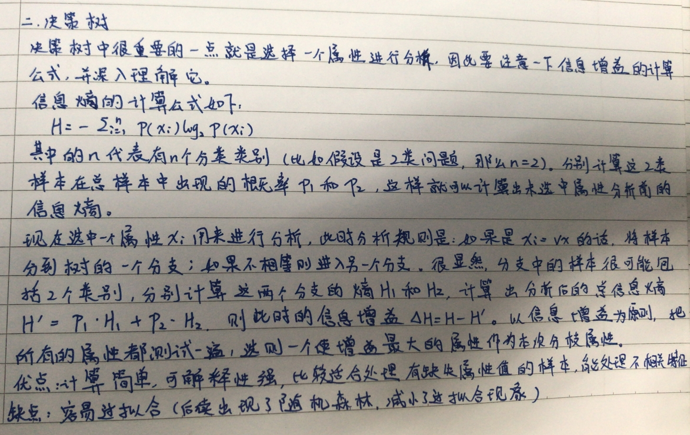<br>案例：<br>父节点和子节点是相对的，说白了子节点由父节点根据某一规则分裂而来，然后子节点作为新的父节点继续分裂，直至不能分裂为止。而根节点是没有父节点的节点。即初始分裂节点，叶子节点是没有子节点的节点，如下图：<br>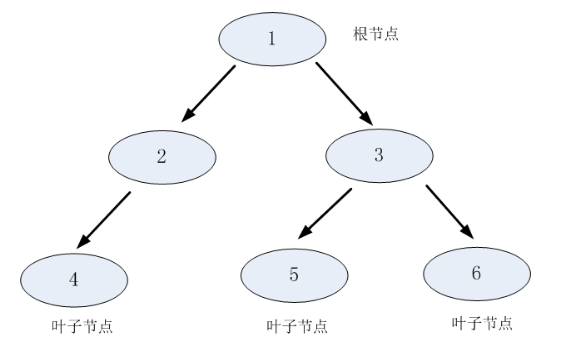<br>决策树利用如上图所示的树结构进行决策，每一个非叶子节点是一个判断条件，每一个叶子节点是结论。从跟节点开始，经过多次判断得出结论。<br>决策树如何做决策？<br>从一个分类例子说起：<br>银行希望能够通过一个人的信息（包括职业，年龄，收入，学历）去判断他是否有贷款的意向，从而更有针对性地完成工作。下表是银行现在能够掌握的信息，我们的目标是通过对下面的数据进行分析建立一个预测用户贷款的模型。<br><br>上面有4个客户的属性，如何综合利用这些属性去判断用户的贷款意向？决策树的做法是每次选择一个数据进行判断，如果不能得出结论，继续选择其他属性进行判断，直到能够“肯定地”判断出用户的类型或者是上述属性都已经使用完毕。比如说我们要判断一个客户的贷款意向，我们可以先根据客户的职业进行判断，如果不能得出结论，再根据年龄作判断，这样以此类推，直到可以得出结论为止。<br>决策树用树结构实现上述的判断流程：<br>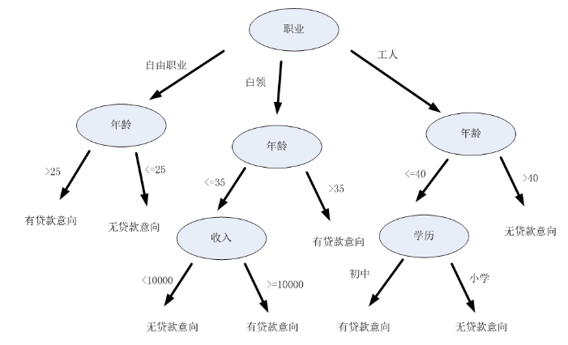<br>通过上面的训练数据，可以得出下面所示的决策树，其输入是用户的信息，输出是用户的贷款意向<br>如果要判断某一客户是否有贷款的意向，直接根据用户的职业，收入，年龄以及学历就可以分析得出用户的类型。如某客户的信息为：{职业，年龄，收入，学历}={工人，39, 1800，小学}，将信息输入上述决策树，可以得到下列的分析步骤和结论。<br>第一步：根据客户的职业进行判断，选择“工人”分支<br>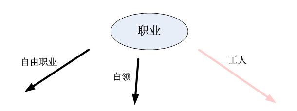<br>第二步：根据客户的年龄进行选择，选择年龄“&lt;=40”这一分支<br>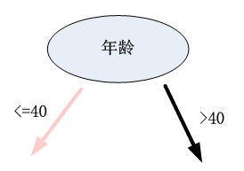<br>第三步：根据客户的学历进行选择，选择“小学”这一分支，得出该客户无贷款意向的结论<br>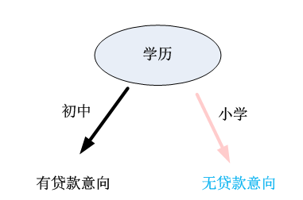  </p>
<p>那么如何构建上面那样的一颗决策树呢？决策树的构建是数据逐步分裂的过程，构建的步骤如下：<br>步骤1：将所有的数据看成是一个节点，进入步骤2；<br>步骤2：从给所有的数据特征中挑选一个数据特征对节点进行分割，进入步骤3；<br>步骤3：生成若干孩子节点，对每一个孩子节点进行判断，如果满足停止分裂的条件，进入步骤4；否则进入步骤2；<br>步骤4：设置该节点是子节点，其输出的结果为该节点数量占比最大的类别；<br>从上述步骤可以看，决策生成过程中有三个重要的问题：<br>（1）数据如何分割<br>（2）如何选择分裂属性<br>（3）什么时候停止分裂  </p>
<h2 id="数据分割"><a href="#数据分割" class="headerlink" title="数据分割"></a>数据分割</h2><p>加入我们已经选择了一个分裂的属性，怎样对数据进行分裂呢？<br>分裂属性的数据类型分为离散型和连续型两种情况，对于离散型的数据，按照属性值进行分裂，每个属性值对应一个分裂节点；对于连续性属性，一般性的做法是对数据按照该属性进行排序，再将数据分成若干区间，如，[0,10],[10,20],[20,30],…,一个区间对应就一个节点，若数据的属性值落入某一区间则该数据就属于其对应的节点，若数据的属性值落入某一区间则该数据就属于其对应的节点。<br>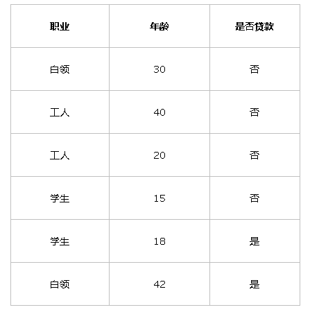<br>（1）属性1“职业”是离散型变量，有三个取值，分别为白领，工人和学生，根据三个取值对原始数据进行分割，如下表所示：<br>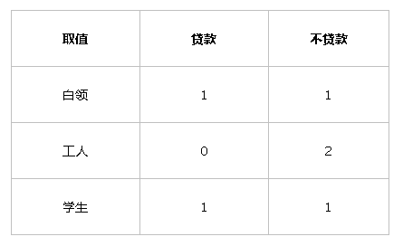<br>上表可以表示如下的决策树结构：<br>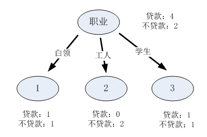<br>（2）属性2是连续型变量，这里将数据分成三个区间，分布是[10,20],[20,40],[40,-],则每一个区间的分裂结果如下：<br>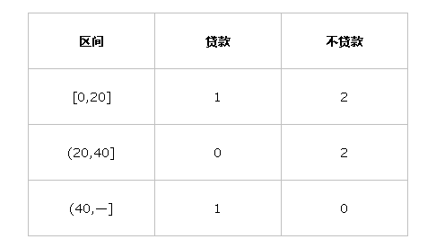<br>上表可以表示成如下的决策树结构：<br>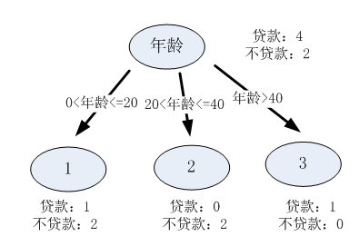  </p>
<h2 id="分裂属性的选择"><a href="#分裂属性的选择" class="headerlink" title="分裂属性的选择"></a>分裂属性的选择</h2><p>我们知道了分裂属性是如何对数据进行分割的，那么我们怎样选择分裂的属性呢？<br>决策树采用贪婪思想进行分裂，即选择可以得到最优分裂结果的属性进行分裂。那么怎样才算是最优的分裂结果呢？最理想的情况当然是能找到一个属性刚好能够将不同类别分开，但是大多数情况下分裂很难一步到位，我们希望每一次分裂之后孩子节点的数据尽量“纯”，以下图为例：<br>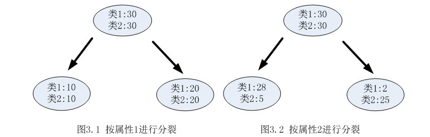<br>从上图可以明显看出，属性2分裂后的孩子节点比属性1分裂后的孩子节点更纯：属性1分裂后每个节点的两类的数量还是相同的，和根节点的分类结果相比完全没有提高；按照属性2分裂后每个节点各类的数量相差比较大，可以很大概率认为第一个孩子节点的输出结果为类1，第2个孩子节点的输出结果为2。<br>选择分裂属性是要找出能够使所有孩子节点数据最纯的属性，决策树使用信息增益或者信息增益率作为选择属性的依据。  </p>
<h3 id="（1）信息增益"><a href="#（1）信息增益" class="headerlink" title="（1）信息增益"></a>（1）信息增益</h3><p>用信息增益表示分裂前后跟的数据复杂度和分裂节点数据复杂度的变化值，计算公式表示为：<br>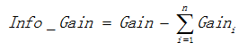<br>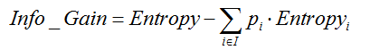<br>其中Gain表示节点的复杂度，Gain越高，说明复杂度越高。信息增益说白了就是分裂前的数据复杂度减去孩子节点的数据复杂度的和，信息增益越大，分裂后的复杂度减小得越多，分类的效果越明显。<br>节点的复杂度可以用以下两种不同的计算方式：  </p>
<ul>
<li>熵<br>熵描述了数据的混乱程度，熵越大，混乱程度越高，也就是纯度越低；反之，熵越小，混乱程度越低，纯度越高。熵的计算公式如下所示：<br>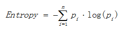<br>其中pi表示类i的数量占比。以二分类为题为例，如果两类的数量相同，此时分类节点的纯度最低，熵等于1；如果节点的数据属于同一类时，此时节点的纯度最高，熵等于0。  </li>
<li>基尼值<br>基尼值计算公式如下：<br>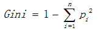<br>其中pi表示类i的数量占比。其同样以上述熵的二分类例子为例，当两类数量相等时，基尼值等于0.5；当节点数据属于同一类时，基尼值等于0。基尼值越大，数据越不纯。<br>例：<br>以熵作为节点复杂度的统计量，分布求出下面例子的信息增益，下图1表示节点选择属性1进行分裂的记过，图2表示节点选择属性2进行分裂的结果，通过计算两个属性分裂后的信息增益，选择最优的分裂属性。<br>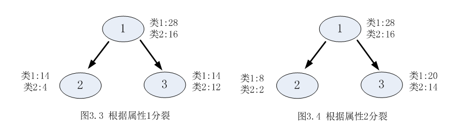<br>属性1：<br>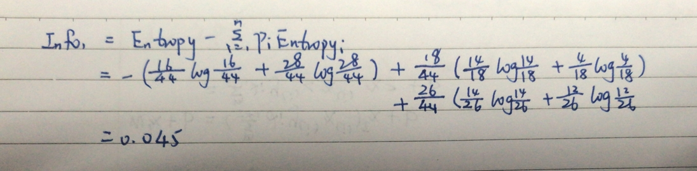<br>属性2：<br>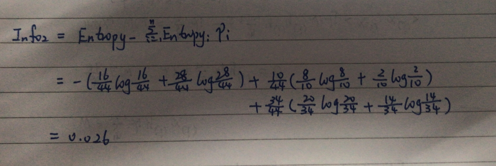  </li>
</ul>
<p>由于<code>Info1 &gt; Info2</code>，所以属性1与属性2相比是更优的分裂属性，故选择属性1作为分裂属性。  </p>
<h3 id="（2）信息增益率"><a href="#（2）信息增益率" class="headerlink" title="（2）信息增益率"></a>（2）信息增益率</h3><p>使用信息增益作为选择分裂的条件有一个不可避免的缺点：倾向选择分支比较多的属性进行分裂。为了解决这个问题，引入了信息增益率这个概念。信息增益率是在信息增益的基础上除以分裂节点数据量的信息增益，其计算公式如下：<br>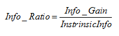<br>其中Info_Gain表示信息增益，InstrinsicInfo表示分裂子节点数据量的信息增益，其计算公式为：<br>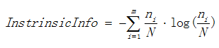<br>其中m表示子节点的数量，ni表示第i个子节点的数量，N表示父节点数据量，说白了，其实InstrinsicInfo是分裂节点的熵，如果节点的数据链月接近，InstrinsicInfo越大，如果子节点越大，InstrinsicInfo越大，而Info_Ratio就会越小，能够降低节点分裂时选择子节点多的分裂属性的倾向性。信息增益率越高，说明分裂效果越好。<br>例：<br>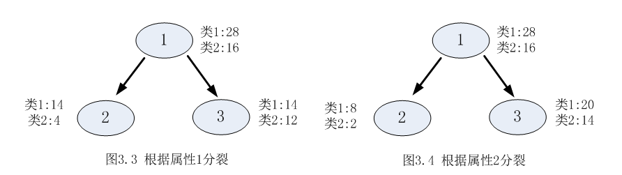<br>属性1的信息增益率:<br>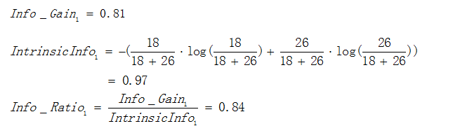<br>属性2的信息增益率：<br>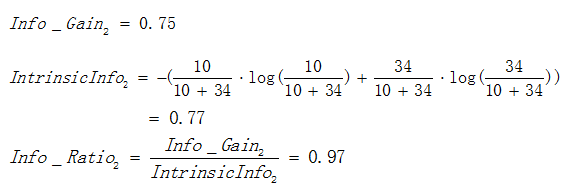<br>由于<code>Info_Ratio2 &gt; Info_Ratio1</code>，故选择属性2作为分裂的属性。  </p>
<h2 id="停止分裂的条件"><a href="#停止分裂的条件" class="headerlink" title="停止分裂的条件"></a>停止分裂的条件</h2><p>决策树不可能不限制地生长，总有停止分裂的时候，最极端的情况是当节点分裂到只剩下一个数据点时自动结束分裂，但这种情况下的树过于复杂，而且预测的精度不高。一般情况下未来降低决策树复杂度和提高预测的精度，会适当提前终止节点的分裂。<br>以下是决策树节点停止分裂的一般性条件：<br>（1）最小节点数<br>当节点的数据量小于一个指定的数量时，不继续分裂。两个原因：一是数据量较少时，再做分裂容易强化噪声数据的作用；二是降低树生长的复杂性。提前结束分裂一定程度上有利于降低过拟合的影响。<br>（2）熵或者基尼值小于阈值<br>由上述可知，熵和基尼值的大小表示数据的复杂程度，当熵或者基尼值过小时，表示数据的纯度比较大，如果熵或者基尼值小于一定程度数，节点停止分裂。<br>（3）决策树的深度达到指定的条件<br>节点的深度可以理解为节点与决策树根节点的距离，如根节点的子节点的深度为1，因为这些节点与跟节点的距离为1，子节点的深度要比父节点的深度大1。决策树的深度是所有叶子节点的最大深度，当深度到达指定的上限大小时，停止分裂。<br>（4）所有特征已经使用完毕，不能继续进行分裂。<br>被动式停止分裂的条件，当已经没有可分的属性时，直接将当前节点设置为叶子节点。  </p>
<h1 id="决策树–剪枝"><a href="#决策树–剪枝" class="headerlink" title="决策树–剪枝"></a>决策树–剪枝</h1><p>什么是剪枝？<br>剪枝是指将一颗子树的子节点全部删掉吗，根节点作为叶子节点，以下图为例：<br>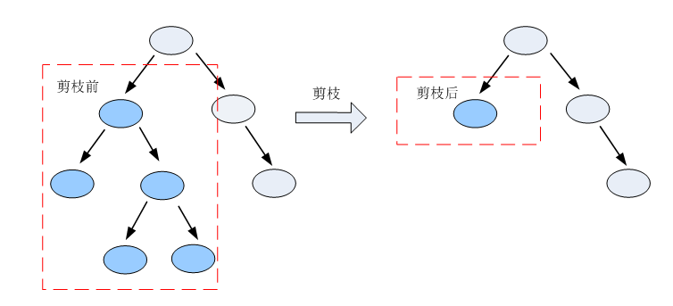<br>为什么要剪枝？<br>决策树是充分考虑了所有的数据点而生成的复杂树，有可能出现过拟合的情况，决策树越复杂，过拟合的程度会越高。<br>考虑极端的情况，如果我们令所有的叶子节点都只含有一个数据点，那么我们能够保证所有的训练数据都能准确分类，但是有可能得到高的预测误差，原因是将训练数据中所有的噪声数据都准确划分了，强化了噪声数据的作用。<br>剪枝修剪分裂前后分类误差相差不大的子树，能够降低决策树的复杂度，降低过拟合出现的概率。<br>怎样剪枝？<br>两种方案:先剪枝和后剪枝<br>先剪枝说白了就是提前结束决策树的增长，跟上述决策树停止生长的方法一样。<br>后剪枝是指在决策树生长完成之后再进行剪枝的过程。<br>三种后剪枝方案：<br>（1）REP-错误率降低剪枝<br>该剪枝方法是根据错误率进行剪枝，如果一颗子树修剪前后错误率没有下降，就可以认为该子树是可以修剪的。<br>REP剪枝需要用新的数据集，原因是如果用旧的数据集，不可能出现分裂后的错误率比分裂前错误率要高的情况。由于使用新的数据集没有参与决策树的构建，能够降低训练数据的影响，降低过拟合的程度，提高预测的准确率。<br>（2）PEP-悲观剪枝<br>悲观剪枝认为如果决策树的精度在剪枝前后没有影响的话，则进行剪枝。怎样才算没有影响？如果剪枝后的误差小于剪枝前精度的上限，则说明剪枝后的效果与剪枝前的效果一致，此时要进行剪枝。<br>进行剪枝必须满足的条件：<br>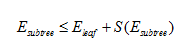<br>其中：<br>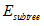表示剪枝前子树的误差；<br>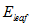表示剪枝后节点的误差；<br>两者的计算公式如下：<br>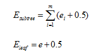<br>令子树误差的精度满足二项分布，根据二项分布的性质，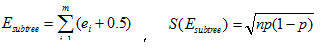，其中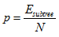，N为子树的数据量，同样的，叶子节点的误差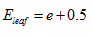<br>上述公式中，0.5表示修正因子。由于子节点是父节点进行分裂的结果，从理论上讲，子节点的分类效果总比父节点好，分类的误差更小，如果单纯通过比较子节点和父节点的误差进行剪枝就完全没有意义了，因此对节点的误差计算方法进行修正。修正的方法是给每一个节点都加上误差修正因子0.5，在计算误差的时候，子节点由于加上了误差修正因子，就无法保证总误差低于父节点。<br>例：<br>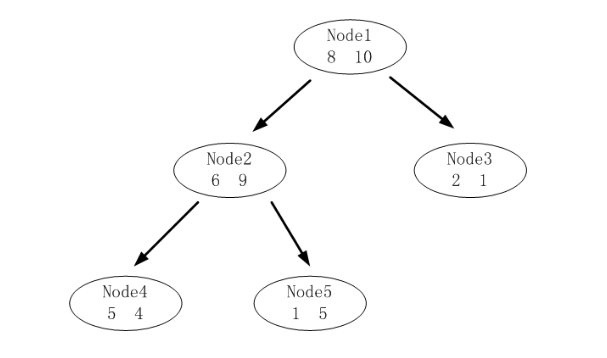<br>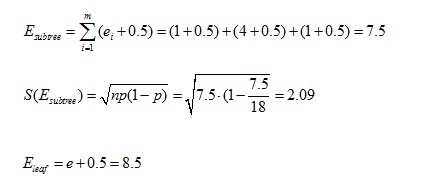<br>由于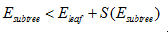，所以应该进行剪枝。<br>（3）CCP-代价复杂度剪枝<br>代价复杂度选择节点表面误差率增益值最小的非叶子节点，删除该非叶子节点的左右子节点，若有多个非叶子节点的表面误差率增益值相同小，则选择非叶子节点中子节点数最多的非叶子节点进行剪枝。<br>可描述如下：<br>令决策树的非叶子节点为{T1, T2, T3, … , Tn}。<br>a）计算所有非叶子节点的表面误差率增益值<br>b）选择表面误差率增益值最小的非叶子节点（若多个非叶子节点具有相同小的表面误差率增益值，选择节点数最多的非叶子节点）。<br>c）对选中的非叶子节点进行剪枝<br>表面误差率增益值的计算公式：<br>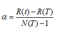<br>其中：<br>R(t)表示叶子节点的误差代价，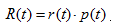，r(t)为节点的错误率，p(t)为节点数据量的占比<br>R(T)表示子树的误差代价，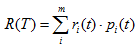，ri(t)为子节点i的错误率，pi(t)表示节点i的数据节点占比<br>N(T)表示子树节点个数<br>例：<br>下图是决策树A的其中一颗子树，决策树的总数据量为40。<br>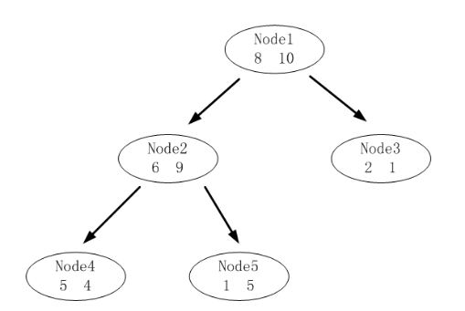<br>该子树的表面误差率增益值可以计算如下:<br>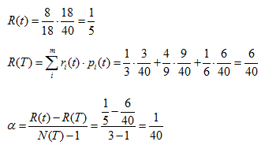<br>求出该子树的表面错误覆盖率为1/40，只要求出其他子树的表面误差率增益值就可以对决策树进行剪枝。</p>
<h1 id="决策树–ID3"><a href="#决策树–ID3" class="headerlink" title="决策树–ID3"></a>决策树–ID3</h1><p>例：通过当天的天气，温度，湿度和季节预测明天的天气<br>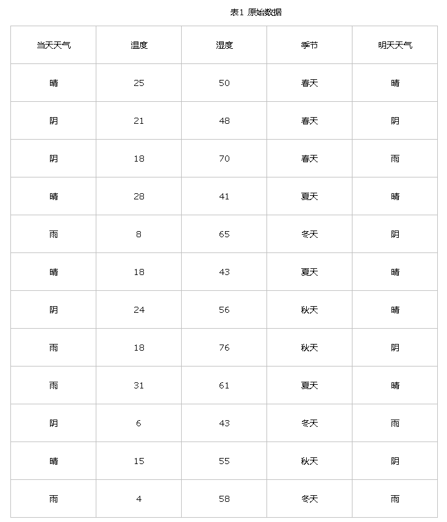  </p>
<ol>
<li>数据分割<br>对于离散型数据，直接按照离散数据的取值进行分裂，每一个取值对应一个子节点，以“当前天气”为例对数据进行分割，如图:<br>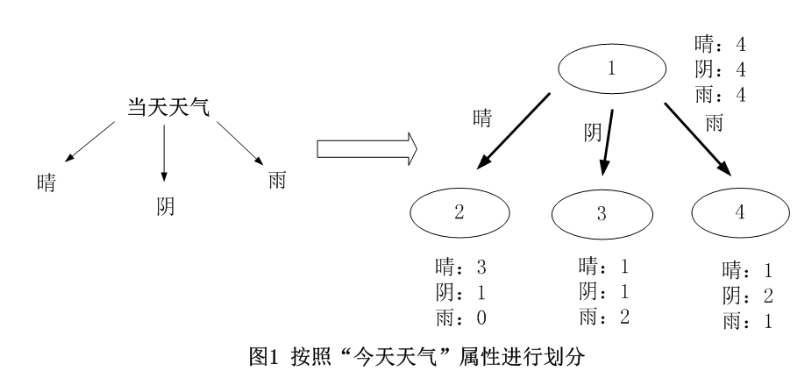<br>对于连续型数据，ID3原本是没有处理能力的，只有通过离散化将连续性数据转化为离散型数据再进行处理。<br>连续数据离散化，这里直接采用等距离数据划分的离散化方法。该方法先对数据进行排序，然后将连续性数据划分为多个区间，并使每一个区间的数据量基本相同，以温度为例对数据进行分割，如图：<br>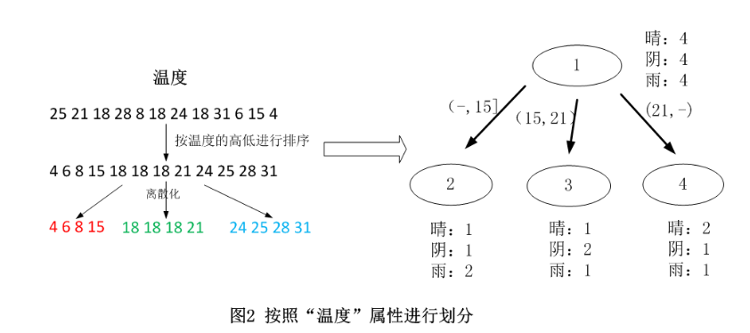  </li>
<li>选择最优分裂属性<br>ID3采用信息增益作为选择最优的分裂属性的方法，选择熵作为衡量节点纯度的标准，信息增益的计算公式前面已经给出过了。<br>对上述的例子的跟节点进行分裂，分布计算每一个属性的信息增益，选择信息增益最大的属性进行分裂。<br>天气属性：<br>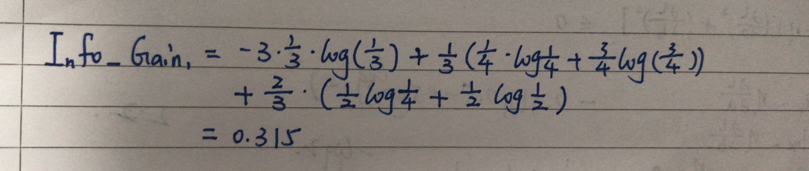<br>温度：<br>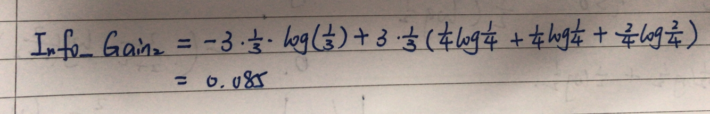<br>湿度：<br>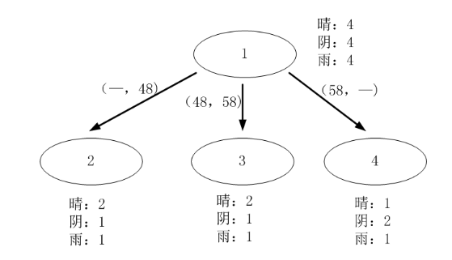<br><br>季节：<br>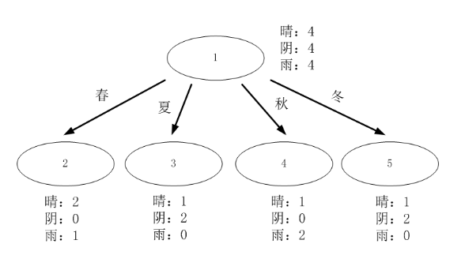<br>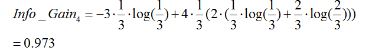<br>由于Info_Gain4最大，所以选择属性“季节”作为根节点的分裂属性。<br>ID3是基本的决策树构建算法，作为决策树经典的构建算法，其具有结构简单、清晰易懂的特点。虽然ID3比较灵活方便，但是有以下几个缺点：<br>（1）采用信息增益进行分裂，分裂的精确度可能没有采用信息增益率进行分裂高<br>（2）不能处理连续型数据，只能通过离散化将连续性数据转化为离散型数据<br>（3）不能处理缺省值<br>（4）没有对决策树进行剪枝处理，很可能会出现过拟合的问题  </li>
</ol>
<h1 id="决策树–C4-5"><a href="#决策树–C4-5" class="headerlink" title="决策树–C4.5"></a>决策树–C4.5</h1><p>上面说的ID3方法有几个缺点：一是采用信息增益进行数据分裂，准确性不如信息增益率；二是不能对连续数据进行处理，只能通过连续数据离散化进行处理；三是没有采用剪枝策略，决策树的结构可能会过于复杂，可能会出现过拟合的情况。<br>C4.5在ID3的基础上对上述三个方面进行了相应的改进：<br>a）C4.5对节点进行分裂时采用信息增益率作为分裂的依据；<br>b）能够对连续数据进行处理。<br>c）C4.5采用剪枝的策略，对完全生长的决策树进行剪枝处理，一定程度上降低过拟合的影响。  </p>
<ol>
<li>采用信息增益率作为分裂的依据<br>信息增益率的计算公式之前已经给出过了。信息增益率越大，说明分裂效果越好。<br>以一个实际的例子说明C4.5如何通过信息增益率选择分裂的属性：<br><br>以当天天气为例：<br>一共有三个属性值，晴，阴，雨，一共分裂成三个子节点。<br>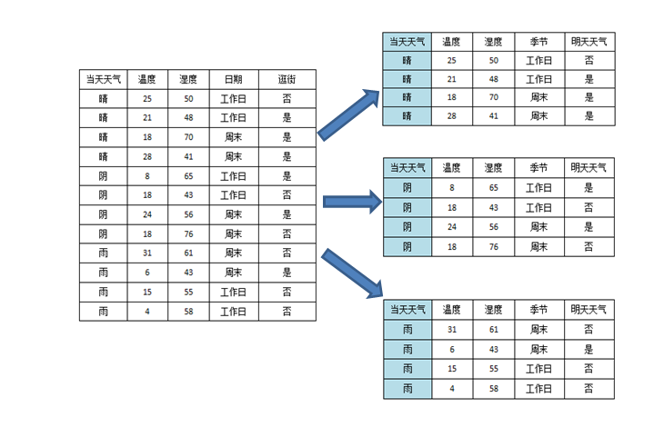<br>根据上述公式，可以计算信息增益率如下：<br>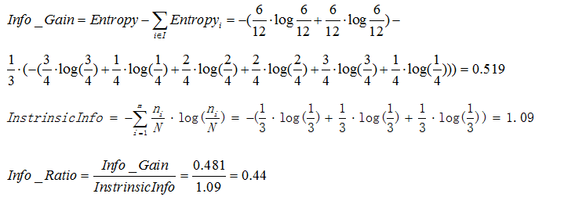<br>所以使用天气属性进行分裂可以得到信息增益率0.44。  </li>
<li>对连续型属性进行处理<br>C4.5处理离散型属性的方式与ID3一致，新增对连续型属性的处理。处理方式是先根据连续型属性进行排序，然后采用一刀切的方式将数据砍成两半。<br>那么如何选择切割点呢？很简单，直接计算每一个切割点切割后的信息增益，然后选择使分裂效果最优的切割点。以温度为例：<br><br>从上图可以看出，理论上来讲，N条数据就有N-1个切割点，为了选取最优的切割点，要计算按每一次切割的信息增益，计算量是比较大的，那么有没有简化的方法呢？注意到，其实有些切割点是很明显可以排除的。比如说上图右侧的第2条和第3条记录，两者的类标签（逛街）都是“是”，如果从这里切割的话，就将两个本来相同的类分开了，肯定不会比将他们归为一类的切分方法好，因此，可以通过去除前后两个类标签相同的切割点以简化计算的复杂度，如下：<br><br>从图中可以看出，最终切割点的书面从原来的的11个减少到现在的6个，降低了计算的复杂度。<br>确定了分割点之后，接下来就是选择最优的分割点了，注意，对连续型属性是采用信息增益进行内部择优的，因为如果使用信息增益率进行分裂会出现倾向于选择分割前后两个节点数据量相差最大的分割点。选择了最优的分割点之后，再计算信息增益率跟其他的属性进行比较，确定最优的分裂属性。  </li>
<li>剪枝<br>之前提到过，剪枝是在完全生长的决策树的基础上，对生长后分类效果不佳的子树进行修剪，减小决策树的复杂度，降低过拟合的影响。<br>C4.5采用悲观剪枝方法。悲观剪枝认为如果决策树的精度在剪枝前后没有影响的话，则进行剪枝。如果剪枝后的误差小于剪枝前精度的上限，则说明剪枝后的效果更佳，此时需要子树进行剪枝操作。<br>具体剪枝方法在上面已经说明。  <h1 id="决策树–CART"><a href="#决策树–CART" class="headerlink" title="决策树–CART"></a>决策树–CART</h1>CART，又名分类 回归树，是在ID3的基础上进行优化的决策树。<br>（1）CART既能是分类树，又能是回归树。<br>（2）当CART是分类树时，采用GINI值作为节点分裂的依据；当CART是回归树时，采用样本的最小方差作为节点分裂的依据。<br>（3）CART是一棵二叉树。<br>接下来将以一个实际的例子对CART进行介绍：<br><br>从以下思路理解CART：<br>分类树还是回归树？<br>分类树的作用是通过一个对象的特征来预测该对象所属的类别，而回归树的目的是根据一个对象的信息预测该对象的属性，并以数值表示。<br>CART既能是分类树，又能使回归树，如上表所示，如果我们想预测一个人是否已婚，那么构建的CART将使分类树；如果想预测一个人的年龄，那么构建的是回归树。<br>分类树和回归树是怎么做决策的？假设我们构建了两棵决策树分别预测用户是否已婚和实际的年龄，如图所示：<br><br>图1表示一棵分类树，其叶子节点的输出结果为一个实际的类别，在这个例子里是婚姻的情况（已婚或者未婚），选择叶子节点中数量占比最大的类别作为输出的类别；<br>图2是一棵回归树，预测用户的实际年龄，是一个具体的输出值。怎样得到这个输出值？一般情况下选择使用中值，平均值或者众数进行表示，图2使用节点年龄数据的平均值作为输出值。<br>CART如何选择分裂属性？<br>分裂的目的是为了能够让数据变纯，使决策树输出的结果更洁净真实值。那么CART是如何评价节点的纯度呢？如果是分类树，CART采用GINI值衡量节点纯度；如果是回归树，采用样本方差衡量节点纯度。节点越不纯，节点分类预测的效果就越差。<br>节点越不纯，GINI值越大。以二分类为例，如果节点的所有数据只有一个类别，则GINI=0，如果两类数量相同，则GINI=0.5。<br>回归方差计算公式：<br><br>方差越大，表示该节点的数据越分散，预测的效果就越差。如果一个节点的所有数据都相同，那么方差为0，此时可以很肯定得认为该节点的输出值；如果节点的数据相差很大，那么输出的值很大的可能与实际值相差较大。<br>因此，无论是分类树还是回归树，CART都要选择使子节点的GINI值或者回归方差最小的属性作为分裂的方案。即最小化（分类树）：  或者（回归树）：<br>CART如何分裂成一棵二叉树？<br>节点的分裂分为两种情况，连续型的数据和离散型的数据。<br>CART对连续型属性的处理与C4.5差不多，通过最小化分裂后的GINI值或者样本方差寻找最优分割点，将节点一分为二。<br>对离散型属性，理论上有多少个离散值就应该分裂成多少个节点。但CART是一棵二叉树，每一次分裂只会产生两个节点，怎么办呢？很简单，只要将其中一个离散值独立作为一个节点，其他的离散值生成另外一个节点即可。这种分裂方案有多少个离散值就有多少种划分的方法，例：如果某离散数学一共有三个离散值X,Y,Z，则该属性的分裂方法有{X}、{Y,Z},{Y}、{X,Z},{Z}、{X,Y}，分别计算每种划分方法的基尼值或者样本方差确定最优的方法。<br>以属性“职业”为例，一共有三个离散值，“学生”，“老师”，“上班族”。该属性有三种划分的方案，分别计算三种划分方案的子节点GINI值或者样本方差，选择最优的划分方法，如下：<br>第一种划分方法：{“学生”}、{“老师”，“上班族”}<br><br>预测是否已婚（分类）：<br><br>预测年龄（回归）：<br><br>第二种划分方法：{“老师”}、{“学生”，“上班族”}<br><br>预测是否已婚（分类）：<br><br>预测年龄（回归）：<br><br>第三种划分方法：{“上班族”}、{“学生”，“老师”}<br><br>预测是否已婚（分类）：<br><br>预测年龄（回归）：<br><br>综上，如果想预测是否已婚，则选择{“上班族”}、{“学生”，“老师”}的划分方法，如果想预测年龄，则选择{“老师”}、{“学生”，“上班族”}的划分方法。<br>如何剪枝？<br>CART采用CCP-代价复杂度剪枝方法。详细见之前的论述。<br>总结：<br>（1）CART是一棵二叉树，每一次分裂会产生两个子节点，对于连续性的数据，直接采用与C4.5相似的处理方法，对于离散型数据，选择最优的两种离散值组合方法。<br>（2）CART既能是分类数，又能是二叉树。如果是分类树，将选择能够最小化分裂后节点GINI值的分裂属性；如果是回归树，选择能够最小化两个节点样本方差的分裂属性。<br>（3）CART跟C4.5一样，需要进行剪枝，采用CCP（代价复杂度的剪枝方法）。  </li>
</ol>
<h1 id="随机森林"><a href="#随机森林" class="headerlink" title="随机森林"></a>随机森林</h1><p>随机森林就是通过集成学习的思想将多棵树集成的一种算法，它的基本单元是决策树，而它的本质属于机器学习的一大分支————集成学习（Ensemble Learning）方法。随机森林的名称中有两个关键词，一个是“随机”，一个实“森林”。“森林”很好理解，一棵叫做树，那么成百上千棵就可以叫做森林了。其实这也是随机森林的主要思想————集成思想的体现。<br>其实从直观角度解释，每棵决策树都是一个分类器（假设现在针对的是分类问题），那么对于一个输入样本，N棵树会有N个分类结果。而随机森林集成了所有的分类投票结果，将投票次数最多的类别指定为最终的输出，这就是一种简单的Bagging思想。<br>随机森林的特点：  </p>
<ul>
<li>在当前所有算法中，具有极好的准确率</li>
<li>能够有效地运行在大数据集上</li>
<li>能够处理具有高维特征的输入样本，而且不需要降维</li>
<li>能够评估各个特征在分类问题上的重要性</li>
<li>在生成过程中，能够获取到内部生成误差的一种无偏估计</li>
<li>对于缺省值问题也能够获得很好的结果  </li>
</ul>
<p>实际上，随机森林的特点不只有这六点，它就相当于机器学习领域的Leatherman，你几乎可以把任何东西扔进去，它基本上都是可供使用的。在估计推断映射方面特别好用，以致都不需要想SVM那样做很多参数的调试。  </p>
<p>随机森林看起来很好理解，但是要完全搞明白它的工作原理，需要很多机器学习方面相关的基础知识。<br>1）信息，熵以及信息增益的概念<br>这三个基本概念是决策树的根本，是决策树利用特征来分类时，确定特征选取顺序的依据。理解了它们，决策树也就了解了大概。<br>引用香农的话来说，信息是用来消除随机不确定性的东西。当然这句话虽然经典，但是还是很难去搞明白这种东西到底是个什么样，可能在不同的地方来说，指的东西又不一样。对于机器学习中的决策树而言，如果带分类的事物集合可以划分为多个类别当中，则某个类（xi）的信息可以定义如下：<br><br>I(x)用来表示随机变量的信息，p(xi)指的是当xi发生时的概率。<br>熵是用来度量不确定性的，当熵越大，X=xi的不确定性越大，反之越小。对于机器学习中的分类问题而言，熵越大即这个类别的不确定性更大，反之越小。<br>信息增益在决策树算法中是用来选择特征的指标，信息增益越大，则这个特征的选择性越好。<br>2）决策树<br>决策树是一种树形结构，其中每个内部节点表示一个属性上的测试，每个分支代表一个测试输出，每个叶节点代表一种类别。常见的决策树算法有C4.5、ID3和CART。<br>3）集成学习<br>集成学习通过建立几个模型组合来解决单一预测问题，它的工作原理是生成多个分类器/模型，各自独立地学习和作出预测。这些预测最后结合成单预测，因此优于任何一个单分类的做出预测。<br>随机森林是集成学习的一个子类，它依靠于决策树的投票选择来决定最后的分类结果。  </p>
<p>如何生成随机森林？<br>随机森林中有许多的分类树。我们要将一个输入样本进行分类，我们需要将输入样本输入到每棵树中进行分类。打个形象的比喻：森林中召开会议，讨论某个动物到底是老鼠还是松鼠，每棵树都要独立地发表自己对这个问题的看法，也就是每棵树都要投票。该动物到底是老鼠还是松鼠，要依据投票情况来确定，获得票数最多的类别就是森林的分类结果。森林中的每棵树都是独立的，99.9%不相关的树做出的预测结果涵盖所有的情况，这些预测结果将会彼此抵消。少数优秀的树的预测结果将会超脱于芸芸“噪音”，做出一个好的预测。将若干个弱分类器的分类结果进行投票选择，从而组成一个强分类器，这就是随机森林bagging的思想（关于bagging的一个有必要提及的问题：bagging的代价是不用单棵决策树来做预测，具体哪个变量起到重要作用变得未知，所以bagging改进了预测准确率但损失了解释性。）<br>有了树我们就可以分类了，但是森林中的每棵树是怎么生成的呢？<br>每棵树按照如下规则生成：<br>1）如果训练集大小为N，对于每棵树而言，随机且有放回地从训练集中抽取N个训练样本（这种采样方式称为bootstrap sample方法），作为该树的训练集；<br>从这里我们可以知道：每棵树的训练集都是不同的，而且里面包含重复的训练样本。<br>如果不进行随机抽样， 每棵树的训练集都一样，那么最终训练出的树分类结果也是完全一样的，这样的话完全没有bagging的必要；<br>如果不是有放回的抽样，那么每棵树的训练样本都是不同的，都是没有交集的，这样每棵树都是“有偏的”，都是绝对“片面的”，也就是说每棵树训练出来都是有很大的差异的；而随机森林最后分裂取决于多棵树的投票表决，这种表决应该是“求同”，因此使用完全不同的训练集来训练每棵树这样对最终分类结果是没有帮助的，这样无异于是“盲人摸象”。<br>2）如果每个样本的特征维度为M，指定一个常数m&lt;&lt;M，随机地从M个特征中选取m个特征子集，每次树进行分裂时，从这m个特征中选择最优的；<br>3）每棵树都尽最大程度的生长，并且没有剪枝过程。<br>一开始我们提到的随机森林中的“随机”就是指的这里的两个随机性。两个随机性的引入对随机森林的分类性至关重要。由于它们的引入，使得随机森林不容易陷入过拟合，并且具有很好的抗噪能力（比如：对缺省值不敏感）。<br>随机森林分类效果（错误率）与两个因素有关：  </p>
<ul>
<li>森林中任意两棵树的相关性：相关性越大，错误率越大；</li>
<li>森林中每棵树的分类能力：每棵树的分类能力越强，整个森林的错误率越低。  </li>
</ul>
<p>减小特征选择个数m，树的相关性和分类能力也会相应的降低；增大m，两者也会随之增大。所以关键问题是如何选择最优的m（或者是范围），这也是随机森林唯一的一个参数。  </p>
<p>袋外错误率（oob error）<br>上面我们提到，构建随机森林的关键问题就是如何选择最优的m，要解决这个问题主要依据计算袋外错误率oob error。<br>随机森林有一个最重要的优点就是，没有必要对它进行交叉验证或者用一个独立的测试集来获得误差的一个无偏估计。<br>我们知道，在构建每棵树时，我们对训练集使用了不同的bootstrap sample（随机且有放回地抽取）。所以对于每棵树而言（假设对于第k棵树），大约有1/3的训练实例没有参与第k棵树的生成。它们称为第k棵树的oob样本。<br>而这样的采样特点就允许我们进行oob估计，它的计算方式如下：<br>1）对每个样本，计算它作为oob样本的树对它的分类情况（约1/3的树）；<br>2）然后以简单多数投票作为该样本的分类结果；<br>3）最后用误分个数占样本总数的比率作为随机森林的oob误分率。<br>oob误分率是随机森林泛化误差的一个无偏估计，它的结果近似于需要大量计算的k折交叉验证。<br>一个简单的例子：<br>根据已有的训练集已经生成了对应的随机森林，随机森林如何利用某一个人的年龄，性别，教育情况，工作领域以及住宅地共5个字段来预测他的收入层次。<br>收入层次：<br>Band 1：Below $40000<br>Band 2: $40000 - 150000<br>Band 3: More than $150000<br>随机森林中每一棵树都可以看做是一棵CART（分类回归树），这里假设森林中有5棵CART树，总特征个数N=5，我们取m=1（这里假设每个CART树对应一个不同的特征）。<br><br><br><br><br><br>我们要预测某个人的信息如下：<br>1.Age：35 years 2.Gender：Male 3.Highest Educational Qualification：Diploma holder 4.Industry：Manufacturing 5.Residence：Metro<br>根据这五棵CART树的分类结果，我们可以针对这个人的信息建立收入层次的分布情况：<br><br>最后，我们得出结论，这个人的收入层次70%是一等，大约24%为二等，6%为三等，所以最终认为该人属于一等收入层次。<br>Pyhon实现：<br>利用Python的两个模块，pandas和scikit-learn来实现随机森林。</p>
<figure class="highlight python"><table><tr><td class="gutter"><pre><span class="line">1</span><br><span class="line">2</span><br><span class="line">3</span><br><span class="line">4</span><br><span class="line">5</span><br><span class="line">6</span><br><span class="line">7</span><br><span class="line">8</span><br><span class="line">9</span><br><span class="line">10</span><br><span class="line">11</span><br><span class="line">12</span><br><span class="line">13</span><br><span class="line">14</span><br><span class="line">15</span><br><span class="line">16</span><br><span class="line">17</span><br><span class="line">18</span><br><span class="line">19</span><br><span class="line">20</span><br></pre></td><td class="code"><pre><span class="line"><span class="keyword">from</span> sklearn.datasets <span class="keyword">import</span> load_iris</span><br><span class="line"><span class="keyword">from</span> sklearn.ensemble <span class="keyword">import</span> RandomForestClassifier</span><br><span class="line"><span class="keyword">import</span> pandas <span class="keyword">as</span> pd</span><br><span class="line"><span class="keyword">import</span> numpy <span class="keyword">as</span> np</span><br><span class="line"></span><br><span class="line">iris = load_iris()</span><br><span class="line">df = pd.DataFrame(iris.data, columns=iris.feature_names)</span><br><span class="line">df[<span class="string">'is_train'</span>] = np.random.uniform(<span class="number">0</span>, <span class="number">1</span>, len(df)) &lt;= <span class="number">.75</span></span><br><span class="line">df[<span class="string">'species'</span>]=pd.Categorical.from_codes(iris.target,iris.target_names)</span><br><span class="line">df.head()</span><br><span class="line"></span><br><span class="line">train, test = df[df[<span class="string">'is_train'</span>]==<span class="literal">True</span>], df[df[<span class="string">'is_train'</span>]==<span class="literal">False</span>]</span><br><span class="line"></span><br><span class="line">features = df.columns[:<span class="number">4</span>]</span><br><span class="line">clf = RandomForestClassifier(n_jobs=<span class="number">2</span>)</span><br><span class="line">y, _ = pd.factorize(train[<span class="string">'species'</span>])</span><br><span class="line">clf.fit(train[features], y)</span><br><span class="line"></span><br><span class="line">preds = iris.target_names[clf.predict(test[features])]</span><br><span class="line">pd.crosstab(test[<span class="string">'species'</span>], preds, rownames=[<span class="string">'actual'</span>], colnames=[<span class="string">'preds'</span>])</span><br></pre></td></tr></table></figure>

<p>分类结果是：<br>  </p>
<p>与其他机器学习分类算法进行对比：  </p>
<figure class="highlight python"><table><tr><td class="gutter"><pre><span class="line">1</span><br><span class="line">2</span><br><span class="line">3</span><br><span class="line">4</span><br><span class="line">5</span><br><span class="line">6</span><br><span class="line">7</span><br><span class="line">8</span><br><span class="line">9</span><br><span class="line">10</span><br><span class="line">11</span><br><span class="line">12</span><br><span class="line">13</span><br><span class="line">14</span><br><span class="line">15</span><br><span class="line">16</span><br><span class="line">17</span><br><span class="line">18</span><br><span class="line">19</span><br><span class="line">20</span><br><span class="line">21</span><br><span class="line">22</span><br><span class="line">23</span><br><span class="line">24</span><br><span class="line">25</span><br><span class="line">26</span><br><span class="line">27</span><br><span class="line">28</span><br><span class="line">29</span><br><span class="line">30</span><br><span class="line">31</span><br><span class="line">32</span><br><span class="line">33</span><br><span class="line">34</span><br><span class="line">35</span><br><span class="line">36</span><br><span class="line">37</span><br><span class="line">38</span><br><span class="line">39</span><br><span class="line">40</span><br><span class="line">41</span><br><span class="line">42</span><br><span class="line">43</span><br><span class="line">44</span><br><span class="line">45</span><br><span class="line">46</span><br><span class="line">47</span><br><span class="line">48</span><br><span class="line">49</span><br><span class="line">50</span><br><span class="line">51</span><br><span class="line">52</span><br><span class="line">53</span><br><span class="line">54</span><br><span class="line">55</span><br><span class="line">56</span><br><span class="line">57</span><br><span class="line">58</span><br><span class="line">59</span><br><span class="line">60</span><br><span class="line">61</span><br><span class="line">62</span><br><span class="line">63</span><br><span class="line">64</span><br><span class="line">65</span><br><span class="line">66</span><br><span class="line">67</span><br><span class="line">68</span><br><span class="line">69</span><br><span class="line">70</span><br><span class="line">71</span><br><span class="line">72</span><br><span class="line">73</span><br><span class="line">74</span><br><span class="line">75</span><br><span class="line">76</span><br><span class="line">77</span><br><span class="line">78</span><br><span class="line">79</span><br><span class="line">80</span><br><span class="line">81</span><br><span class="line">82</span><br><span class="line">83</span><br><span class="line">84</span><br><span class="line">85</span><br></pre></td><td class="code"><pre><span class="line"><span class="keyword">import</span> numpy <span class="keyword">as</span> np</span><br><span class="line"><span class="keyword">import</span> matplotlib.pyplot <span class="keyword">as</span> plt</span><br><span class="line"><span class="keyword">from</span> matplotlib.colors <span class="keyword">import</span> ListedColormap</span><br><span class="line"><span class="keyword">from</span> sklearn.cross_validation <span class="keyword">import</span> train_test_split</span><br><span class="line"><span class="keyword">from</span> sklearn.preprocessing <span class="keyword">import</span> StandardScaler</span><br><span class="line"><span class="keyword">from</span> sklearn.datasets <span class="keyword">import</span> make_moons, make_circles, make_classification</span><br><span class="line"><span class="keyword">from</span> sklearn.neighbors <span class="keyword">import</span> KNeighborsClassifier</span><br><span class="line"><span class="keyword">from</span> sklearn.svm <span class="keyword">import</span> SVC</span><br><span class="line"><span class="keyword">from</span> sklearn.tree <span class="keyword">import</span> DecisionTreeClassifier</span><br><span class="line"><span class="keyword">from</span> sklearn.ensemble <span class="keyword">import</span> RandomForestClassifier, AdaBoostClassifier</span><br><span class="line"><span class="keyword">from</span> sklearn.naive_bayes <span class="keyword">import</span> GaussianNB</span><br><span class="line"><span class="keyword">from</span> sklearn.discriminant_analysis <span class="keyword">import</span> LinearDiscriminantAnalysis <span class="keyword">as</span> LDA</span><br><span class="line"><span class="keyword">from</span> sklearn.discriminant_analysis <span class="keyword">import</span> QuadraticDiscriminantAnalysis <span class="keyword">as</span> QDA</span><br><span class="line"></span><br><span class="line">h = <span class="number">.02</span>  <span class="comment"># step size in the mesh</span></span><br><span class="line"></span><br><span class="line">names = [<span class="string">"Nearest Neighbors"</span>, <span class="string">"Linear SVM"</span>, <span class="string">"RBF SVM"</span>, <span class="string">"Decision Tree"</span>,</span><br><span class="line">         <span class="string">"Random Forest"</span>, <span class="string">"AdaBoost"</span>, <span class="string">"Naive Bayes"</span>, <span class="string">"LDA"</span>, <span class="string">"QDA"</span>]</span><br><span class="line">classifiers = [</span><br><span class="line">    KNeighborsClassifier(<span class="number">3</span>),</span><br><span class="line">    SVC(kernel=<span class="string">"linear"</span>, C=<span class="number">0.025</span>),</span><br><span class="line">    SVC(gamma=<span class="number">2</span>, C=<span class="number">1</span>),</span><br><span class="line">    DecisionTreeClassifier(max_depth=<span class="number">5</span>),</span><br><span class="line">    RandomForestClassifier(max_depth=<span class="number">5</span>, n_estimators=<span class="number">10</span>, max_features=<span class="number">1</span>),</span><br><span class="line">    AdaBoostClassifier(),</span><br><span class="line">    GaussianNB(),</span><br><span class="line">    LDA(),</span><br><span class="line">    QDA()]</span><br><span class="line"></span><br><span class="line">X, y = make_classification(n_features=<span class="number">2</span>, n_redundant=<span class="number">0</span>, n_informative=<span class="number">2</span>,</span><br><span class="line">                           random_state=<span class="number">1</span>, n_clusters_per_class=<span class="number">1</span>)</span><br><span class="line">rng = np.random.RandomState(<span class="number">2</span>)</span><br><span class="line">X += <span class="number">2</span> * rng.uniform(size=X.shape)</span><br><span class="line">linearly_separable = (X, y)</span><br><span class="line"></span><br><span class="line">datasets = [make_moons(noise=<span class="number">0.3</span>, random_state=<span class="number">0</span>),</span><br><span class="line">            make_circles(noise=<span class="number">0.2</span>, factor=<span class="number">0.5</span>, random_state=<span class="number">1</span>),</span><br><span class="line">            linearly_separable</span><br><span class="line">            ]</span><br><span class="line"></span><br><span class="line">figure = plt.figure(figsize=(<span class="number">27</span>, <span class="number">9</span>))</span><br><span class="line">i = <span class="number">1</span></span><br><span class="line"><span class="comment"># iterate over datasets</span></span><br><span class="line"><span class="keyword">for</span> ds <span class="keyword">in</span> datasets:</span><br><span class="line">    X, y = ds</span><br><span class="line">    X = StandardScaler().fit_transform(X)</span><br><span class="line">    X_train, X_test, y_train, y_test = train_test_split(X, y, test_size=<span class="number">.4</span>)</span><br><span class="line">    x_min, x_max = X[:, <span class="number">0</span>].min() - <span class="number">.5</span>, X[:, <span class="number">0</span>].max() + <span class="number">.5</span></span><br><span class="line">    y_min, y_max = X[:, <span class="number">1</span>].min() - <span class="number">.5</span>, X[:, <span class="number">1</span>].max() + <span class="number">.5</span></span><br><span class="line">    xx, yy = np.meshgrid(np.arange(x_min, x_max, h),</span><br><span class="line">                         np.arange(y_min, y_max, h))</span><br><span class="line">    cm = plt.cm.RdBu</span><br><span class="line">    cm_bright = ListedColormap([<span class="string">'#FF0000'</span>, <span class="string">'#0000FF'</span>])</span><br><span class="line">    ax = plt.subplot(len(datasets), len(classifiers) + <span class="number">1</span>, i)</span><br><span class="line">    ax.scatter(X_train[:, <span class="number">0</span>], X_train[:, <span class="number">1</span>], c=y_train, cmap=cm_bright)</span><br><span class="line">    ax.scatter(X_test[:, <span class="number">0</span>], X_test[:, <span class="number">1</span>], c=y_test, cmap=cm_bright, alpha=<span class="number">0.6</span>)</span><br><span class="line">    ax.set_xlim(xx.min(), xx.max())</span><br><span class="line">    ax.set_ylim(yy.min(), yy.max())</span><br><span class="line">    ax.set_xticks(())</span><br><span class="line">    ax.set_yticks(())</span><br><span class="line">    i += <span class="number">1</span></span><br><span class="line">    <span class="keyword">for</span> name, clf <span class="keyword">in</span> zip(names, classifiers):</span><br><span class="line">        ax = plt.subplot(len(datasets), len(classifiers) + <span class="number">1</span>, i)</span><br><span class="line">        clf.fit(X_train, y_train)</span><br><span class="line">        score = clf.score(X_test, y_test)</span><br><span class="line">        <span class="keyword">if</span> hasattr(clf, <span class="string">"decision_function"</span>):</span><br><span class="line">            Z = clf.decision_function(np.c_[xx.ravel(), yy.ravel()])</span><br><span class="line">        <span class="keyword">else</span>:</span><br><span class="line">            Z = clf.predict_proba(np.c_[xx.ravel(), yy.ravel()])[:, <span class="number">1</span>]</span><br><span class="line">        Z = Z.reshape(xx.shape)</span><br><span class="line">        ax.contourf(xx, yy, Z, cmap=cm, alpha=<span class="number">.8</span>)</span><br><span class="line">        ax.scatter(X_train[:, <span class="number">0</span>], X_train[:, <span class="number">1</span>], c=y_train, cmap=cm_bright)</span><br><span class="line">        ax.scatter(X_test[:, <span class="number">0</span>], X_test[:, <span class="number">1</span>], c=y_test, cmap=cm_bright,</span><br><span class="line">                   alpha=<span class="number">0.6</span>)</span><br><span class="line">        ax.set_xlim(xx.min(), xx.max())</span><br><span class="line">        ax.set_ylim(yy.min(), yy.max())</span><br><span class="line">        ax.set_xticks(())</span><br><span class="line">        ax.set_yticks(())</span><br><span class="line">        ax.set_title(name)</span><br><span class="line">        ax.text(xx.max() - <span class="number">.3</span>, yy.min() + <span class="number">.3</span>, (<span class="string">'%.2f'</span> % score).lstrip(<span class="string">'0'</span>),</span><br><span class="line">                size=<span class="number">15</span>, horizontalalignment=<span class="string">'right'</span>)</span><br><span class="line">        i += <span class="number">1</span></span><br><span class="line"></span><br><span class="line">figure.subplots_adjust(left=<span class="number">.02</span>, right=<span class="number">.98</span>)</span><br><span class="line">plt.show()</span><br></pre></td></tr></table></figure>

<p>  </p>
<h1 id="决策树实例及python实现"><a href="#决策树实例及python实现" class="headerlink" title="决策树实例及python实现"></a>决策树实例及python实现</h1><p>  </p>
<figure class="highlight python"><table><tr><td class="gutter"><pre><span class="line">1</span><br><span class="line">2</span><br><span class="line">3</span><br><span class="line">4</span><br><span class="line">5</span><br><span class="line">6</span><br><span class="line">7</span><br><span class="line">8</span><br><span class="line">9</span><br><span class="line">10</span><br><span class="line">11</span><br><span class="line">12</span><br><span class="line">13</span><br><span class="line">14</span><br><span class="line">15</span><br><span class="line">16</span><br><span class="line">17</span><br><span class="line">18</span><br><span class="line">19</span><br><span class="line">20</span><br><span class="line">21</span><br><span class="line">22</span><br><span class="line">23</span><br><span class="line">24</span><br><span class="line">25</span><br><span class="line">26</span><br><span class="line">27</span><br><span class="line">28</span><br><span class="line">29</span><br><span class="line">30</span><br><span class="line">31</span><br><span class="line">32</span><br><span class="line">33</span><br><span class="line">34</span><br><span class="line">35</span><br><span class="line">36</span><br><span class="line">37</span><br><span class="line">38</span><br><span class="line">39</span><br><span class="line">40</span><br><span class="line">41</span><br><span class="line">42</span><br><span class="line">43</span><br><span class="line">44</span><br><span class="line">45</span><br><span class="line">46</span><br><span class="line">47</span><br><span class="line">48</span><br><span class="line">49</span><br><span class="line">50</span><br><span class="line">51</span><br><span class="line">52</span><br><span class="line">53</span><br><span class="line">54</span><br><span class="line">55</span><br><span class="line">56</span><br><span class="line">57</span><br><span class="line">58</span><br><span class="line">59</span><br><span class="line">60</span><br><span class="line">61</span><br><span class="line">62</span><br><span class="line">63</span><br><span class="line">64</span><br><span class="line">65</span><br><span class="line">66</span><br><span class="line">67</span><br><span class="line">68</span><br><span class="line">69</span><br><span class="line">70</span><br><span class="line">71</span><br><span class="line">72</span><br><span class="line">73</span><br><span class="line">74</span><br><span class="line">75</span><br><span class="line">76</span><br><span class="line">77</span><br><span class="line">78</span><br><span class="line">79</span><br><span class="line">80</span><br><span class="line">81</span><br><span class="line">82</span><br><span class="line">83</span><br><span class="line">84</span><br><span class="line">85</span><br><span class="line">86</span><br><span class="line">87</span><br><span class="line">88</span><br><span class="line">89</span><br><span class="line">90</span><br></pre></td><td class="code"><pre><span class="line"><span class="keyword">from</span> math <span class="keyword">import</span> log</span><br><span class="line"><span class="keyword">import</span> operator</span><br><span class="line"></span><br><span class="line"><span class="comment"># 计算数据的熵</span></span><br><span class="line"><span class="function"><span class="keyword">def</span> <span class="title">calcShannonEnt</span><span class="params">(dataSet)</span>:</span></span><br><span class="line">    numEntries = len(dataSet)</span><br><span class="line">    labelCounts = &#123;&#125;</span><br><span class="line">    <span class="keyword">for</span> featVec <span class="keyword">in</span> dataSet:</span><br><span class="line">        currentLabel = featVec[<span class="number">-1</span>]</span><br><span class="line">        <span class="keyword">if</span> currentLabel <span class="keyword">not</span> <span class="keyword">in</span> labelCounts.keys():</span><br><span class="line">            labelCounts[currentLabel] = <span class="number">0</span></span><br><span class="line">        labelCounts[currentLabel]+=<span class="number">1</span></span><br><span class="line">    shannonEnt = <span class="number">0</span></span><br><span class="line">    <span class="keyword">for</span> key <span class="keyword">in</span> labelCounts:</span><br><span class="line">        prob = float(labelCounts[key])/numEntries</span><br><span class="line">        shannonEnt -= prob*log(prob,<span class="number">2</span>)</span><br><span class="line">    <span class="keyword">return</span> shannonEnt</span><br><span class="line"></span><br><span class="line"><span class="function"><span class="keyword">def</span> <span class="title">createDataSet1</span><span class="params">()</span>:</span></span><br><span class="line">    dataSet = [[<span class="string">'长'</span>,<span class="string">'粗'</span>,<span class="string">'男'</span>],</span><br><span class="line">    [<span class="string">'短'</span>,<span class="string">'粗'</span>,<span class="string">'男'</span>],</span><br><span class="line">    [<span class="string">'短'</span>,<span class="string">'粗'</span>,<span class="string">'男'</span>],</span><br><span class="line">    [<span class="string">'长'</span>,<span class="string">'细'</span>,<span class="string">'女'</span>],</span><br><span class="line">    [<span class="string">'短'</span>,<span class="string">'细'</span>,<span class="string">'女'</span>],</span><br><span class="line">    [<span class="string">'短'</span>,<span class="string">'粗'</span>,<span class="string">'女'</span>],</span><br><span class="line">    [<span class="string">'长'</span>,<span class="string">'粗'</span>,<span class="string">'女'</span>],</span><br><span class="line">    [<span class="string">'长'</span>,<span class="string">'粗'</span>,<span class="string">'女'</span>]]</span><br><span class="line">    labels = [<span class="string">'头发'</span>,<span class="string">'声音'</span>]</span><br><span class="line">    <span class="keyword">return</span> dataSet,labels</span><br><span class="line"></span><br><span class="line"><span class="comment"># 按某个特征分类后的数据</span></span><br><span class="line"><span class="function"><span class="keyword">def</span> <span class="title">splitDataSet</span><span class="params">(dataSet,axis,value)</span>:</span></span><br><span class="line">    retDataSet = []</span><br><span class="line">    <span class="keyword">for</span> featVec <span class="keyword">in</span> dataSet:</span><br><span class="line">        <span class="keyword">if</span> featVec[axis] == value:</span><br><span class="line">            reducedFeatVec = featVec[:axis]</span><br><span class="line">            reducedFeatVec.extend(featVec[axis+<span class="number">1</span>:])</span><br><span class="line">            retDataSet.append(reducedFeatVec)</span><br><span class="line">    <span class="keyword">return</span> retDataSet</span><br><span class="line"></span><br><span class="line"><span class="comment"># 选择最优的分类特征</span></span><br><span class="line"><span class="function"><span class="keyword">def</span> <span class="title">chooseBestFeatureToSplit</span><span class="params">(dataSet)</span>:</span></span><br><span class="line">    numFeatures = len(dataSet[<span class="number">0</span>]) - <span class="number">1</span></span><br><span class="line">    baseEntropy = calcShannonEnt(dataSet)</span><br><span class="line">    bestInfoGain = <span class="number">0</span></span><br><span class="line">    bestFeature = <span class="number">-1</span></span><br><span class="line">    <span class="keyword">for</span> i <span class="keyword">in</span> range(numFeatures):</span><br><span class="line">        featList = [example[i] <span class="keyword">for</span> example <span class="keyword">in</span> dataSet]</span><br><span class="line">        uniqueVals = set(featList)</span><br><span class="line">        newEntropy = <span class="number">0</span></span><br><span class="line">        <span class="keyword">for</span> value <span class="keyword">in</span> uniqueVals:</span><br><span class="line">            subDataSet = splitDataSet(dataSet, i, value)</span><br><span class="line">            prob = len(subDataSet)/float(len(dataSet))</span><br><span class="line">            newEntropy += prob*calcShannonEnt(subDataSet)</span><br><span class="line">        infoGain = baseEntropy-newEntropy</span><br><span class="line">        <span class="keyword">if</span>(infoGain&gt;bestInfoGain):</span><br><span class="line">            bestInfoGain = infoGain</span><br><span class="line">            bestFeature = i</span><br><span class="line">    <span class="keyword">return</span> bestFeature</span><br><span class="line"></span><br><span class="line"><span class="comment"># 按分类后类别数量排序</span></span><br><span class="line"><span class="function"><span class="keyword">def</span> <span class="title">majorityCnt</span><span class="params">(classList)</span>:</span></span><br><span class="line">    classCount=&#123;&#125;</span><br><span class="line">    <span class="keyword">for</span> vote <span class="keyword">in</span> classList:</span><br><span class="line">        <span class="keyword">if</span> vote <span class="keyword">not</span> <span class="keyword">in</span> classCount.keys():</span><br><span class="line">            classCount[vote]=<span class="number">0</span></span><br><span class="line">        classCount[vote]+=<span class="number">1</span></span><br><span class="line">    sortedClassCount = sorted(classCount.items(),key=operator.itemgetter(<span class="number">1</span>),reverse=<span class="literal">True</span>)</span><br><span class="line">    <span class="keyword">return</span> sortedClassCount[<span class="number">0</span>][<span class="number">0</span>]</span><br><span class="line"></span><br><span class="line"><span class="function"><span class="keyword">def</span> <span class="title">createTree</span><span class="params">(dataSet,labels)</span>:</span></span><br><span class="line">    classList=[example[<span class="number">-1</span>] <span class="keyword">for</span> example <span class="keyword">in</span> dataSet]</span><br><span class="line">    <span class="keyword">if</span> classList.count(classList[<span class="number">0</span>])==len(classList):</span><br><span class="line">        <span class="keyword">return</span> classList[<span class="number">0</span>]</span><br><span class="line">    <span class="keyword">if</span> len(dataSet[<span class="number">0</span>])==<span class="number">1</span>:</span><br><span class="line">        <span class="keyword">return</span> majorityCnt(classList)</span><br><span class="line">    bestFeat=chooseBestFeatureToSplit(dataSet)</span><br><span class="line">    bestFeatLaebl=labels[bestFeat]</span><br><span class="line">    myTree=&#123;bestFeatLaebl:&#123;&#125;&#125;</span><br><span class="line">    <span class="keyword">del</span>(labels[bestFeat])</span><br><span class="line">    featValues=[example[bestFeat] <span class="keyword">for</span> example <span class="keyword">in</span> dataSet]</span><br><span class="line">    uniqueVals=set(featValues)</span><br><span class="line">    <span class="keyword">for</span> value <span class="keyword">in</span> uniqueVals:</span><br><span class="line">        subLabels=labels[:]</span><br><span class="line">        myTree[bestFeatLaebl][value]=createTree(splitDataSet(dataSet,bestFeat,value),subLabels)</span><br><span class="line">    <span class="keyword">return</span> myTree</span><br><span class="line"></span><br><span class="line"><span class="keyword">if</span> __name__==<span class="string">'__main__'</span>:</span><br><span class="line">    dataSet,labels=createDataSet1()</span><br><span class="line">    print(createTree(dataSet,labels))</span><br></pre></td></tr></table></figure>


      

      
        <div class="page-reward">
          <a href="javascript:;" class="page-reward-btn tooltip-top">
            <div class="tooltip tooltip-east">
            <span class="tooltip-item">
              赏
            </span>
            <span class="tooltip-content">
              <span class="tooltip-text">
                <span class="tooltip-inner">
                  <p class="reward-p"><i class="icon icon-quo-left"></i>谢谢你请我吃糖果<i class="icon icon-quo-right"></i></p>
                  <div class="reward-box">
                    
                    
                  </div>
                </span>
              </span>
            </span>
          </div>
          </a>
        </div>
      
    </div>
    <div class="article-info article-info-index">
      
      
	<div class="article-tag tagcloud">
		<i class="icon-price-tags icon"></i>
		<ul class="article-tag-list">
			 
        		<li class="article-tag-list-item">
        			<a href="javascript:void(0)" class="js-tag article-tag-list-link color2">Python</a>
        		</li>
      		 
        		<li class="article-tag-list-item">
        			<a href="javascript:void(0)" class="js-tag article-tag-list-link color5">机器学习</a>
        		</li>
      		
		</ul>
	</div>

      
	<div class="article-category tagcloud">
		<i class="icon-book icon"></i>
		<ul class="article-tag-list">
			 
        		<li class="article-tag-list-item">
        			<a href="/categories/机器学习//" class="article-tag-list-link color5">机器学习</a>
        		</li>
      		
		</ul>
	</div>


      

      
        
<div class="share-btn share-icons tooltip-left">
  <div class="tooltip tooltip-east">
    <span class="tooltip-item">
      <a href="javascript:;" class="share-sns share-outer">
        <i class="icon icon-share"></i>
      </a>
    </span>
    <span class="tooltip-content">
      <div class="share-wrap">
        <div class="share-icons">
          <a class="weibo share-sns" href="javascript:;" data-type="weibo">
            <i class="icon icon-weibo"></i>
          </a>
          <a class="weixin share-sns wxFab" href="javascript:;" data-type="weixin">
            <i class="icon icon-weixin"></i>
          </a>
          <a class="qq share-sns" href="javascript:;" data-type="qq">
            <i class="icon icon-qq"></i>
          </a>
          <a class="douban share-sns" href="javascript:;" data-type="douban">
            <i class="icon icon-douban"></i>
          </a>
          <a class="qzone share-sns" href="javascript:;" data-type="qzone">
            <i class="icon icon-qzone"></i>
          </a>
          <a class="facebook share-sns" href="javascript:;" data-type="facebook">
            <i class="icon icon-facebook"></i>
          </a>
          <a class="twitter share-sns" href="javascript:;" data-type="twitter">
            <i class="icon icon-twitter"></i>
          </a>
          <a class="google share-sns" href="javascript:;" data-type="google">
            <i class="icon icon-google"></i>
          </a>
        </div>
      </div>
    </span>
  </div>
</div>

<div class="page-modal wx-share js-wx-box">
    <a class="close js-modal-close" href="javascript:;"><i class="icon icon-close"></i></a>
    <p>扫一扫，分享到微信</p>
    <div class="wx-qrcode">
      
    </div>
</div>

<div class="mask js-mask"></div>
      
      <div class="clearfix"></div>
    </div>
  </div>
</article>

  
<nav id="article-nav">
  
  
    <a href="/2019/08/30/machine_learning/" id="article-nav-older" class="article-nav-link-wrap">
      <div class="article-nav-title">人工智能，机器学习，深度学习的区别</div>
      <i class="icon-circle-right"></i>
    </a>
  
</nav>


<aside class="wrap-side-operation">
    <div class="mod-side-operation">
        
        <div class="jump-container" id="js-jump-container" style="display:none;">
            <a href="javascript:void(0)" class="mod-side-operation__jump-to-top">
                <i class="icon-font icon-back"></i>
            </a>
            <div id="js-jump-plan-container" class="jump-plan-container" style="top: -11px;">
                <i class="icon-font icon-plane jump-plane"></i>
            </div>
        </div>
        
        
        <div class="toc-container tooltip-left">
            <i class="icon-font icon-category"></i>
            <div class="tooltip tooltip-east">
                <span class="tooltip-item">
                </span>
                <span class="tooltip-content">
                    <div class="toc-article">
                    <ol class="toc"><li class="toc-item toc-level-1"><a class="toc-link" href="#决策树–基础"><span class="toc-number">1.</span> <span class="toc-text">决策树–基础</span></a><ol class="toc-child"><li class="toc-item toc-level-2"><a class="toc-link" href="#数据分割"><span class="toc-number">1.1.</span> <span class="toc-text">数据分割</span></a></li><li class="toc-item toc-level-2"><a class="toc-link" href="#分裂属性的选择"><span class="toc-number">1.2.</span> <span class="toc-text">分裂属性的选择</span></a><ol class="toc-child"><li class="toc-item toc-level-3"><a class="toc-link" href="#（1）信息增益"><span class="toc-number">1.2.1.</span> <span class="toc-text">（1）信息增益</span></a></li><li class="toc-item toc-level-3"><a class="toc-link" href="#（2）信息增益率"><span class="toc-number">1.2.2.</span> <span class="toc-text">（2）信息增益率</span></a></li></ol></li><li class="toc-item toc-level-2"><a class="toc-link" href="#停止分裂的条件"><span class="toc-number">1.3.</span> <span class="toc-text">停止分裂的条件</span></a></li></ol></li><li class="toc-item toc-level-1"><a class="toc-link" href="#决策树–剪枝"><span class="toc-number">2.</span> <span class="toc-text">决策树–剪枝</span></a></li><li class="toc-item toc-level-1"><a class="toc-link" href="#决策树–ID3"><span class="toc-number">3.</span> <span class="toc-text">决策树–ID3</span></a></li><li class="toc-item toc-level-1"><a class="toc-link" href="#决策树–C4-5"><span class="toc-number">4.</span> <span class="toc-text">决策树–C4.5</span></a></li><li class="toc-item toc-level-1"><a class="toc-link" href="#决策树–CART"><span class="toc-number">5.</span> <span class="toc-text">决策树–CART</span></a></li><li class="toc-item toc-level-1"><a class="toc-link" href="#随机森林"><span class="toc-number">6.</span> <span class="toc-text">随机森林</span></a></li><li class="toc-item toc-level-1"><a class="toc-link" href="#决策树实例及python实现"><span class="toc-number">7.</span> <span class="toc-text">决策树实例及python实现</span></a></li></ol>
                    </div>
                </span>
            </div>
        </div>
        
    </div>
</aside>


  
  
  

  

  

  


          </div>
        </div>
      </div>
      <footer id="footer">
  <div class="outer">
    <div id="footer-info">
      <div class="footer-left">
        &copy; 2019 Yoki的读书笔记
      </div>
      <div class="footer-right">
        <a href="http://hexo.io/" target="_blank">Hexo</a> Theme
        <a href="https://github.com/litten/hexo-theme-yilia" target="_blank"
          >Yilia</a
        >
        by Litten
      </div>
    </div>
    <span id="busuanzi_container_site_pv">
      本站总访问量<span id="busuanzi_value_site_pv"></span>次</span
    >

    <span id="busuanzi_container_site_uv">
      本站访客数<span id="busuanzi_value_site_uv"></span>人次</span
    >
  </div>
</footer>

    </div>
    <script>
  var yiliaConfig = {
  	mathjax: false,
  	isHome: false,
  	isPost: true,
  	isArchive: false,
  	isTag: false,
  	isCategory: false,
  	open_in_new: false,
  	toc_hide_index: true,
  	root: "/",
  	innerArchive: true,
  	showTags: false
  }
</script>

<script>!function(t){function n(e){if(r[e])return r[e].exports;var i=r[e]={exports:{},id:e,loaded:!1};return t[e].call(i.exports,i,i.exports,n),i.loaded=!0,i.exports}var r={};n.m=t,n.c=r,n.p="./",n(0)}([function(t,n,r){r(195),t.exports=r(191)},function(t,n,r){var e=r(3),i=r(52),o=r(27),u=r(28),c=r(53),f="prototype",a=function(t,n,r){var s,l,h,v,p=t&a.F,d=t&a.G,y=t&a.S,g=t&a.P,b=t&a.B,m=d?e:y?e[n]||(e[n]={}):(e[n]||{})[f],x=d?i:i[n]||(i[n]={}),w=x[f]||(x[f]={});d&&(r=n);for(s in r)l=!p&&m&&void 0!==m[s],h=(l?m:r)[s],v=b&&l?c(h,e):g&&"function"==typeof h?c(Function.call,h):h,m&&u(m,s,h,t&a.U),x[s]!=h&&o(x,s,v),g&&w[s]!=h&&(w[s]=h)};e.core=i,a.F=1,a.G=2,a.S=4,a.P=8,a.B=16,a.W=32,a.U=64,a.R=128,t.exports=a},function(t,n,r){var e=r(6);t.exports=function(t){if(!e(t))throw TypeError(t+" is not an object!");return t}},function(t,n){var r=t.exports="undefined"!=typeof window&&window.Math==Math?window:"undefined"!=typeof self&&self.Math==Math?self:Function("return this")();"number"==typeof __g&&(__g=r)},function(t,n){t.exports=function(t){try{return!!t()}catch(t){return!0}}},function(t,n){var r=t.exports="undefined"!=typeof window&&window.Math==Math?window:"undefined"!=typeof self&&self.Math==Math?self:Function("return this")();"number"==typeof __g&&(__g=r)},function(t,n){t.exports=function(t){return"object"==typeof t?null!==t:"function"==typeof t}},function(t,n,r){var e=r(126)("wks"),i=r(76),o=r(3).Symbol,u="function"==typeof o;(t.exports=function(t){return e[t]||(e[t]=u&&o[t]||(u?o:i)("Symbol."+t))}).store=e},function(t,n){var r={}.hasOwnProperty;t.exports=function(t,n){return r.call(t,n)}},function(t,n,r){var e=r(94),i=r(33);t.exports=function(t){return e(i(t))}},function(t,n,r){t.exports=!r(4)(function(){return 7!=Object.defineProperty({},"a",{get:function(){return 7}}).a})},function(t,n,r){var e=r(2),i=r(167),o=r(50),u=Object.defineProperty;n.f=r(10)?Object.defineProperty:function(t,n,r){if(e(t),n=o(n,!0),e(r),i)try{return u(t,n,r)}catch(t){}if("get"in r||"set"in r)throw TypeError("Accessors not supported!");return"value"in r&&(t[n]=r.value),t}},function(t,n,r){t.exports=!r(18)(function(){return 7!=Object.defineProperty({},"a",{get:function(){return 7}}).a})},function(t,n,r){var e=r(14),i=r(22);t.exports=r(12)?function(t,n,r){return e.f(t,n,i(1,r))}:function(t,n,r){return t[n]=r,t}},function(t,n,r){var e=r(20),i=r(58),o=r(42),u=Object.defineProperty;n.f=r(12)?Object.defineProperty:function(t,n,r){if(e(t),n=o(n,!0),e(r),i)try{return u(t,n,r)}catch(t){}if("get"in r||"set"in r)throw TypeError("Accessors not supported!");return"value"in r&&(t[n]=r.value),t}},function(t,n,r){var e=r(40)("wks"),i=r(23),o=r(5).Symbol,u="function"==typeof o;(t.exports=function(t){return e[t]||(e[t]=u&&o[t]||(u?o:i)("Symbol."+t))}).store=e},function(t,n,r){var e=r(67),i=Math.min;t.exports=function(t){return t>0?i(e(t),9007199254740991):0}},function(t,n,r){var e=r(46);t.exports=function(t){return Object(e(t))}},function(t,n){t.exports=function(t){try{return!!t()}catch(t){return!0}}},function(t,n,r){var e=r(63),i=r(34);t.exports=Object.keys||function(t){return e(t,i)}},function(t,n,r){var e=r(21);t.exports=function(t){if(!e(t))throw TypeError(t+" is not an object!");return t}},function(t,n){t.exports=function(t){return"object"==typeof t?null!==t:"function"==typeof t}},function(t,n){t.exports=function(t,n){return{enumerable:!(1&t),configurable:!(2&t),writable:!(4&t),value:n}}},function(t,n){var r=0,e=Math.random();t.exports=function(t){return"Symbol(".concat(void 0===t?"":t,")_",(++r+e).toString(36))}},function(t,n){var r={}.hasOwnProperty;t.exports=function(t,n){return r.call(t,n)}},function(t,n){var r=t.exports={version:"2.4.0"};"number"==typeof __e&&(__e=r)},function(t,n){t.exports=function(t){if("function"!=typeof t)throw TypeError(t+" is not a function!");return t}},function(t,n,r){var e=r(11),i=r(66);t.exports=r(10)?function(t,n,r){return e.f(t,n,i(1,r))}:function(t,n,r){return t[n]=r,t}},function(t,n,r){var e=r(3),i=r(27),o=r(24),u=r(76)("src"),c="toString",f=Function[c],a=(""+f).split(c);r(52).inspectSource=function(t){return f.call(t)},(t.exports=function(t,n,r,c){var f="function"==typeof r;f&&(o(r,"name")||i(r,"name",n)),t[n]!==r&&(f&&(o(r,u)||i(r,u,t[n]?""+t[n]:a.join(String(n)))),t===e?t[n]=r:c?t[n]?t[n]=r:i(t,n,r):(delete t[n],i(t,n,r)))})(Function.prototype,c,function(){return"function"==typeof this&&this[u]||f.call(this)})},function(t,n,r){var e=r(1),i=r(4),o=r(46),u=function(t,n,r,e){var i=String(o(t)),u="<"+n;return""!==r&&(u+=" "+r+'="'+String(e).replace(/"/g,"&quot;")+'"'),u+">"+i+"</"+n+">"};t.exports=function(t,n){var r={};r[t]=n(u),e(e.P+e.F*i(function(){var n=""[t]('"');return n!==n.toLowerCase()||n.split('"').length>3}),"String",r)}},function(t,n,r){var e=r(115),i=r(46);t.exports=function(t){return e(i(t))}},function(t,n,r){var e=r(116),i=r(66),o=r(30),u=r(50),c=r(24),f=r(167),a=Object.getOwnPropertyDescriptor;n.f=r(10)?a:function(t,n){if(t=o(t),n=u(n,!0),f)try{return a(t,n)}catch(t){}if(c(t,n))return i(!e.f.call(t,n),t[n])}},function(t,n,r){var e=r(24),i=r(17),o=r(145)("IE_PROTO"),u=Object.prototype;t.exports=Object.getPrototypeOf||function(t){return t=i(t),e(t,o)?t[o]:"function"==typeof t.constructor&&t instanceof t.constructor?t.constructor.prototype:t instanceof Object?u:null}},function(t,n){t.exports=function(t){if(void 0==t)throw TypeError("Can't call method on  "+t);return t}},function(t,n){t.exports="constructor,hasOwnProperty,isPrototypeOf,propertyIsEnumerable,toLocaleString,toString,valueOf".split(",")},function(t,n){t.exports={}},function(t,n){t.exports=!0},function(t,n){n.f={}.propertyIsEnumerable},function(t,n,r){var e=r(14).f,i=r(8),o=r(15)("toStringTag");t.exports=function(t,n,r){t&&!i(t=r?t:t.prototype,o)&&e(t,o,{configurable:!0,value:n})}},function(t,n,r){var e=r(40)("keys"),i=r(23);t.exports=function(t){return e[t]||(e[t]=i(t))}},function(t,n,r){var e=r(5),i="__core-js_shared__",o=e[i]||(e[i]={});t.exports=function(t){return o[t]||(o[t]={})}},function(t,n){var r=Math.ceil,e=Math.floor;t.exports=function(t){return isNaN(t=+t)?0:(t>0?e:r)(t)}},function(t,n,r){var e=r(21);t.exports=function(t,n){if(!e(t))return t;var r,i;if(n&&"function"==typeof(r=t.toString)&&!e(i=r.call(t)))return i;if("function"==typeof(r=t.valueOf)&&!e(i=r.call(t)))return i;if(!n&&"function"==typeof(r=t.toString)&&!e(i=r.call(t)))return i;throw TypeError("Can't convert object to primitive value")}},function(t,n,r){var e=r(5),i=r(25),o=r(36),u=r(44),c=r(14).f;t.exports=function(t){var n=i.Symbol||(i.Symbol=o?{}:e.Symbol||{});"_"==t.charAt(0)||t in n||c(n,t,{value:u.f(t)})}},function(t,n,r){n.f=r(15)},function(t,n){var r={}.toString;t.exports=function(t){return r.call(t).slice(8,-1)}},function(t,n){t.exports=function(t){if(void 0==t)throw TypeError("Can't call method on  "+t);return t}},function(t,n,r){var e=r(4);t.exports=function(t,n){return!!t&&e(function(){n?t.call(null,function(){},1):t.call(null)})}},function(t,n,r){var e=r(53),i=r(115),o=r(17),u=r(16),c=r(203);t.exports=function(t,n){var r=1==t,f=2==t,a=3==t,s=4==t,l=6==t,h=5==t||l,v=n||c;return function(n,c,p){for(var d,y,g=o(n),b=i(g),m=e(c,p,3),x=u(b.length),w=0,S=r?v(n,x):f?v(n,0):void 0;x>w;w++)if((h||w in b)&&(d=b[w],y=m(d,w,g),t))if(r)S[w]=y;else if(y)switch(t){case 3:return!0;case 5:return d;case 6:return w;case 2:S.push(d)}else if(s)return!1;return l?-1:a||s?s:S}}},function(t,n,r){var e=r(1),i=r(52),o=r(4);t.exports=function(t,n){var r=(i.Object||{})[t]||Object[t],u={};u[t]=n(r),e(e.S+e.F*o(function(){r(1)}),"Object",u)}},function(t,n,r){var e=r(6);t.exports=function(t,n){if(!e(t))return t;var r,i;if(n&&"function"==typeof(r=t.toString)&&!e(i=r.call(t)))return i;if("function"==typeof(r=t.valueOf)&&!e(i=r.call(t)))return i;if(!n&&"function"==typeof(r=t.toString)&&!e(i=r.call(t)))return i;throw TypeError("Can't convert object to primitive value")}},function(t,n,r){var e=r(5),i=r(25),o=r(91),u=r(13),c="prototype",f=function(t,n,r){var a,s,l,h=t&f.F,v=t&f.G,p=t&f.S,d=t&f.P,y=t&f.B,g=t&f.W,b=v?i:i[n]||(i[n]={}),m=b[c],x=v?e:p?e[n]:(e[n]||{})[c];v&&(r=n);for(a in r)(s=!h&&x&&void 0!==x[a])&&a in b||(l=s?x[a]:r[a],b[a]=v&&"function"!=typeof x[a]?r[a]:y&&s?o(l,e):g&&x[a]==l?function(t){var n=function(n,r,e){if(this instanceof t){switch(arguments.length){case 0:return new t;case 1:return new t(n);case 2:return new t(n,r)}return new t(n,r,e)}return t.apply(this,arguments)};return n[c]=t[c],n}(l):d&&"function"==typeof l?o(Function.call,l):l,d&&((b.virtual||(b.virtual={}))[a]=l,t&f.R&&m&&!m[a]&&u(m,a,l)))};f.F=1,f.G=2,f.S=4,f.P=8,f.B=16,f.W=32,f.U=64,f.R=128,t.exports=f},function(t,n){var r=t.exports={version:"2.4.0"};"number"==typeof __e&&(__e=r)},function(t,n,r){var e=r(26);t.exports=function(t,n,r){if(e(t),void 0===n)return t;switch(r){case 1:return function(r){return t.call(n,r)};case 2:return function(r,e){return t.call(n,r,e)};case 3:return function(r,e,i){return t.call(n,r,e,i)}}return function(){return t.apply(n,arguments)}}},function(t,n,r){var e=r(183),i=r(1),o=r(126)("metadata"),u=o.store||(o.store=new(r(186))),c=function(t,n,r){var i=u.get(t);if(!i){if(!r)return;u.set(t,i=new e)}var o=i.get(n);if(!o){if(!r)return;i.set(n,o=new e)}return o},f=function(t,n,r){var e=c(n,r,!1);return void 0!==e&&e.has(t)},a=function(t,n,r){var e=c(n,r,!1);return void 0===e?void 0:e.get(t)},s=function(t,n,r,e){c(r,e,!0).set(t,n)},l=function(t,n){var r=c(t,n,!1),e=[];return r&&r.forEach(function(t,n){e.push(n)}),e},h=function(t){return void 0===t||"symbol"==typeof t?t:String(t)},v=function(t){i(i.S,"Reflect",t)};t.exports={store:u,map:c,has:f,get:a,set:s,keys:l,key:h,exp:v}},function(t,n,r){"use strict";if(r(10)){var e=r(69),i=r(3),o=r(4),u=r(1),c=r(127),f=r(152),a=r(53),s=r(68),l=r(66),h=r(27),v=r(73),p=r(67),d=r(16),y=r(75),g=r(50),b=r(24),m=r(180),x=r(114),w=r(6),S=r(17),_=r(137),O=r(70),E=r(32),P=r(71).f,j=r(154),F=r(76),M=r(7),A=r(48),N=r(117),T=r(146),I=r(155),k=r(80),L=r(123),R=r(74),C=r(130),D=r(160),U=r(11),W=r(31),G=U.f,B=W.f,V=i.RangeError,z=i.TypeError,q=i.Uint8Array,K="ArrayBuffer",J="Shared"+K,Y="BYTES_PER_ELEMENT",H="prototype",$=Array[H],X=f.ArrayBuffer,Q=f.DataView,Z=A(0),tt=A(2),nt=A(3),rt=A(4),et=A(5),it=A(6),ot=N(!0),ut=N(!1),ct=I.values,ft=I.keys,at=I.entries,st=$.lastIndexOf,lt=$.reduce,ht=$.reduceRight,vt=$.join,pt=$.sort,dt=$.slice,yt=$.toString,gt=$.toLocaleString,bt=M("iterator"),mt=M("toStringTag"),xt=F("typed_constructor"),wt=F("def_constructor"),St=c.CONSTR,_t=c.TYPED,Ot=c.VIEW,Et="Wrong length!",Pt=A(1,function(t,n){return Tt(T(t,t[wt]),n)}),jt=o(function(){return 1===new q(new Uint16Array([1]).buffer)[0]}),Ft=!!q&&!!q[H].set&&o(function(){new q(1).set({})}),Mt=function(t,n){if(void 0===t)throw z(Et);var r=+t,e=d(t);if(n&&!m(r,e))throw V(Et);return e},At=function(t,n){var r=p(t);if(r<0||r%n)throw V("Wrong offset!");return r},Nt=function(t){if(w(t)&&_t in t)return t;throw z(t+" is not a typed array!")},Tt=function(t,n){if(!(w(t)&&xt in t))throw z("It is not a typed array constructor!");return new t(n)},It=function(t,n){return kt(T(t,t[wt]),n)},kt=function(t,n){for(var r=0,e=n.length,i=Tt(t,e);e>r;)i[r]=n[r++];return i},Lt=function(t,n,r){G(t,n,{get:function(){return this._d[r]}})},Rt=function(t){var n,r,e,i,o,u,c=S(t),f=arguments.length,s=f>1?arguments[1]:void 0,l=void 0!==s,h=j(c);if(void 0!=h&&!_(h)){for(u=h.call(c),e=[],n=0;!(o=u.next()).done;n++)e.push(o.value);c=e}for(l&&f>2&&(s=a(s,arguments[2],2)),n=0,r=d(c.length),i=Tt(this,r);r>n;n++)i[n]=l?s(c[n],n):c[n];return i},Ct=function(){for(var t=0,n=arguments.length,r=Tt(this,n);n>t;)r[t]=arguments[t++];return r},Dt=!!q&&o(function(){gt.call(new q(1))}),Ut=function(){return gt.apply(Dt?dt.call(Nt(this)):Nt(this),arguments)},Wt={copyWithin:function(t,n){return D.call(Nt(this),t,n,arguments.length>2?arguments[2]:void 0)},every:function(t){return rt(Nt(this),t,arguments.length>1?arguments[1]:void 0)},fill:function(t){return C.apply(Nt(this),arguments)},filter:function(t){return It(this,tt(Nt(this),t,arguments.length>1?arguments[1]:void 0))},find:function(t){return et(Nt(this),t,arguments.length>1?arguments[1]:void 0)},findIndex:function(t){return it(Nt(this),t,arguments.length>1?arguments[1]:void 0)},forEach:function(t){Z(Nt(this),t,arguments.length>1?arguments[1]:void 0)},indexOf:function(t){return ut(Nt(this),t,arguments.length>1?arguments[1]:void 0)},includes:function(t){return ot(Nt(this),t,arguments.length>1?arguments[1]:void 0)},join:function(t){return vt.apply(Nt(this),arguments)},lastIndexOf:function(t){return st.apply(Nt(this),arguments)},map:function(t){return Pt(Nt(this),t,arguments.length>1?arguments[1]:void 0)},reduce:function(t){return lt.apply(Nt(this),arguments)},reduceRight:function(t){return ht.apply(Nt(this),arguments)},reverse:function(){for(var t,n=this,r=Nt(n).length,e=Math.floor(r/2),i=0;i<e;)t=n[i],n[i++]=n[--r],n[r]=t;return n},some:function(t){return nt(Nt(this),t,arguments.length>1?arguments[1]:void 0)},sort:function(t){return pt.call(Nt(this),t)},subarray:function(t,n){var r=Nt(this),e=r.length,i=y(t,e);return new(T(r,r[wt]))(r.buffer,r.byteOffset+i*r.BYTES_PER_ELEMENT,d((void 0===n?e:y(n,e))-i))}},Gt=function(t,n){return It(this,dt.call(Nt(this),t,n))},Bt=function(t){Nt(this);var n=At(arguments[1],1),r=this.length,e=S(t),i=d(e.length),o=0;if(i+n>r)throw V(Et);for(;o<i;)this[n+o]=e[o++]},Vt={entries:function(){return at.call(Nt(this))},keys:function(){return ft.call(Nt(this))},values:function(){return ct.call(Nt(this))}},zt=function(t,n){return w(t)&&t[_t]&&"symbol"!=typeof n&&n in t&&String(+n)==String(n)},qt=function(t,n){return zt(t,n=g(n,!0))?l(2,t[n]):B(t,n)},Kt=function(t,n,r){return!(zt(t,n=g(n,!0))&&w(r)&&b(r,"value"))||b(r,"get")||b(r,"set")||r.configurable||b(r,"writable")&&!r.writable||b(r,"enumerable")&&!r.enumerable?G(t,n,r):(t[n]=r.value,t)};St||(W.f=qt,U.f=Kt),u(u.S+u.F*!St,"Object",{getOwnPropertyDescriptor:qt,defineProperty:Kt}),o(function(){yt.call({})})&&(yt=gt=function(){return vt.call(this)});var Jt=v({},Wt);v(Jt,Vt),h(Jt,bt,Vt.values),v(Jt,{slice:Gt,set:Bt,constructor:function(){},toString:yt,toLocaleString:Ut}),Lt(Jt,"buffer","b"),Lt(Jt,"byteOffset","o"),Lt(Jt,"byteLength","l"),Lt(Jt,"length","e"),G(Jt,mt,{get:function(){return this[_t]}}),t.exports=function(t,n,r,f){f=!!f;var a=t+(f?"Clamped":"")+"Array",l="Uint8Array"!=a,v="get"+t,p="set"+t,y=i[a],g=y||{},b=y&&E(y),m=!y||!c.ABV,S={},_=y&&y[H],j=function(t,r){var e=t._d;return e.v[v](r*n+e.o,jt)},F=function(t,r,e){var i=t._d;f&&(e=(e=Math.round(e))<0?0:e>255?255:255&e),i.v[p](r*n+i.o,e,jt)},M=function(t,n){G(t,n,{get:function(){return j(this,n)},set:function(t){return F(this,n,t)},enumerable:!0})};m?(y=r(function(t,r,e,i){s(t,y,a,"_d");var o,u,c,f,l=0,v=0;if(w(r)){if(!(r instanceof X||(f=x(r))==K||f==J))return _t in r?kt(y,r):Rt.call(y,r);o=r,v=At(e,n);var p=r.byteLength;if(void 0===i){if(p%n)throw V(Et);if((u=p-v)<0)throw V(Et)}else if((u=d(i)*n)+v>p)throw V(Et);c=u/n}else c=Mt(r,!0),u=c*n,o=new X(u);for(h(t,"_d",{b:o,o:v,l:u,e:c,v:new Q(o)});l<c;)M(t,l++)}),_=y[H]=O(Jt),h(_,"constructor",y)):L(function(t){new y(null),new y(t)},!0)||(y=r(function(t,r,e,i){s(t,y,a);var o;return w(r)?r instanceof X||(o=x(r))==K||o==J?void 0!==i?new g(r,At(e,n),i):void 0!==e?new g(r,At(e,n)):new g(r):_t in r?kt(y,r):Rt.call(y,r):new g(Mt(r,l))}),Z(b!==Function.prototype?P(g).concat(P(b)):P(g),function(t){t in y||h(y,t,g[t])}),y[H]=_,e||(_.constructor=y));var A=_[bt],N=!!A&&("values"==A.name||void 0==A.name),T=Vt.values;h(y,xt,!0),h(_,_t,a),h(_,Ot,!0),h(_,wt,y),(f?new y(1)[mt]==a:mt in _)||G(_,mt,{get:function(){return a}}),S[a]=y,u(u.G+u.W+u.F*(y!=g),S),u(u.S,a,{BYTES_PER_ELEMENT:n,from:Rt,of:Ct}),Y in _||h(_,Y,n),u(u.P,a,Wt),R(a),u(u.P+u.F*Ft,a,{set:Bt}),u(u.P+u.F*!N,a,Vt),u(u.P+u.F*(_.toString!=yt),a,{toString:yt}),u(u.P+u.F*o(function(){new y(1).slice()}),a,{slice:Gt}),u(u.P+u.F*(o(function(){return[1,2].toLocaleString()!=new y([1,2]).toLocaleString()})||!o(function(){_.toLocaleString.call([1,2])})),a,{toLocaleString:Ut}),k[a]=N?A:T,e||N||h(_,bt,T)}}else t.exports=function(){}},function(t,n){var r={}.toString;t.exports=function(t){return r.call(t).slice(8,-1)}},function(t,n,r){var e=r(21),i=r(5).document,o=e(i)&&e(i.createElement);t.exports=function(t){return o?i.createElement(t):{}}},function(t,n,r){t.exports=!r(12)&&!r(18)(function(){return 7!=Object.defineProperty(r(57)("div"),"a",{get:function(){return 7}}).a})},function(t,n,r){"use strict";var e=r(36),i=r(51),o=r(64),u=r(13),c=r(8),f=r(35),a=r(96),s=r(38),l=r(103),h=r(15)("iterator"),v=!([].keys&&"next"in[].keys()),p="keys",d="values",y=function(){return this};t.exports=function(t,n,r,g,b,m,x){a(r,n,g);var w,S,_,O=function(t){if(!v&&t in F)return F[t];switch(t){case p:case d:return function(){return new r(this,t)}}return function(){return new r(this,t)}},E=n+" Iterator",P=b==d,j=!1,F=t.prototype,M=F[h]||F["@@iterator"]||b&&F[b],A=M||O(b),N=b?P?O("entries"):A:void 0,T="Array"==n?F.entries||M:M;if(T&&(_=l(T.call(new t)))!==Object.prototype&&(s(_,E,!0),e||c(_,h)||u(_,h,y)),P&&M&&M.name!==d&&(j=!0,A=function(){return M.call(this)}),e&&!x||!v&&!j&&F[h]||u(F,h,A),f[n]=A,f[E]=y,b)if(w={values:P?A:O(d),keys:m?A:O(p),entries:N},x)for(S in w)S in F||o(F,S,w[S]);else i(i.P+i.F*(v||j),n,w);return w}},function(t,n,r){var e=r(20),i=r(100),o=r(34),u=r(39)("IE_PROTO"),c=function(){},f="prototype",a=function(){var t,n=r(57)("iframe"),e=o.length;for(n.style.display="none",r(93).appendChild(n),n.src="javascript:",t=n.contentWindow.document,t.open(),t.write("<script>document.F=Object<\/script>"),t.close(),a=t.F;e--;)delete a[f][o[e]];return a()};t.exports=Object.create||function(t,n){var r;return null!==t?(c[f]=e(t),r=new c,c[f]=null,r[u]=t):r=a(),void 0===n?r:i(r,n)}},function(t,n,r){var e=r(63),i=r(34).concat("length","prototype");n.f=Object.getOwnPropertyNames||function(t){return e(t,i)}},function(t,n){n.f=Object.getOwnPropertySymbols},function(t,n,r){var e=r(8),i=r(9),o=r(90)(!1),u=r(39)("IE_PROTO");t.exports=function(t,n){var r,c=i(t),f=0,a=[];for(r in c)r!=u&&e(c,r)&&a.push(r);for(;n.length>f;)e(c,r=n[f++])&&(~o(a,r)||a.push(r));return a}},function(t,n,r){t.exports=r(13)},function(t,n,r){var e=r(76)("meta"),i=r(6),o=r(24),u=r(11).f,c=0,f=Object.isExtensible||function(){return!0},a=!r(4)(function(){return f(Object.preventExtensions({}))}),s=function(t){u(t,e,{value:{i:"O"+ ++c,w:{}}})},l=function(t,n){if(!i(t))return"symbol"==typeof t?t:("string"==typeof t?"S":"P")+t;if(!o(t,e)){if(!f(t))return"F";if(!n)return"E";s(t)}return t[e].i},h=function(t,n){if(!o(t,e)){if(!f(t))return!0;if(!n)return!1;s(t)}return t[e].w},v=function(t){return a&&p.NEED&&f(t)&&!o(t,e)&&s(t),t},p=t.exports={KEY:e,NEED:!1,fastKey:l,getWeak:h,onFreeze:v}},function(t,n){t.exports=function(t,n){return{enumerable:!(1&t),configurable:!(2&t),writable:!(4&t),value:n}}},function(t,n){var r=Math.ceil,e=Math.floor;t.exports=function(t){return isNaN(t=+t)?0:(t>0?e:r)(t)}},function(t,n){t.exports=function(t,n,r,e){if(!(t instanceof n)||void 0!==e&&e in t)throw TypeError(r+": incorrect invocation!");return t}},function(t,n){t.exports=!1},function(t,n,r){var e=r(2),i=r(173),o=r(133),u=r(145)("IE_PROTO"),c=function(){},f="prototype",a=function(){var t,n=r(132)("iframe"),e=o.length;for(n.style.display="none",r(135).appendChild(n),n.src="javascript:",t=n.contentWindow.document,t.open(),t.write("<script>document.F=Object<\/script>"),t.close(),a=t.F;e--;)delete a[f][o[e]];return a()};t.exports=Object.create||function(t,n){var r;return null!==t?(c[f]=e(t),r=new c,c[f]=null,r[u]=t):r=a(),void 0===n?r:i(r,n)}},function(t,n,r){var e=r(175),i=r(133).concat("length","prototype");n.f=Object.getOwnPropertyNames||function(t){return e(t,i)}},function(t,n,r){var e=r(175),i=r(133);t.exports=Object.keys||function(t){return e(t,i)}},function(t,n,r){var e=r(28);t.exports=function(t,n,r){for(var i in n)e(t,i,n[i],r);return t}},function(t,n,r){"use strict";var e=r(3),i=r(11),o=r(10),u=r(7)("species");t.exports=function(t){var n=e[t];o&&n&&!n[u]&&i.f(n,u,{configurable:!0,get:function(){return this}})}},function(t,n,r){var e=r(67),i=Math.max,o=Math.min;t.exports=function(t,n){return t=e(t),t<0?i(t+n,0):o(t,n)}},function(t,n){var r=0,e=Math.random();t.exports=function(t){return"Symbol(".concat(void 0===t?"":t,")_",(++r+e).toString(36))}},function(t,n,r){var e=r(33);t.exports=function(t){return Object(e(t))}},function(t,n,r){var e=r(7)("unscopables"),i=Array.prototype;void 0==i[e]&&r(27)(i,e,{}),t.exports=function(t){i[e][t]=!0}},function(t,n,r){var e=r(53),i=r(169),o=r(137),u=r(2),c=r(16),f=r(154),a={},s={},n=t.exports=function(t,n,r,l,h){var v,p,d,y,g=h?function(){return t}:f(t),b=e(r,l,n?2:1),m=0;if("function"!=typeof g)throw TypeError(t+" is not iterable!");if(o(g)){for(v=c(t.length);v>m;m++)if((y=n?b(u(p=t[m])[0],p[1]):b(t[m]))===a||y===s)return y}else for(d=g.call(t);!(p=d.next()).done;)if((y=i(d,b,p.value,n))===a||y===s)return y};n.BREAK=a,n.RETURN=s},function(t,n){t.exports={}},function(t,n,r){var e=r(11).f,i=r(24),o=r(7)("toStringTag");t.exports=function(t,n,r){t&&!i(t=r?t:t.prototype,o)&&e(t,o,{configurable:!0,value:n})}},function(t,n,r){var e=r(1),i=r(46),o=r(4),u=r(150),c="["+u+"]",f="​…",a=RegExp("^"+c+c+"*"),s=RegExp(c+c+"*$"),l=function(t,n,r){var i={},c=o(function(){return!!u[t]()||f[t]()!=f}),a=i[t]=c?n(h):u[t];r&&(i[r]=a),e(e.P+e.F*c,"String",i)},h=l.trim=function(t,n){return t=String(i(t)),1&n&&(t=t.replace(a,"")),2&n&&(t=t.replace(s,"")),t};t.exports=l},function(t,n,r){t.exports={default:r(86),__esModule:!0}},function(t,n,r){t.exports={default:r(87),__esModule:!0}},function(t,n,r){"use strict";function e(t){return t&&t.__esModule?t:{default:t}}n.__esModule=!0;var i=r(84),o=e(i),u=r(83),c=e(u),f="function"==typeof c.default&&"symbol"==typeof o.default?function(t){return typeof t}:function(t){return t&&"function"==typeof c.default&&t.constructor===c.default&&t!==c.default.prototype?"symbol":typeof t};n.default="function"==typeof c.default&&"symbol"===f(o.default)?function(t){return void 0===t?"undefined":f(t)}:function(t){return t&&"function"==typeof c.default&&t.constructor===c.default&&t!==c.default.prototype?"symbol":void 0===t?"undefined":f(t)}},function(t,n,r){r(110),r(108),r(111),r(112),t.exports=r(25).Symbol},function(t,n,r){r(109),r(113),t.exports=r(44).f("iterator")},function(t,n){t.exports=function(t){if("function"!=typeof t)throw TypeError(t+" is not a function!");return t}},function(t,n){t.exports=function(){}},function(t,n,r){var e=r(9),i=r(106),o=r(105);t.exports=function(t){return function(n,r,u){var c,f=e(n),a=i(f.length),s=o(u,a);if(t&&r!=r){for(;a>s;)if((c=f[s++])!=c)return!0}else for(;a>s;s++)if((t||s in f)&&f[s]===r)return t||s||0;return!t&&-1}}},function(t,n,r){var e=r(88);t.exports=function(t,n,r){if(e(t),void 0===n)return t;switch(r){case 1:return function(r){return t.call(n,r)};case 2:return function(r,e){return t.call(n,r,e)};case 3:return function(r,e,i){return t.call(n,r,e,i)}}return function(){return t.apply(n,arguments)}}},function(t,n,r){var e=r(19),i=r(62),o=r(37);t.exports=function(t){var n=e(t),r=i.f;if(r)for(var u,c=r(t),f=o.f,a=0;c.length>a;)f.call(t,u=c[a++])&&n.push(u);return n}},function(t,n,r){t.exports=r(5).document&&document.documentElement},function(t,n,r){var e=r(56);t.exports=Object("z").propertyIsEnumerable(0)?Object:function(t){return"String"==e(t)?t.split(""):Object(t)}},function(t,n,r){var e=r(56);t.exports=Array.isArray||function(t){return"Array"==e(t)}},function(t,n,r){"use strict";var e=r(60),i=r(22),o=r(38),u={};r(13)(u,r(15)("iterator"),function(){return this}),t.exports=function(t,n,r){t.prototype=e(u,{next:i(1,r)}),o(t,n+" Iterator")}},function(t,n){t.exports=function(t,n){return{value:n,done:!!t}}},function(t,n,r){var e=r(19),i=r(9);t.exports=function(t,n){for(var r,o=i(t),u=e(o),c=u.length,f=0;c>f;)if(o[r=u[f++]]===n)return r}},function(t,n,r){var e=r(23)("meta"),i=r(21),o=r(8),u=r(14).f,c=0,f=Object.isExtensible||function(){return!0},a=!r(18)(function(){return f(Object.preventExtensions({}))}),s=function(t){u(t,e,{value:{i:"O"+ ++c,w:{}}})},l=function(t,n){if(!i(t))return"symbol"==typeof t?t:("string"==typeof t?"S":"P")+t;if(!o(t,e)){if(!f(t))return"F";if(!n)return"E";s(t)}return t[e].i},h=function(t,n){if(!o(t,e)){if(!f(t))return!0;if(!n)return!1;s(t)}return t[e].w},v=function(t){return a&&p.NEED&&f(t)&&!o(t,e)&&s(t),t},p=t.exports={KEY:e,NEED:!1,fastKey:l,getWeak:h,onFreeze:v}},function(t,n,r){var e=r(14),i=r(20),o=r(19);t.exports=r(12)?Object.defineProperties:function(t,n){i(t);for(var r,u=o(n),c=u.length,f=0;c>f;)e.f(t,r=u[f++],n[r]);return t}},function(t,n,r){var e=r(37),i=r(22),o=r(9),u=r(42),c=r(8),f=r(58),a=Object.getOwnPropertyDescriptor;n.f=r(12)?a:function(t,n){if(t=o(t),n=u(n,!0),f)try{return a(t,n)}catch(t){}if(c(t,n))return i(!e.f.call(t,n),t[n])}},function(t,n,r){var e=r(9),i=r(61).f,o={}.toString,u="object"==typeof window&&window&&Object.getOwnPropertyNames?Object.getOwnPropertyNames(window):[],c=function(t){try{return i(t)}catch(t){return u.slice()}};t.exports.f=function(t){return u&&"[object Window]"==o.call(t)?c(t):i(e(t))}},function(t,n,r){var e=r(8),i=r(77),o=r(39)("IE_PROTO"),u=Object.prototype;t.exports=Object.getPrototypeOf||function(t){return t=i(t),e(t,o)?t[o]:"function"==typeof t.constructor&&t instanceof t.constructor?t.constructor.prototype:t instanceof Object?u:null}},function(t,n,r){var e=r(41),i=r(33);t.exports=function(t){return function(n,r){var o,u,c=String(i(n)),f=e(r),a=c.length;return f<0||f>=a?t?"":void 0:(o=c.charCodeAt(f),o<55296||o>56319||f+1===a||(u=c.charCodeAt(f+1))<56320||u>57343?t?c.charAt(f):o:t?c.slice(f,f+2):u-56320+(o-55296<<10)+65536)}}},function(t,n,r){var e=r(41),i=Math.max,o=Math.min;t.exports=function(t,n){return t=e(t),t<0?i(t+n,0):o(t,n)}},function(t,n,r){var e=r(41),i=Math.min;t.exports=function(t){return t>0?i(e(t),9007199254740991):0}},function(t,n,r){"use strict";var e=r(89),i=r(97),o=r(35),u=r(9);t.exports=r(59)(Array,"Array",function(t,n){this._t=u(t),this._i=0,this._k=n},function(){var t=this._t,n=this._k,r=this._i++;return!t||r>=t.length?(this._t=void 0,i(1)):"keys"==n?i(0,r):"values"==n?i(0,t[r]):i(0,[r,t[r]])},"values"),o.Arguments=o.Array,e("keys"),e("values"),e("entries")},function(t,n){},function(t,n,r){"use strict";var e=r(104)(!0);r(59)(String,"String",function(t){this._t=String(t),this._i=0},function(){var t,n=this._t,r=this._i;return r>=n.length?{value:void 0,done:!0}:(t=e(n,r),this._i+=t.length,{value:t,done:!1})})},function(t,n,r){"use strict";var e=r(5),i=r(8),o=r(12),u=r(51),c=r(64),f=r(99).KEY,a=r(18),s=r(40),l=r(38),h=r(23),v=r(15),p=r(44),d=r(43),y=r(98),g=r(92),b=r(95),m=r(20),x=r(9),w=r(42),S=r(22),_=r(60),O=r(102),E=r(101),P=r(14),j=r(19),F=E.f,M=P.f,A=O.f,N=e.Symbol,T=e.JSON,I=T&&T.stringify,k="prototype",L=v("_hidden"),R=v("toPrimitive"),C={}.propertyIsEnumerable,D=s("symbol-registry"),U=s("symbols"),W=s("op-symbols"),G=Object[k],B="function"==typeof N,V=e.QObject,z=!V||!V[k]||!V[k].findChild,q=o&&a(function(){return 7!=_(M({},"a",{get:function(){return M(this,"a",{value:7}).a}})).a})?function(t,n,r){var e=F(G,n);e&&delete G[n],M(t,n,r),e&&t!==G&&M(G,n,e)}:M,K=function(t){var n=U[t]=_(N[k]);return n._k=t,n},J=B&&"symbol"==typeof N.iterator?function(t){return"symbol"==typeof t}:function(t){return t instanceof N},Y=function(t,n,r){return t===G&&Y(W,n,r),m(t),n=w(n,!0),m(r),i(U,n)?(r.enumerable?(i(t,L)&&t[L][n]&&(t[L][n]=!1),r=_(r,{enumerable:S(0,!1)})):(i(t,L)||M(t,L,S(1,{})),t[L][n]=!0),q(t,n,r)):M(t,n,r)},H=function(t,n){m(t);for(var r,e=g(n=x(n)),i=0,o=e.length;o>i;)Y(t,r=e[i++],n[r]);return t},$=function(t,n){return void 0===n?_(t):H(_(t),n)},X=function(t){var n=C.call(this,t=w(t,!0));return!(this===G&&i(U,t)&&!i(W,t))&&(!(n||!i(this,t)||!i(U,t)||i(this,L)&&this[L][t])||n)},Q=function(t,n){if(t=x(t),n=w(n,!0),t!==G||!i(U,n)||i(W,n)){var r=F(t,n);return!r||!i(U,n)||i(t,L)&&t[L][n]||(r.enumerable=!0),r}},Z=function(t){for(var n,r=A(x(t)),e=[],o=0;r.length>o;)i(U,n=r[o++])||n==L||n==f||e.push(n);return e},tt=function(t){for(var n,r=t===G,e=A(r?W:x(t)),o=[],u=0;e.length>u;)!i(U,n=e[u++])||r&&!i(G,n)||o.push(U[n]);return o};B||(N=function(){if(this instanceof N)throw TypeError("Symbol is not a constructor!");var t=h(arguments.length>0?arguments[0]:void 0),n=function(r){this===G&&n.call(W,r),i(this,L)&&i(this[L],t)&&(this[L][t]=!1),q(this,t,S(1,r))};return o&&z&&q(G,t,{configurable:!0,set:n}),K(t)},c(N[k],"toString",function(){return this._k}),E.f=Q,P.f=Y,r(61).f=O.f=Z,r(37).f=X,r(62).f=tt,o&&!r(36)&&c(G,"propertyIsEnumerable",X,!0),p.f=function(t){return K(v(t))}),u(u.G+u.W+u.F*!B,{Symbol:N});for(var nt="hasInstance,isConcatSpreadable,iterator,match,replace,search,species,split,toPrimitive,toStringTag,unscopables".split(","),rt=0;nt.length>rt;)v(nt[rt++]);for(var nt=j(v.store),rt=0;nt.length>rt;)d(nt[rt++]);u(u.S+u.F*!B,"Symbol",{for:function(t){return i(D,t+="")?D[t]:D[t]=N(t)},keyFor:function(t){if(J(t))return y(D,t);throw TypeError(t+" is not a symbol!")},useSetter:function(){z=!0},useSimple:function(){z=!1}}),u(u.S+u.F*!B,"Object",{create:$,defineProperty:Y,defineProperties:H,getOwnPropertyDescriptor:Q,getOwnPropertyNames:Z,getOwnPropertySymbols:tt}),T&&u(u.S+u.F*(!B||a(function(){var t=N();return"[null]"!=I([t])||"{}"!=I({a:t})||"{}"!=I(Object(t))})),"JSON",{stringify:function(t){if(void 0!==t&&!J(t)){for(var n,r,e=[t],i=1;arguments.length>i;)e.push(arguments[i++]);return n=e[1],"function"==typeof n&&(r=n),!r&&b(n)||(n=function(t,n){if(r&&(n=r.call(this,t,n)),!J(n))return n}),e[1]=n,I.apply(T,e)}}}),N[k][R]||r(13)(N[k],R,N[k].valueOf),l(N,"Symbol"),l(Math,"Math",!0),l(e.JSON,"JSON",!0)},function(t,n,r){r(43)("asyncIterator")},function(t,n,r){r(43)("observable")},function(t,n,r){r(107);for(var e=r(5),i=r(13),o=r(35),u=r(15)("toStringTag"),c=["NodeList","DOMTokenList","MediaList","StyleSheetList","CSSRuleList"],f=0;f<5;f++){var a=c[f],s=e[a],l=s&&s.prototype;l&&!l[u]&&i(l,u,a),o[a]=o.Array}},function(t,n,r){var e=r(45),i=r(7)("toStringTag"),o="Arguments"==e(function(){return arguments}()),u=function(t,n){try{return t[n]}catch(t){}};t.exports=function(t){var n,r,c;return void 0===t?"Undefined":null===t?"Null":"string"==typeof(r=u(n=Object(t),i))?r:o?e(n):"Object"==(c=e(n))&&"function"==typeof n.callee?"Arguments":c}},function(t,n,r){var e=r(45);t.exports=Object("z").propertyIsEnumerable(0)?Object:function(t){return"String"==e(t)?t.split(""):Object(t)}},function(t,n){n.f={}.propertyIsEnumerable},function(t,n,r){var e=r(30),i=r(16),o=r(75);t.exports=function(t){return function(n,r,u){var c,f=e(n),a=i(f.length),s=o(u,a);if(t&&r!=r){for(;a>s;)if((c=f[s++])!=c)return!0}else for(;a>s;s++)if((t||s in f)&&f[s]===r)return t||s||0;return!t&&-1}}},function(t,n,r){"use strict";var e=r(3),i=r(1),o=r(28),u=r(73),c=r(65),f=r(79),a=r(68),s=r(6),l=r(4),h=r(123),v=r(81),p=r(136);t.exports=function(t,n,r,d,y,g){var b=e[t],m=b,x=y?"set":"add",w=m&&m.prototype,S={},_=function(t){var n=w[t];o(w,t,"delete"==t?function(t){return!(g&&!s(t))&&n.call(this,0===t?0:t)}:"has"==t?function(t){return!(g&&!s(t))&&n.call(this,0===t?0:t)}:"get"==t?function(t){return g&&!s(t)?void 0:n.call(this,0===t?0:t)}:"add"==t?function(t){return n.call(this,0===t?0:t),this}:function(t,r){return n.call(this,0===t?0:t,r),this})};if("function"==typeof m&&(g||w.forEach&&!l(function(){(new m).entries().next()}))){var O=new m,E=O[x](g?{}:-0,1)!=O,P=l(function(){O.has(1)}),j=h(function(t){new m(t)}),F=!g&&l(function(){for(var t=new m,n=5;n--;)t[x](n,n);return!t.has(-0)});j||(m=n(function(n,r){a(n,m,t);var e=p(new b,n,m);return void 0!=r&&f(r,y,e[x],e),e}),m.prototype=w,w.constructor=m),(P||F)&&(_("delete"),_("has"),y&&_("get")),(F||E)&&_(x),g&&w.clear&&delete w.clear}else m=d.getConstructor(n,t,y,x),u(m.prototype,r),c.NEED=!0;return v(m,t),S[t]=m,i(i.G+i.W+i.F*(m!=b),S),g||d.setStrong(m,t,y),m}},function(t,n,r){"use strict";var e=r(27),i=r(28),o=r(4),u=r(46),c=r(7);t.exports=function(t,n,r){var f=c(t),a=r(u,f,""[t]),s=a[0],l=a[1];o(function(){var n={};return n[f]=function(){return 7},7!=""[t](n)})&&(i(String.prototype,t,s),e(RegExp.prototype,f,2==n?function(t,n){return l.call(t,this,n)}:function(t){return l.call(t,this)}))}
},function(t,n,r){"use strict";var e=r(2);t.exports=function(){var t=e(this),n="";return t.global&&(n+="g"),t.ignoreCase&&(n+="i"),t.multiline&&(n+="m"),t.unicode&&(n+="u"),t.sticky&&(n+="y"),n}},function(t,n){t.exports=function(t,n,r){var e=void 0===r;switch(n.length){case 0:return e?t():t.call(r);case 1:return e?t(n[0]):t.call(r,n[0]);case 2:return e?t(n[0],n[1]):t.call(r,n[0],n[1]);case 3:return e?t(n[0],n[1],n[2]):t.call(r,n[0],n[1],n[2]);case 4:return e?t(n[0],n[1],n[2],n[3]):t.call(r,n[0],n[1],n[2],n[3])}return t.apply(r,n)}},function(t,n,r){var e=r(6),i=r(45),o=r(7)("match");t.exports=function(t){var n;return e(t)&&(void 0!==(n=t[o])?!!n:"RegExp"==i(t))}},function(t,n,r){var e=r(7)("iterator"),i=!1;try{var o=[7][e]();o.return=function(){i=!0},Array.from(o,function(){throw 2})}catch(t){}t.exports=function(t,n){if(!n&&!i)return!1;var r=!1;try{var o=[7],u=o[e]();u.next=function(){return{done:r=!0}},o[e]=function(){return u},t(o)}catch(t){}return r}},function(t,n,r){t.exports=r(69)||!r(4)(function(){var t=Math.random();__defineSetter__.call(null,t,function(){}),delete r(3)[t]})},function(t,n){n.f=Object.getOwnPropertySymbols},function(t,n,r){var e=r(3),i="__core-js_shared__",o=e[i]||(e[i]={});t.exports=function(t){return o[t]||(o[t]={})}},function(t,n,r){for(var e,i=r(3),o=r(27),u=r(76),c=u("typed_array"),f=u("view"),a=!(!i.ArrayBuffer||!i.DataView),s=a,l=0,h="Int8Array,Uint8Array,Uint8ClampedArray,Int16Array,Uint16Array,Int32Array,Uint32Array,Float32Array,Float64Array".split(",");l<9;)(e=i[h[l++]])?(o(e.prototype,c,!0),o(e.prototype,f,!0)):s=!1;t.exports={ABV:a,CONSTR:s,TYPED:c,VIEW:f}},function(t,n){"use strict";var r={versions:function(){var t=window.navigator.userAgent;return{trident:t.indexOf("Trident")>-1,presto:t.indexOf("Presto")>-1,webKit:t.indexOf("AppleWebKit")>-1,gecko:t.indexOf("Gecko")>-1&&-1==t.indexOf("KHTML"),mobile:!!t.match(/AppleWebKit.*Mobile.*/),ios:!!t.match(/\(i[^;]+;( U;)? CPU.+Mac OS X/),android:t.indexOf("Android")>-1||t.indexOf("Linux")>-1,iPhone:t.indexOf("iPhone")>-1||t.indexOf("Mac")>-1,iPad:t.indexOf("iPad")>-1,webApp:-1==t.indexOf("Safari"),weixin:-1==t.indexOf("MicroMessenger")}}()};t.exports=r},function(t,n,r){"use strict";var e=r(85),i=function(t){return t&&t.__esModule?t:{default:t}}(e),o=function(){function t(t,n,e){return n||e?String.fromCharCode(n||e):r[t]||t}function n(t){return e[t]}var r={"&quot;":'"',"&lt;":"<","&gt;":">","&amp;":"&","&nbsp;":" "},e={};for(var u in r)e[r[u]]=u;return r["&apos;"]="'",e["'"]="&#39;",{encode:function(t){return t?(""+t).replace(/['<> "&]/g,n).replace(/\r?\n/g,"<br/>").replace(/\s/g,"&nbsp;"):""},decode:function(n){return n?(""+n).replace(/<br\s*\/?>/gi,"\n").replace(/&quot;|&lt;|&gt;|&amp;|&nbsp;|&apos;|&#(\d+);|&#(\d+)/g,t).replace(/\u00a0/g," "):""},encodeBase16:function(t){if(!t)return t;t+="";for(var n=[],r=0,e=t.length;e>r;r++)n.push(t.charCodeAt(r).toString(16).toUpperCase());return n.join("")},encodeBase16forJSON:function(t){if(!t)return t;t=t.replace(/[\u4E00-\u9FBF]/gi,function(t){return escape(t).replace("%u","\\u")});for(var n=[],r=0,e=t.length;e>r;r++)n.push(t.charCodeAt(r).toString(16).toUpperCase());return n.join("")},decodeBase16:function(t){if(!t)return t;t+="";for(var n=[],r=0,e=t.length;e>r;r+=2)n.push(String.fromCharCode("0x"+t.slice(r,r+2)));return n.join("")},encodeObject:function(t){if(t instanceof Array)for(var n=0,r=t.length;r>n;n++)t[n]=o.encodeObject(t[n]);else if("object"==(void 0===t?"undefined":(0,i.default)(t)))for(var e in t)t[e]=o.encodeObject(t[e]);else if("string"==typeof t)return o.encode(t);return t},loadScript:function(t){var n=document.createElement("script");document.getElementsByTagName("body")[0].appendChild(n),n.setAttribute("src",t)},addLoadEvent:function(t){var n=window.onload;"function"!=typeof window.onload?window.onload=t:window.onload=function(){n(),t()}}}}();t.exports=o},function(t,n,r){"use strict";var e=r(17),i=r(75),o=r(16);t.exports=function(t){for(var n=e(this),r=o(n.length),u=arguments.length,c=i(u>1?arguments[1]:void 0,r),f=u>2?arguments[2]:void 0,a=void 0===f?r:i(f,r);a>c;)n[c++]=t;return n}},function(t,n,r){"use strict";var e=r(11),i=r(66);t.exports=function(t,n,r){n in t?e.f(t,n,i(0,r)):t[n]=r}},function(t,n,r){var e=r(6),i=r(3).document,o=e(i)&&e(i.createElement);t.exports=function(t){return o?i.createElement(t):{}}},function(t,n){t.exports="constructor,hasOwnProperty,isPrototypeOf,propertyIsEnumerable,toLocaleString,toString,valueOf".split(",")},function(t,n,r){var e=r(7)("match");t.exports=function(t){var n=/./;try{"/./"[t](n)}catch(r){try{return n[e]=!1,!"/./"[t](n)}catch(t){}}return!0}},function(t,n,r){t.exports=r(3).document&&document.documentElement},function(t,n,r){var e=r(6),i=r(144).set;t.exports=function(t,n,r){var o,u=n.constructor;return u!==r&&"function"==typeof u&&(o=u.prototype)!==r.prototype&&e(o)&&i&&i(t,o),t}},function(t,n,r){var e=r(80),i=r(7)("iterator"),o=Array.prototype;t.exports=function(t){return void 0!==t&&(e.Array===t||o[i]===t)}},function(t,n,r){var e=r(45);t.exports=Array.isArray||function(t){return"Array"==e(t)}},function(t,n,r){"use strict";var e=r(70),i=r(66),o=r(81),u={};r(27)(u,r(7)("iterator"),function(){return this}),t.exports=function(t,n,r){t.prototype=e(u,{next:i(1,r)}),o(t,n+" Iterator")}},function(t,n,r){"use strict";var e=r(69),i=r(1),o=r(28),u=r(27),c=r(24),f=r(80),a=r(139),s=r(81),l=r(32),h=r(7)("iterator"),v=!([].keys&&"next"in[].keys()),p="keys",d="values",y=function(){return this};t.exports=function(t,n,r,g,b,m,x){a(r,n,g);var w,S,_,O=function(t){if(!v&&t in F)return F[t];switch(t){case p:case d:return function(){return new r(this,t)}}return function(){return new r(this,t)}},E=n+" Iterator",P=b==d,j=!1,F=t.prototype,M=F[h]||F["@@iterator"]||b&&F[b],A=M||O(b),N=b?P?O("entries"):A:void 0,T="Array"==n?F.entries||M:M;if(T&&(_=l(T.call(new t)))!==Object.prototype&&(s(_,E,!0),e||c(_,h)||u(_,h,y)),P&&M&&M.name!==d&&(j=!0,A=function(){return M.call(this)}),e&&!x||!v&&!j&&F[h]||u(F,h,A),f[n]=A,f[E]=y,b)if(w={values:P?A:O(d),keys:m?A:O(p),entries:N},x)for(S in w)S in F||o(F,S,w[S]);else i(i.P+i.F*(v||j),n,w);return w}},function(t,n){var r=Math.expm1;t.exports=!r||r(10)>22025.465794806718||r(10)<22025.465794806718||-2e-17!=r(-2e-17)?function(t){return 0==(t=+t)?t:t>-1e-6&&t<1e-6?t+t*t/2:Math.exp(t)-1}:r},function(t,n){t.exports=Math.sign||function(t){return 0==(t=+t)||t!=t?t:t<0?-1:1}},function(t,n,r){var e=r(3),i=r(151).set,o=e.MutationObserver||e.WebKitMutationObserver,u=e.process,c=e.Promise,f="process"==r(45)(u);t.exports=function(){var t,n,r,a=function(){var e,i;for(f&&(e=u.domain)&&e.exit();t;){i=t.fn,t=t.next;try{i()}catch(e){throw t?r():n=void 0,e}}n=void 0,e&&e.enter()};if(f)r=function(){u.nextTick(a)};else if(o){var s=!0,l=document.createTextNode("");new o(a).observe(l,{characterData:!0}),r=function(){l.data=s=!s}}else if(c&&c.resolve){var h=c.resolve();r=function(){h.then(a)}}else r=function(){i.call(e,a)};return function(e){var i={fn:e,next:void 0};n&&(n.next=i),t||(t=i,r()),n=i}}},function(t,n,r){var e=r(6),i=r(2),o=function(t,n){if(i(t),!e(n)&&null!==n)throw TypeError(n+": can't set as prototype!")};t.exports={set:Object.setPrototypeOf||("__proto__"in{}?function(t,n,e){try{e=r(53)(Function.call,r(31).f(Object.prototype,"__proto__").set,2),e(t,[]),n=!(t instanceof Array)}catch(t){n=!0}return function(t,r){return o(t,r),n?t.__proto__=r:e(t,r),t}}({},!1):void 0),check:o}},function(t,n,r){var e=r(126)("keys"),i=r(76);t.exports=function(t){return e[t]||(e[t]=i(t))}},function(t,n,r){var e=r(2),i=r(26),o=r(7)("species");t.exports=function(t,n){var r,u=e(t).constructor;return void 0===u||void 0==(r=e(u)[o])?n:i(r)}},function(t,n,r){var e=r(67),i=r(46);t.exports=function(t){return function(n,r){var o,u,c=String(i(n)),f=e(r),a=c.length;return f<0||f>=a?t?"":void 0:(o=c.charCodeAt(f),o<55296||o>56319||f+1===a||(u=c.charCodeAt(f+1))<56320||u>57343?t?c.charAt(f):o:t?c.slice(f,f+2):u-56320+(o-55296<<10)+65536)}}},function(t,n,r){var e=r(122),i=r(46);t.exports=function(t,n,r){if(e(n))throw TypeError("String#"+r+" doesn't accept regex!");return String(i(t))}},function(t,n,r){"use strict";var e=r(67),i=r(46);t.exports=function(t){var n=String(i(this)),r="",o=e(t);if(o<0||o==1/0)throw RangeError("Count can't be negative");for(;o>0;(o>>>=1)&&(n+=n))1&o&&(r+=n);return r}},function(t,n){t.exports="\t\n\v\f\r   ᠎             　\u2028\u2029\ufeff"},function(t,n,r){var e,i,o,u=r(53),c=r(121),f=r(135),a=r(132),s=r(3),l=s.process,h=s.setImmediate,v=s.clearImmediate,p=s.MessageChannel,d=0,y={},g="onreadystatechange",b=function(){var t=+this;if(y.hasOwnProperty(t)){var n=y[t];delete y[t],n()}},m=function(t){b.call(t.data)};h&&v||(h=function(t){for(var n=[],r=1;arguments.length>r;)n.push(arguments[r++]);return y[++d]=function(){c("function"==typeof t?t:Function(t),n)},e(d),d},v=function(t){delete y[t]},"process"==r(45)(l)?e=function(t){l.nextTick(u(b,t,1))}:p?(i=new p,o=i.port2,i.port1.onmessage=m,e=u(o.postMessage,o,1)):s.addEventListener&&"function"==typeof postMessage&&!s.importScripts?(e=function(t){s.postMessage(t+"","*")},s.addEventListener("message",m,!1)):e=g in a("script")?function(t){f.appendChild(a("script"))[g]=function(){f.removeChild(this),b.call(t)}}:function(t){setTimeout(u(b,t,1),0)}),t.exports={set:h,clear:v}},function(t,n,r){"use strict";var e=r(3),i=r(10),o=r(69),u=r(127),c=r(27),f=r(73),a=r(4),s=r(68),l=r(67),h=r(16),v=r(71).f,p=r(11).f,d=r(130),y=r(81),g="ArrayBuffer",b="DataView",m="prototype",x="Wrong length!",w="Wrong index!",S=e[g],_=e[b],O=e.Math,E=e.RangeError,P=e.Infinity,j=S,F=O.abs,M=O.pow,A=O.floor,N=O.log,T=O.LN2,I="buffer",k="byteLength",L="byteOffset",R=i?"_b":I,C=i?"_l":k,D=i?"_o":L,U=function(t,n,r){var e,i,o,u=Array(r),c=8*r-n-1,f=(1<<c)-1,a=f>>1,s=23===n?M(2,-24)-M(2,-77):0,l=0,h=t<0||0===t&&1/t<0?1:0;for(t=F(t),t!=t||t===P?(i=t!=t?1:0,e=f):(e=A(N(t)/T),t*(o=M(2,-e))<1&&(e--,o*=2),t+=e+a>=1?s/o:s*M(2,1-a),t*o>=2&&(e++,o/=2),e+a>=f?(i=0,e=f):e+a>=1?(i=(t*o-1)*M(2,n),e+=a):(i=t*M(2,a-1)*M(2,n),e=0));n>=8;u[l++]=255&i,i/=256,n-=8);for(e=e<<n|i,c+=n;c>0;u[l++]=255&e,e/=256,c-=8);return u[--l]|=128*h,u},W=function(t,n,r){var e,i=8*r-n-1,o=(1<<i)-1,u=o>>1,c=i-7,f=r-1,a=t[f--],s=127&a;for(a>>=7;c>0;s=256*s+t[f],f--,c-=8);for(e=s&(1<<-c)-1,s>>=-c,c+=n;c>0;e=256*e+t[f],f--,c-=8);if(0===s)s=1-u;else{if(s===o)return e?NaN:a?-P:P;e+=M(2,n),s-=u}return(a?-1:1)*e*M(2,s-n)},G=function(t){return t[3]<<24|t[2]<<16|t[1]<<8|t[0]},B=function(t){return[255&t]},V=function(t){return[255&t,t>>8&255]},z=function(t){return[255&t,t>>8&255,t>>16&255,t>>24&255]},q=function(t){return U(t,52,8)},K=function(t){return U(t,23,4)},J=function(t,n,r){p(t[m],n,{get:function(){return this[r]}})},Y=function(t,n,r,e){var i=+r,o=l(i);if(i!=o||o<0||o+n>t[C])throw E(w);var u=t[R]._b,c=o+t[D],f=u.slice(c,c+n);return e?f:f.reverse()},H=function(t,n,r,e,i,o){var u=+r,c=l(u);if(u!=c||c<0||c+n>t[C])throw E(w);for(var f=t[R]._b,a=c+t[D],s=e(+i),h=0;h<n;h++)f[a+h]=s[o?h:n-h-1]},$=function(t,n){s(t,S,g);var r=+n,e=h(r);if(r!=e)throw E(x);return e};if(u.ABV){if(!a(function(){new S})||!a(function(){new S(.5)})){S=function(t){return new j($(this,t))};for(var X,Q=S[m]=j[m],Z=v(j),tt=0;Z.length>tt;)(X=Z[tt++])in S||c(S,X,j[X]);o||(Q.constructor=S)}var nt=new _(new S(2)),rt=_[m].setInt8;nt.setInt8(0,2147483648),nt.setInt8(1,2147483649),!nt.getInt8(0)&&nt.getInt8(1)||f(_[m],{setInt8:function(t,n){rt.call(this,t,n<<24>>24)},setUint8:function(t,n){rt.call(this,t,n<<24>>24)}},!0)}else S=function(t){var n=$(this,t);this._b=d.call(Array(n),0),this[C]=n},_=function(t,n,r){s(this,_,b),s(t,S,b);var e=t[C],i=l(n);if(i<0||i>e)throw E("Wrong offset!");if(r=void 0===r?e-i:h(r),i+r>e)throw E(x);this[R]=t,this[D]=i,this[C]=r},i&&(J(S,k,"_l"),J(_,I,"_b"),J(_,k,"_l"),J(_,L,"_o")),f(_[m],{getInt8:function(t){return Y(this,1,t)[0]<<24>>24},getUint8:function(t){return Y(this,1,t)[0]},getInt16:function(t){var n=Y(this,2,t,arguments[1]);return(n[1]<<8|n[0])<<16>>16},getUint16:function(t){var n=Y(this,2,t,arguments[1]);return n[1]<<8|n[0]},getInt32:function(t){return G(Y(this,4,t,arguments[1]))},getUint32:function(t){return G(Y(this,4,t,arguments[1]))>>>0},getFloat32:function(t){return W(Y(this,4,t,arguments[1]),23,4)},getFloat64:function(t){return W(Y(this,8,t,arguments[1]),52,8)},setInt8:function(t,n){H(this,1,t,B,n)},setUint8:function(t,n){H(this,1,t,B,n)},setInt16:function(t,n){H(this,2,t,V,n,arguments[2])},setUint16:function(t,n){H(this,2,t,V,n,arguments[2])},setInt32:function(t,n){H(this,4,t,z,n,arguments[2])},setUint32:function(t,n){H(this,4,t,z,n,arguments[2])},setFloat32:function(t,n){H(this,4,t,K,n,arguments[2])},setFloat64:function(t,n){H(this,8,t,q,n,arguments[2])}});y(S,g),y(_,b),c(_[m],u.VIEW,!0),n[g]=S,n[b]=_},function(t,n,r){var e=r(3),i=r(52),o=r(69),u=r(182),c=r(11).f;t.exports=function(t){var n=i.Symbol||(i.Symbol=o?{}:e.Symbol||{});"_"==t.charAt(0)||t in n||c(n,t,{value:u.f(t)})}},function(t,n,r){var e=r(114),i=r(7)("iterator"),o=r(80);t.exports=r(52).getIteratorMethod=function(t){if(void 0!=t)return t[i]||t["@@iterator"]||o[e(t)]}},function(t,n,r){"use strict";var e=r(78),i=r(170),o=r(80),u=r(30);t.exports=r(140)(Array,"Array",function(t,n){this._t=u(t),this._i=0,this._k=n},function(){var t=this._t,n=this._k,r=this._i++;return!t||r>=t.length?(this._t=void 0,i(1)):"keys"==n?i(0,r):"values"==n?i(0,t[r]):i(0,[r,t[r]])},"values"),o.Arguments=o.Array,e("keys"),e("values"),e("entries")},function(t,n){function r(t,n){t.classList?t.classList.add(n):t.className+=" "+n}t.exports=r},function(t,n){function r(t,n){if(t.classList)t.classList.remove(n);else{var r=new RegExp("(^|\\b)"+n.split(" ").join("|")+"(\\b|$)","gi");t.className=t.className.replace(r," ")}}t.exports=r},function(t,n){function r(){throw new Error("setTimeout has not been defined")}function e(){throw new Error("clearTimeout has not been defined")}function i(t){if(s===setTimeout)return setTimeout(t,0);if((s===r||!s)&&setTimeout)return s=setTimeout,setTimeout(t,0);try{return s(t,0)}catch(n){try{return s.call(null,t,0)}catch(n){return s.call(this,t,0)}}}function o(t){if(l===clearTimeout)return clearTimeout(t);if((l===e||!l)&&clearTimeout)return l=clearTimeout,clearTimeout(t);try{return l(t)}catch(n){try{return l.call(null,t)}catch(n){return l.call(this,t)}}}function u(){d&&v&&(d=!1,v.length?p=v.concat(p):y=-1,p.length&&c())}function c(){if(!d){var t=i(u);d=!0;for(var n=p.length;n;){for(v=p,p=[];++y<n;)v&&v[y].run();y=-1,n=p.length}v=null,d=!1,o(t)}}function f(t,n){this.fun=t,this.array=n}function a(){}var s,l,h=t.exports={};!function(){try{s="function"==typeof setTimeout?setTimeout:r}catch(t){s=r}try{l="function"==typeof clearTimeout?clearTimeout:e}catch(t){l=e}}();var v,p=[],d=!1,y=-1;h.nextTick=function(t){var n=new Array(arguments.length-1);if(arguments.length>1)for(var r=1;r<arguments.length;r++)n[r-1]=arguments[r];p.push(new f(t,n)),1!==p.length||d||i(c)},f.prototype.run=function(){this.fun.apply(null,this.array)},h.title="browser",h.browser=!0,h.env={},h.argv=[],h.version="",h.versions={},h.on=a,h.addListener=a,h.once=a,h.off=a,h.removeListener=a,h.removeAllListeners=a,h.emit=a,h.prependListener=a,h.prependOnceListener=a,h.listeners=function(t){return[]},h.binding=function(t){throw new Error("process.binding is not supported")},h.cwd=function(){return"/"},h.chdir=function(t){throw new Error("process.chdir is not supported")},h.umask=function(){return 0}},function(t,n,r){var e=r(45);t.exports=function(t,n){if("number"!=typeof t&&"Number"!=e(t))throw TypeError(n);return+t}},function(t,n,r){"use strict";var e=r(17),i=r(75),o=r(16);t.exports=[].copyWithin||function(t,n){var r=e(this),u=o(r.length),c=i(t,u),f=i(n,u),a=arguments.length>2?arguments[2]:void 0,s=Math.min((void 0===a?u:i(a,u))-f,u-c),l=1;for(f<c&&c<f+s&&(l=-1,f+=s-1,c+=s-1);s-- >0;)f in r?r[c]=r[f]:delete r[c],c+=l,f+=l;return r}},function(t,n,r){var e=r(79);t.exports=function(t,n){var r=[];return e(t,!1,r.push,r,n),r}},function(t,n,r){var e=r(26),i=r(17),o=r(115),u=r(16);t.exports=function(t,n,r,c,f){e(n);var a=i(t),s=o(a),l=u(a.length),h=f?l-1:0,v=f?-1:1;if(r<2)for(;;){if(h in s){c=s[h],h+=v;break}if(h+=v,f?h<0:l<=h)throw TypeError("Reduce of empty array with no initial value")}for(;f?h>=0:l>h;h+=v)h in s&&(c=n(c,s[h],h,a));return c}},function(t,n,r){"use strict";var e=r(26),i=r(6),o=r(121),u=[].slice,c={},f=function(t,n,r){if(!(n in c)){for(var e=[],i=0;i<n;i++)e[i]="a["+i+"]";c[n]=Function("F,a","return new F("+e.join(",")+")")}return c[n](t,r)};t.exports=Function.bind||function(t){var n=e(this),r=u.call(arguments,1),c=function(){var e=r.concat(u.call(arguments));return this instanceof c?f(n,e.length,e):o(n,e,t)};return i(n.prototype)&&(c.prototype=n.prototype),c}},function(t,n,r){"use strict";var e=r(11).f,i=r(70),o=r(73),u=r(53),c=r(68),f=r(46),a=r(79),s=r(140),l=r(170),h=r(74),v=r(10),p=r(65).fastKey,d=v?"_s":"size",y=function(t,n){var r,e=p(n);if("F"!==e)return t._i[e];for(r=t._f;r;r=r.n)if(r.k==n)return r};t.exports={getConstructor:function(t,n,r,s){var l=t(function(t,e){c(t,l,n,"_i"),t._i=i(null),t._f=void 0,t._l=void 0,t[d]=0,void 0!=e&&a(e,r,t[s],t)});return o(l.prototype,{clear:function(){for(var t=this,n=t._i,r=t._f;r;r=r.n)r.r=!0,r.p&&(r.p=r.p.n=void 0),delete n[r.i];t._f=t._l=void 0,t[d]=0},delete:function(t){var n=this,r=y(n,t);if(r){var e=r.n,i=r.p;delete n._i[r.i],r.r=!0,i&&(i.n=e),e&&(e.p=i),n._f==r&&(n._f=e),n._l==r&&(n._l=i),n[d]--}return!!r},forEach:function(t){c(this,l,"forEach");for(var n,r=u(t,arguments.length>1?arguments[1]:void 0,3);n=n?n.n:this._f;)for(r(n.v,n.k,this);n&&n.r;)n=n.p},has:function(t){return!!y(this,t)}}),v&&e(l.prototype,"size",{get:function(){return f(this[d])}}),l},def:function(t,n,r){var e,i,o=y(t,n);return o?o.v=r:(t._l=o={i:i=p(n,!0),k:n,v:r,p:e=t._l,n:void 0,r:!1},t._f||(t._f=o),e&&(e.n=o),t[d]++,"F"!==i&&(t._i[i]=o)),t},getEntry:y,setStrong:function(t,n,r){s(t,n,function(t,n){this._t=t,this._k=n,this._l=void 0},function(){for(var t=this,n=t._k,r=t._l;r&&r.r;)r=r.p;return t._t&&(t._l=r=r?r.n:t._t._f)?"keys"==n?l(0,r.k):"values"==n?l(0,r.v):l(0,[r.k,r.v]):(t._t=void 0,l(1))},r?"entries":"values",!r,!0),h(n)}}},function(t,n,r){var e=r(114),i=r(161);t.exports=function(t){return function(){if(e(this)!=t)throw TypeError(t+"#toJSON isn't generic");return i(this)}}},function(t,n,r){"use strict";var e=r(73),i=r(65).getWeak,o=r(2),u=r(6),c=r(68),f=r(79),a=r(48),s=r(24),l=a(5),h=a(6),v=0,p=function(t){return t._l||(t._l=new d)},d=function(){this.a=[]},y=function(t,n){return l(t.a,function(t){return t[0]===n})};d.prototype={get:function(t){var n=y(this,t);if(n)return n[1]},has:function(t){return!!y(this,t)},set:function(t,n){var r=y(this,t);r?r[1]=n:this.a.push([t,n])},delete:function(t){var n=h(this.a,function(n){return n[0]===t});return~n&&this.a.splice(n,1),!!~n}},t.exports={getConstructor:function(t,n,r,o){var a=t(function(t,e){c(t,a,n,"_i"),t._i=v++,t._l=void 0,void 0!=e&&f(e,r,t[o],t)});return e(a.prototype,{delete:function(t){if(!u(t))return!1;var n=i(t);return!0===n?p(this).delete(t):n&&s(n,this._i)&&delete n[this._i]},has:function(t){if(!u(t))return!1;var n=i(t);return!0===n?p(this).has(t):n&&s(n,this._i)}}),a},def:function(t,n,r){var e=i(o(n),!0);return!0===e?p(t).set(n,r):e[t._i]=r,t},ufstore:p}},function(t,n,r){t.exports=!r(10)&&!r(4)(function(){return 7!=Object.defineProperty(r(132)("div"),"a",{get:function(){return 7}}).a})},function(t,n,r){var e=r(6),i=Math.floor;t.exports=function(t){return!e(t)&&isFinite(t)&&i(t)===t}},function(t,n,r){var e=r(2);t.exports=function(t,n,r,i){try{return i?n(e(r)[0],r[1]):n(r)}catch(n){var o=t.return;throw void 0!==o&&e(o.call(t)),n}}},function(t,n){t.exports=function(t,n){return{value:n,done:!!t}}},function(t,n){t.exports=Math.log1p||function(t){return(t=+t)>-1e-8&&t<1e-8?t-t*t/2:Math.log(1+t)}},function(t,n,r){"use strict";var e=r(72),i=r(125),o=r(116),u=r(17),c=r(115),f=Object.assign;t.exports=!f||r(4)(function(){var t={},n={},r=Symbol(),e="abcdefghijklmnopqrst";return t[r]=7,e.split("").forEach(function(t){n[t]=t}),7!=f({},t)[r]||Object.keys(f({},n)).join("")!=e})?function(t,n){for(var r=u(t),f=arguments.length,a=1,s=i.f,l=o.f;f>a;)for(var h,v=c(arguments[a++]),p=s?e(v).concat(s(v)):e(v),d=p.length,y=0;d>y;)l.call(v,h=p[y++])&&(r[h]=v[h]);return r}:f},function(t,n,r){var e=r(11),i=r(2),o=r(72);t.exports=r(10)?Object.defineProperties:function(t,n){i(t);for(var r,u=o(n),c=u.length,f=0;c>f;)e.f(t,r=u[f++],n[r]);return t}},function(t,n,r){var e=r(30),i=r(71).f,o={}.toString,u="object"==typeof window&&window&&Object.getOwnPropertyNames?Object.getOwnPropertyNames(window):[],c=function(t){try{return i(t)}catch(t){return u.slice()}};t.exports.f=function(t){return u&&"[object Window]"==o.call(t)?c(t):i(e(t))}},function(t,n,r){var e=r(24),i=r(30),o=r(117)(!1),u=r(145)("IE_PROTO");t.exports=function(t,n){var r,c=i(t),f=0,a=[];for(r in c)r!=u&&e(c,r)&&a.push(r);for(;n.length>f;)e(c,r=n[f++])&&(~o(a,r)||a.push(r));return a}},function(t,n,r){var e=r(72),i=r(30),o=r(116).f;t.exports=function(t){return function(n){for(var r,u=i(n),c=e(u),f=c.length,a=0,s=[];f>a;)o.call(u,r=c[a++])&&s.push(t?[r,u[r]]:u[r]);return s}}},function(t,n,r){var e=r(71),i=r(125),o=r(2),u=r(3).Reflect;t.exports=u&&u.ownKeys||function(t){var n=e.f(o(t)),r=i.f;return r?n.concat(r(t)):n}},function(t,n,r){var e=r(3).parseFloat,i=r(82).trim;t.exports=1/e(r(150)+"-0")!=-1/0?function(t){var n=i(String(t),3),r=e(n);return 0===r&&"-"==n.charAt(0)?-0:r}:e},function(t,n,r){var e=r(3).parseInt,i=r(82).trim,o=r(150),u=/^[\-+]?0[xX]/;t.exports=8!==e(o+"08")||22!==e(o+"0x16")?function(t,n){var r=i(String(t),3);return e(r,n>>>0||(u.test(r)?16:10))}:e},function(t,n){t.exports=Object.is||function(t,n){return t===n?0!==t||1/t==1/n:t!=t&&n!=n}},function(t,n,r){var e=r(16),i=r(149),o=r(46);t.exports=function(t,n,r,u){var c=String(o(t)),f=c.length,a=void 0===r?" ":String(r),s=e(n);if(s<=f||""==a)return c;var l=s-f,h=i.call(a,Math.ceil(l/a.length));return h.length>l&&(h=h.slice(0,l)),u?h+c:c+h}},function(t,n,r){n.f=r(7)},function(t,n,r){"use strict";var e=r(164);t.exports=r(118)("Map",function(t){return function(){return t(this,arguments.length>0?arguments[0]:void 0)}},{get:function(t){var n=e.getEntry(this,t);return n&&n.v},set:function(t,n){return e.def(this,0===t?0:t,n)}},e,!0)},function(t,n,r){r(10)&&"g"!=/./g.flags&&r(11).f(RegExp.prototype,"flags",{configurable:!0,get:r(120)})},function(t,n,r){"use strict";var e=r(164);t.exports=r(118)("Set",function(t){return function(){return t(this,arguments.length>0?arguments[0]:void 0)}},{add:function(t){return e.def(this,t=0===t?0:t,t)}},e)},function(t,n,r){"use strict";var e,i=r(48)(0),o=r(28),u=r(65),c=r(172),f=r(166),a=r(6),s=u.getWeak,l=Object.isExtensible,h=f.ufstore,v={},p=function(t){return function(){return t(this,arguments.length>0?arguments[0]:void 0)}},d={get:function(t){if(a(t)){var n=s(t);return!0===n?h(this).get(t):n?n[this._i]:void 0}},set:function(t,n){return f.def(this,t,n)}},y=t.exports=r(118)("WeakMap",p,d,f,!0,!0);7!=(new y).set((Object.freeze||Object)(v),7).get(v)&&(e=f.getConstructor(p),c(e.prototype,d),u.NEED=!0,i(["delete","has","get","set"],function(t){var n=y.prototype,r=n[t];o(n,t,function(n,i){if(a(n)&&!l(n)){this._f||(this._f=new e);var o=this._f[t](n,i);return"set"==t?this:o}return r.call(this,n,i)})}))},,,,function(t,n){"use strict";function r(){var t=document.querySelector("#page-nav");if(t&&!document.querySelector("#page-nav .extend.prev")&&(t.innerHTML='<a class="extend prev disabled" rel="prev">&laquo; Prev</a>'+t.innerHTML),t&&!document.querySelector("#page-nav .extend.next")&&(t.innerHTML=t.innerHTML+'<a class="extend next disabled" rel="next">Next &raquo;</a>'),yiliaConfig&&yiliaConfig.open_in_new){document.querySelectorAll(".article-entry a:not(.article-more-a)").forEach(function(t){var n=t.getAttribute("target");n&&""!==n||t.setAttribute("target","_blank")})}if(yiliaConfig&&yiliaConfig.toc_hide_index){document.querySelectorAll(".toc-number").forEach(function(t){t.style.display="none"})}var n=document.querySelector("#js-aboutme");n&&0!==n.length&&(n.innerHTML=n.innerText)}t.exports={init:r}},function(t,n,r){"use strict";function e(t){return t&&t.__esModule?t:{default:t}}function i(t,n){var r=/\/|index.html/g;return t.replace(r,"")===n.replace(r,"")}function o(){for(var t=document.querySelectorAll(".js-header-menu li a"),n=window.location.pathname,r=0,e=t.length;r<e;r++){var o=t[r];i(n,o.getAttribute("href"))&&(0,h.default)(o,"active")}}function u(t){for(var n=t.offsetLeft,r=t.offsetParent;null!==r;)n+=r.offsetLeft,r=r.offsetParent;return n}function c(t){for(var n=t.offsetTop,r=t.offsetParent;null!==r;)n+=r.offsetTop,r=r.offsetParent;return n}function f(t,n,r,e,i){var o=u(t),f=c(t)-n;if(f-r<=i){var a=t.$newDom;a||(a=t.cloneNode(!0),(0,d.default)(t,a),t.$newDom=a,a.style.position="fixed",a.style.top=(r||f)+"px",a.style.left=o+"px",a.style.zIndex=e||2,a.style.width="100%",a.style.color="#fff"),a.style.visibility="visible",t.style.visibility="hidden"}else{t.style.visibility="visible";var s=t.$newDom;s&&(s.style.visibility="hidden")}}function a(){var t=document.querySelector(".js-overlay"),n=document.querySelector(".js-header-menu");f(t,document.body.scrollTop,-63,2,0),f(n,document.body.scrollTop,1,3,0)}function s(){document.querySelector("#container").addEventListener("scroll",function(t){a()}),window.addEventListener("scroll",function(t){a()}),a()}var l=r(156),h=e(l),v=r(157),p=(e(v),r(382)),d=e(p),y=r(128),g=e(y),b=r(190),m=e(b),x=r(129);(function(){g.default.versions.mobile&&window.screen.width<800&&(o(),s())})(),(0,x.addLoadEvent)(function(){m.default.init()}),t.exports={}},,,,function(t,n,r){(function(t){"use strict";function n(t,n,r){t[n]||Object[e](t,n,{writable:!0,configurable:!0,value:r})}if(r(381),r(391),r(198),t._babelPolyfill)throw new Error("only one instance of babel-polyfill is allowed");t._babelPolyfill=!0;var e="defineProperty";n(String.prototype,"padLeft","".padStart),n(String.prototype,"padRight","".padEnd),"pop,reverse,shift,keys,values,entries,indexOf,every,some,forEach,map,filter,find,findIndex,includes,join,slice,concat,push,splice,unshift,sort,lastIndexOf,reduce,reduceRight,copyWithin,fill".split(",").forEach(function(t){[][t]&&n(Array,t,Function.call.bind([][t]))})}).call(n,function(){return this}())},,,function(t,n,r){r(210),t.exports=r(52).RegExp.escape},,,,function(t,n,r){var e=r(6),i=r(138),o=r(7)("species");t.exports=function(t){var n;return i(t)&&(n=t.constructor,"function"!=typeof n||n!==Array&&!i(n.prototype)||(n=void 0),e(n)&&null===(n=n[o])&&(n=void 0)),void 0===n?Array:n}},function(t,n,r){var e=r(202);t.exports=function(t,n){return new(e(t))(n)}},function(t,n,r){"use strict";var e=r(2),i=r(50),o="number";t.exports=function(t){if("string"!==t&&t!==o&&"default"!==t)throw TypeError("Incorrect hint");return i(e(this),t!=o)}},function(t,n,r){var e=r(72),i=r(125),o=r(116);t.exports=function(t){var n=e(t),r=i.f;if(r)for(var u,c=r(t),f=o.f,a=0;c.length>a;)f.call(t,u=c[a++])&&n.push(u);return n}},function(t,n,r){var e=r(72),i=r(30);t.exports=function(t,n){for(var r,o=i(t),u=e(o),c=u.length,f=0;c>f;)if(o[r=u[f++]]===n)return r}},function(t,n,r){"use strict";var e=r(208),i=r(121),o=r(26);t.exports=function(){for(var t=o(this),n=arguments.length,r=Array(n),u=0,c=e._,f=!1;n>u;)(r[u]=arguments[u++])===c&&(f=!0);return function(){var e,o=this,u=arguments.length,a=0,s=0;if(!f&&!u)return i(t,r,o);if(e=r.slice(),f)for(;n>a;a++)e[a]===c&&(e[a]=arguments[s++]);for(;u>s;)e.push(arguments[s++]);return i(t,e,o)}}},function(t,n,r){t.exports=r(3)},function(t,n){t.exports=function(t,n){var r=n===Object(n)?function(t){return n[t]}:n;return function(n){return String(n).replace(t,r)}}},function(t,n,r){var e=r(1),i=r(209)(/[\\^$*+?.()|[\]{}]/g,"\\$&");e(e.S,"RegExp",{escape:function(t){return i(t)}})},function(t,n,r){var e=r(1);e(e.P,"Array",{copyWithin:r(160)}),r(78)("copyWithin")},function(t,n,r){"use strict";var e=r(1),i=r(48)(4);e(e.P+e.F*!r(47)([].every,!0),"Array",{every:function(t){return i(this,t,arguments[1])}})},function(t,n,r){var e=r(1);e(e.P,"Array",{fill:r(130)}),r(78)("fill")},function(t,n,r){"use strict";var e=r(1),i=r(48)(2);e(e.P+e.F*!r(47)([].filter,!0),"Array",{filter:function(t){return i(this,t,arguments[1])}})},function(t,n,r){"use strict";var e=r(1),i=r(48)(6),o="findIndex",u=!0;o in[]&&Array(1)[o](function(){u=!1}),e(e.P+e.F*u,"Array",{findIndex:function(t){return i(this,t,arguments.length>1?arguments[1]:void 0)}}),r(78)(o)},function(t,n,r){"use strict";var e=r(1),i=r(48)(5),o="find",u=!0;o in[]&&Array(1)[o](function(){u=!1}),e(e.P+e.F*u,"Array",{find:function(t){return i(this,t,arguments.length>1?arguments[1]:void 0)}}),r(78)(o)},function(t,n,r){"use strict";var e=r(1),i=r(48)(0),o=r(47)([].forEach,!0);e(e.P+e.F*!o,"Array",{forEach:function(t){return i(this,t,arguments[1])}})},function(t,n,r){"use strict";var e=r(53),i=r(1),o=r(17),u=r(169),c=r(137),f=r(16),a=r(131),s=r(154);i(i.S+i.F*!r(123)(function(t){Array.from(t)}),"Array",{from:function(t){var n,r,i,l,h=o(t),v="function"==typeof this?this:Array,p=arguments.length,d=p>1?arguments[1]:void 0,y=void 0!==d,g=0,b=s(h);if(y&&(d=e(d,p>2?arguments[2]:void 0,2)),void 0==b||v==Array&&c(b))for(n=f(h.length),r=new v(n);n>g;g++)a(r,g,y?d(h[g],g):h[g]);else for(l=b.call(h),r=new v;!(i=l.next()).done;g++)a(r,g,y?u(l,d,[i.value,g],!0):i.value);return r.length=g,r}})},function(t,n,r){"use strict";var e=r(1),i=r(117)(!1),o=[].indexOf,u=!!o&&1/[1].indexOf(1,-0)<0;e(e.P+e.F*(u||!r(47)(o)),"Array",{indexOf:function(t){return u?o.apply(this,arguments)||0:i(this,t,arguments[1])}})},function(t,n,r){var e=r(1);e(e.S,"Array",{isArray:r(138)})},function(t,n,r){"use strict";var e=r(1),i=r(30),o=[].join;e(e.P+e.F*(r(115)!=Object||!r(47)(o)),"Array",{join:function(t){return o.call(i(this),void 0===t?",":t)}})},function(t,n,r){"use strict";var e=r(1),i=r(30),o=r(67),u=r(16),c=[].lastIndexOf,f=!!c&&1/[1].lastIndexOf(1,-0)<0;e(e.P+e.F*(f||!r(47)(c)),"Array",{lastIndexOf:function(t){if(f)return c.apply(this,arguments)||0;var n=i(this),r=u(n.length),e=r-1;for(arguments.length>1&&(e=Math.min(e,o(arguments[1]))),e<0&&(e=r+e);e>=0;e--)if(e in n&&n[e]===t)return e||0;return-1}})},function(t,n,r){"use strict";var e=r(1),i=r(48)(1);e(e.P+e.F*!r(47)([].map,!0),"Array",{map:function(t){return i(this,t,arguments[1])}})},function(t,n,r){"use strict";var e=r(1),i=r(131);e(e.S+e.F*r(4)(function(){function t(){}return!(Array.of.call(t)instanceof t)}),"Array",{of:function(){for(var t=0,n=arguments.length,r=new("function"==typeof this?this:Array)(n);n>t;)i(r,t,arguments[t++]);return r.length=n,r}})},function(t,n,r){"use strict";var e=r(1),i=r(162);e(e.P+e.F*!r(47)([].reduceRight,!0),"Array",{reduceRight:function(t){return i(this,t,arguments.length,arguments[1],!0)}})},function(t,n,r){"use strict";var e=r(1),i=r(162);e(e.P+e.F*!r(47)([].reduce,!0),"Array",{reduce:function(t){return i(this,t,arguments.length,arguments[1],!1)}})},function(t,n,r){"use strict";var e=r(1),i=r(135),o=r(45),u=r(75),c=r(16),f=[].slice;e(e.P+e.F*r(4)(function(){i&&f.call(i)}),"Array",{slice:function(t,n){var r=c(this.length),e=o(this);if(n=void 0===n?r:n,"Array"==e)return f.call(this,t,n);for(var i=u(t,r),a=u(n,r),s=c(a-i),l=Array(s),h=0;h<s;h++)l[h]="String"==e?this.charAt(i+h):this[i+h];return l}})},function(t,n,r){"use strict";var e=r(1),i=r(48)(3);e(e.P+e.F*!r(47)([].some,!0),"Array",{some:function(t){return i(this,t,arguments[1])}})},function(t,n,r){"use strict";var e=r(1),i=r(26),o=r(17),u=r(4),c=[].sort,f=[1,2,3];e(e.P+e.F*(u(function(){f.sort(void 0)})||!u(function(){f.sort(null)})||!r(47)(c)),"Array",{sort:function(t){return void 0===t?c.call(o(this)):c.call(o(this),i(t))}})},function(t,n,r){r(74)("Array")},function(t,n,r){var e=r(1);e(e.S,"Date",{now:function(){return(new Date).getTime()}})},function(t,n,r){"use strict";var e=r(1),i=r(4),o=Date.prototype.getTime,u=function(t){return t>9?t:"0"+t};e(e.P+e.F*(i(function(){return"0385-07-25T07:06:39.999Z"!=new Date(-5e13-1).toISOString()})||!i(function(){new Date(NaN).toISOString()})),"Date",{toISOString:function(){
if(!isFinite(o.call(this)))throw RangeError("Invalid time value");var t=this,n=t.getUTCFullYear(),r=t.getUTCMilliseconds(),e=n<0?"-":n>9999?"+":"";return e+("00000"+Math.abs(n)).slice(e?-6:-4)+"-"+u(t.getUTCMonth()+1)+"-"+u(t.getUTCDate())+"T"+u(t.getUTCHours())+":"+u(t.getUTCMinutes())+":"+u(t.getUTCSeconds())+"."+(r>99?r:"0"+u(r))+"Z"}})},function(t,n,r){"use strict";var e=r(1),i=r(17),o=r(50);e(e.P+e.F*r(4)(function(){return null!==new Date(NaN).toJSON()||1!==Date.prototype.toJSON.call({toISOString:function(){return 1}})}),"Date",{toJSON:function(t){var n=i(this),r=o(n);return"number"!=typeof r||isFinite(r)?n.toISOString():null}})},function(t,n,r){var e=r(7)("toPrimitive"),i=Date.prototype;e in i||r(27)(i,e,r(204))},function(t,n,r){var e=Date.prototype,i="Invalid Date",o="toString",u=e[o],c=e.getTime;new Date(NaN)+""!=i&&r(28)(e,o,function(){var t=c.call(this);return t===t?u.call(this):i})},function(t,n,r){var e=r(1);e(e.P,"Function",{bind:r(163)})},function(t,n,r){"use strict";var e=r(6),i=r(32),o=r(7)("hasInstance"),u=Function.prototype;o in u||r(11).f(u,o,{value:function(t){if("function"!=typeof this||!e(t))return!1;if(!e(this.prototype))return t instanceof this;for(;t=i(t);)if(this.prototype===t)return!0;return!1}})},function(t,n,r){var e=r(11).f,i=r(66),o=r(24),u=Function.prototype,c="name",f=Object.isExtensible||function(){return!0};c in u||r(10)&&e(u,c,{configurable:!0,get:function(){try{var t=this,n=(""+t).match(/^\s*function ([^ (]*)/)[1];return o(t,c)||!f(t)||e(t,c,i(5,n)),n}catch(t){return""}}})},function(t,n,r){var e=r(1),i=r(171),o=Math.sqrt,u=Math.acosh;e(e.S+e.F*!(u&&710==Math.floor(u(Number.MAX_VALUE))&&u(1/0)==1/0),"Math",{acosh:function(t){return(t=+t)<1?NaN:t>94906265.62425156?Math.log(t)+Math.LN2:i(t-1+o(t-1)*o(t+1))}})},function(t,n,r){function e(t){return isFinite(t=+t)&&0!=t?t<0?-e(-t):Math.log(t+Math.sqrt(t*t+1)):t}var i=r(1),o=Math.asinh;i(i.S+i.F*!(o&&1/o(0)>0),"Math",{asinh:e})},function(t,n,r){var e=r(1),i=Math.atanh;e(e.S+e.F*!(i&&1/i(-0)<0),"Math",{atanh:function(t){return 0==(t=+t)?t:Math.log((1+t)/(1-t))/2}})},function(t,n,r){var e=r(1),i=r(142);e(e.S,"Math",{cbrt:function(t){return i(t=+t)*Math.pow(Math.abs(t),1/3)}})},function(t,n,r){var e=r(1);e(e.S,"Math",{clz32:function(t){return(t>>>=0)?31-Math.floor(Math.log(t+.5)*Math.LOG2E):32}})},function(t,n,r){var e=r(1),i=Math.exp;e(e.S,"Math",{cosh:function(t){return(i(t=+t)+i(-t))/2}})},function(t,n,r){var e=r(1),i=r(141);e(e.S+e.F*(i!=Math.expm1),"Math",{expm1:i})},function(t,n,r){var e=r(1),i=r(142),o=Math.pow,u=o(2,-52),c=o(2,-23),f=o(2,127)*(2-c),a=o(2,-126),s=function(t){return t+1/u-1/u};e(e.S,"Math",{fround:function(t){var n,r,e=Math.abs(t),o=i(t);return e<a?o*s(e/a/c)*a*c:(n=(1+c/u)*e,r=n-(n-e),r>f||r!=r?o*(1/0):o*r)}})},function(t,n,r){var e=r(1),i=Math.abs;e(e.S,"Math",{hypot:function(t,n){for(var r,e,o=0,u=0,c=arguments.length,f=0;u<c;)r=i(arguments[u++]),f<r?(e=f/r,o=o*e*e+1,f=r):r>0?(e=r/f,o+=e*e):o+=r;return f===1/0?1/0:f*Math.sqrt(o)}})},function(t,n,r){var e=r(1),i=Math.imul;e(e.S+e.F*r(4)(function(){return-5!=i(4294967295,5)||2!=i.length}),"Math",{imul:function(t,n){var r=65535,e=+t,i=+n,o=r&e,u=r&i;return 0|o*u+((r&e>>>16)*u+o*(r&i>>>16)<<16>>>0)}})},function(t,n,r){var e=r(1);e(e.S,"Math",{log10:function(t){return Math.log(t)/Math.LN10}})},function(t,n,r){var e=r(1);e(e.S,"Math",{log1p:r(171)})},function(t,n,r){var e=r(1);e(e.S,"Math",{log2:function(t){return Math.log(t)/Math.LN2}})},function(t,n,r){var e=r(1);e(e.S,"Math",{sign:r(142)})},function(t,n,r){var e=r(1),i=r(141),o=Math.exp;e(e.S+e.F*r(4)(function(){return-2e-17!=!Math.sinh(-2e-17)}),"Math",{sinh:function(t){return Math.abs(t=+t)<1?(i(t)-i(-t))/2:(o(t-1)-o(-t-1))*(Math.E/2)}})},function(t,n,r){var e=r(1),i=r(141),o=Math.exp;e(e.S,"Math",{tanh:function(t){var n=i(t=+t),r=i(-t);return n==1/0?1:r==1/0?-1:(n-r)/(o(t)+o(-t))}})},function(t,n,r){var e=r(1);e(e.S,"Math",{trunc:function(t){return(t>0?Math.floor:Math.ceil)(t)}})},function(t,n,r){"use strict";var e=r(3),i=r(24),o=r(45),u=r(136),c=r(50),f=r(4),a=r(71).f,s=r(31).f,l=r(11).f,h=r(82).trim,v="Number",p=e[v],d=p,y=p.prototype,g=o(r(70)(y))==v,b="trim"in String.prototype,m=function(t){var n=c(t,!1);if("string"==typeof n&&n.length>2){n=b?n.trim():h(n,3);var r,e,i,o=n.charCodeAt(0);if(43===o||45===o){if(88===(r=n.charCodeAt(2))||120===r)return NaN}else if(48===o){switch(n.charCodeAt(1)){case 66:case 98:e=2,i=49;break;case 79:case 111:e=8,i=55;break;default:return+n}for(var u,f=n.slice(2),a=0,s=f.length;a<s;a++)if((u=f.charCodeAt(a))<48||u>i)return NaN;return parseInt(f,e)}}return+n};if(!p(" 0o1")||!p("0b1")||p("+0x1")){p=function(t){var n=arguments.length<1?0:t,r=this;return r instanceof p&&(g?f(function(){y.valueOf.call(r)}):o(r)!=v)?u(new d(m(n)),r,p):m(n)};for(var x,w=r(10)?a(d):"MAX_VALUE,MIN_VALUE,NaN,NEGATIVE_INFINITY,POSITIVE_INFINITY,EPSILON,isFinite,isInteger,isNaN,isSafeInteger,MAX_SAFE_INTEGER,MIN_SAFE_INTEGER,parseFloat,parseInt,isInteger".split(","),S=0;w.length>S;S++)i(d,x=w[S])&&!i(p,x)&&l(p,x,s(d,x));p.prototype=y,y.constructor=p,r(28)(e,v,p)}},function(t,n,r){var e=r(1);e(e.S,"Number",{EPSILON:Math.pow(2,-52)})},function(t,n,r){var e=r(1),i=r(3).isFinite;e(e.S,"Number",{isFinite:function(t){return"number"==typeof t&&i(t)}})},function(t,n,r){var e=r(1);e(e.S,"Number",{isInteger:r(168)})},function(t,n,r){var e=r(1);e(e.S,"Number",{isNaN:function(t){return t!=t}})},function(t,n,r){var e=r(1),i=r(168),o=Math.abs;e(e.S,"Number",{isSafeInteger:function(t){return i(t)&&o(t)<=9007199254740991}})},function(t,n,r){var e=r(1);e(e.S,"Number",{MAX_SAFE_INTEGER:9007199254740991})},function(t,n,r){var e=r(1);e(e.S,"Number",{MIN_SAFE_INTEGER:-9007199254740991})},function(t,n,r){var e=r(1),i=r(178);e(e.S+e.F*(Number.parseFloat!=i),"Number",{parseFloat:i})},function(t,n,r){var e=r(1),i=r(179);e(e.S+e.F*(Number.parseInt!=i),"Number",{parseInt:i})},function(t,n,r){"use strict";var e=r(1),i=r(67),o=r(159),u=r(149),c=1..toFixed,f=Math.floor,a=[0,0,0,0,0,0],s="Number.toFixed: incorrect invocation!",l="0",h=function(t,n){for(var r=-1,e=n;++r<6;)e+=t*a[r],a[r]=e%1e7,e=f(e/1e7)},v=function(t){for(var n=6,r=0;--n>=0;)r+=a[n],a[n]=f(r/t),r=r%t*1e7},p=function(){for(var t=6,n="";--t>=0;)if(""!==n||0===t||0!==a[t]){var r=String(a[t]);n=""===n?r:n+u.call(l,7-r.length)+r}return n},d=function(t,n,r){return 0===n?r:n%2==1?d(t,n-1,r*t):d(t*t,n/2,r)},y=function(t){for(var n=0,r=t;r>=4096;)n+=12,r/=4096;for(;r>=2;)n+=1,r/=2;return n};e(e.P+e.F*(!!c&&("0.000"!==8e-5.toFixed(3)||"1"!==.9.toFixed(0)||"1.25"!==1.255.toFixed(2)||"1000000000000000128"!==(0xde0b6b3a7640080).toFixed(0))||!r(4)(function(){c.call({})})),"Number",{toFixed:function(t){var n,r,e,c,f=o(this,s),a=i(t),g="",b=l;if(a<0||a>20)throw RangeError(s);if(f!=f)return"NaN";if(f<=-1e21||f>=1e21)return String(f);if(f<0&&(g="-",f=-f),f>1e-21)if(n=y(f*d(2,69,1))-69,r=n<0?f*d(2,-n,1):f/d(2,n,1),r*=4503599627370496,(n=52-n)>0){for(h(0,r),e=a;e>=7;)h(1e7,0),e-=7;for(h(d(10,e,1),0),e=n-1;e>=23;)v(1<<23),e-=23;v(1<<e),h(1,1),v(2),b=p()}else h(0,r),h(1<<-n,0),b=p()+u.call(l,a);return a>0?(c=b.length,b=g+(c<=a?"0."+u.call(l,a-c)+b:b.slice(0,c-a)+"."+b.slice(c-a))):b=g+b,b}})},function(t,n,r){"use strict";var e=r(1),i=r(4),o=r(159),u=1..toPrecision;e(e.P+e.F*(i(function(){return"1"!==u.call(1,void 0)})||!i(function(){u.call({})})),"Number",{toPrecision:function(t){var n=o(this,"Number#toPrecision: incorrect invocation!");return void 0===t?u.call(n):u.call(n,t)}})},function(t,n,r){var e=r(1);e(e.S+e.F,"Object",{assign:r(172)})},function(t,n,r){var e=r(1);e(e.S,"Object",{create:r(70)})},function(t,n,r){var e=r(1);e(e.S+e.F*!r(10),"Object",{defineProperties:r(173)})},function(t,n,r){var e=r(1);e(e.S+e.F*!r(10),"Object",{defineProperty:r(11).f})},function(t,n,r){var e=r(6),i=r(65).onFreeze;r(49)("freeze",function(t){return function(n){return t&&e(n)?t(i(n)):n}})},function(t,n,r){var e=r(30),i=r(31).f;r(49)("getOwnPropertyDescriptor",function(){return function(t,n){return i(e(t),n)}})},function(t,n,r){r(49)("getOwnPropertyNames",function(){return r(174).f})},function(t,n,r){var e=r(17),i=r(32);r(49)("getPrototypeOf",function(){return function(t){return i(e(t))}})},function(t,n,r){var e=r(6);r(49)("isExtensible",function(t){return function(n){return!!e(n)&&(!t||t(n))}})},function(t,n,r){var e=r(6);r(49)("isFrozen",function(t){return function(n){return!e(n)||!!t&&t(n)}})},function(t,n,r){var e=r(6);r(49)("isSealed",function(t){return function(n){return!e(n)||!!t&&t(n)}})},function(t,n,r){var e=r(1);e(e.S,"Object",{is:r(180)})},function(t,n,r){var e=r(17),i=r(72);r(49)("keys",function(){return function(t){return i(e(t))}})},function(t,n,r){var e=r(6),i=r(65).onFreeze;r(49)("preventExtensions",function(t){return function(n){return t&&e(n)?t(i(n)):n}})},function(t,n,r){var e=r(6),i=r(65).onFreeze;r(49)("seal",function(t){return function(n){return t&&e(n)?t(i(n)):n}})},function(t,n,r){var e=r(1);e(e.S,"Object",{setPrototypeOf:r(144).set})},function(t,n,r){"use strict";var e=r(114),i={};i[r(7)("toStringTag")]="z",i+""!="[object z]"&&r(28)(Object.prototype,"toString",function(){return"[object "+e(this)+"]"},!0)},function(t,n,r){var e=r(1),i=r(178);e(e.G+e.F*(parseFloat!=i),{parseFloat:i})},function(t,n,r){var e=r(1),i=r(179);e(e.G+e.F*(parseInt!=i),{parseInt:i})},function(t,n,r){"use strict";var e,i,o,u=r(69),c=r(3),f=r(53),a=r(114),s=r(1),l=r(6),h=r(26),v=r(68),p=r(79),d=r(146),y=r(151).set,g=r(143)(),b="Promise",m=c.TypeError,x=c.process,w=c[b],x=c.process,S="process"==a(x),_=function(){},O=!!function(){try{var t=w.resolve(1),n=(t.constructor={})[r(7)("species")]=function(t){t(_,_)};return(S||"function"==typeof PromiseRejectionEvent)&&t.then(_)instanceof n}catch(t){}}(),E=function(t,n){return t===n||t===w&&n===o},P=function(t){var n;return!(!l(t)||"function"!=typeof(n=t.then))&&n},j=function(t){return E(w,t)?new F(t):new i(t)},F=i=function(t){var n,r;this.promise=new t(function(t,e){if(void 0!==n||void 0!==r)throw m("Bad Promise constructor");n=t,r=e}),this.resolve=h(n),this.reject=h(r)},M=function(t){try{t()}catch(t){return{error:t}}},A=function(t,n){if(!t._n){t._n=!0;var r=t._c;g(function(){for(var e=t._v,i=1==t._s,o=0;r.length>o;)!function(n){var r,o,u=i?n.ok:n.fail,c=n.resolve,f=n.reject,a=n.domain;try{u?(i||(2==t._h&&I(t),t._h=1),!0===u?r=e:(a&&a.enter(),r=u(e),a&&a.exit()),r===n.promise?f(m("Promise-chain cycle")):(o=P(r))?o.call(r,c,f):c(r)):f(e)}catch(t){f(t)}}(r[o++]);t._c=[],t._n=!1,n&&!t._h&&N(t)})}},N=function(t){y.call(c,function(){var n,r,e,i=t._v;if(T(t)&&(n=M(function(){S?x.emit("unhandledRejection",i,t):(r=c.onunhandledrejection)?r({promise:t,reason:i}):(e=c.console)&&e.error&&e.error("Unhandled promise rejection",i)}),t._h=S||T(t)?2:1),t._a=void 0,n)throw n.error})},T=function(t){if(1==t._h)return!1;for(var n,r=t._a||t._c,e=0;r.length>e;)if(n=r[e++],n.fail||!T(n.promise))return!1;return!0},I=function(t){y.call(c,function(){var n;S?x.emit("rejectionHandled",t):(n=c.onrejectionhandled)&&n({promise:t,reason:t._v})})},k=function(t){var n=this;n._d||(n._d=!0,n=n._w||n,n._v=t,n._s=2,n._a||(n._a=n._c.slice()),A(n,!0))},L=function(t){var n,r=this;if(!r._d){r._d=!0,r=r._w||r;try{if(r===t)throw m("Promise can't be resolved itself");(n=P(t))?g(function(){var e={_w:r,_d:!1};try{n.call(t,f(L,e,1),f(k,e,1))}catch(t){k.call(e,t)}}):(r._v=t,r._s=1,A(r,!1))}catch(t){k.call({_w:r,_d:!1},t)}}};O||(w=function(t){v(this,w,b,"_h"),h(t),e.call(this);try{t(f(L,this,1),f(k,this,1))}catch(t){k.call(this,t)}},e=function(t){this._c=[],this._a=void 0,this._s=0,this._d=!1,this._v=void 0,this._h=0,this._n=!1},e.prototype=r(73)(w.prototype,{then:function(t,n){var r=j(d(this,w));return r.ok="function"!=typeof t||t,r.fail="function"==typeof n&&n,r.domain=S?x.domain:void 0,this._c.push(r),this._a&&this._a.push(r),this._s&&A(this,!1),r.promise},catch:function(t){return this.then(void 0,t)}}),F=function(){var t=new e;this.promise=t,this.resolve=f(L,t,1),this.reject=f(k,t,1)}),s(s.G+s.W+s.F*!O,{Promise:w}),r(81)(w,b),r(74)(b),o=r(52)[b],s(s.S+s.F*!O,b,{reject:function(t){var n=j(this);return(0,n.reject)(t),n.promise}}),s(s.S+s.F*(u||!O),b,{resolve:function(t){if(t instanceof w&&E(t.constructor,this))return t;var n=j(this);return(0,n.resolve)(t),n.promise}}),s(s.S+s.F*!(O&&r(123)(function(t){w.all(t).catch(_)})),b,{all:function(t){var n=this,r=j(n),e=r.resolve,i=r.reject,o=M(function(){var r=[],o=0,u=1;p(t,!1,function(t){var c=o++,f=!1;r.push(void 0),u++,n.resolve(t).then(function(t){f||(f=!0,r[c]=t,--u||e(r))},i)}),--u||e(r)});return o&&i(o.error),r.promise},race:function(t){var n=this,r=j(n),e=r.reject,i=M(function(){p(t,!1,function(t){n.resolve(t).then(r.resolve,e)})});return i&&e(i.error),r.promise}})},function(t,n,r){var e=r(1),i=r(26),o=r(2),u=(r(3).Reflect||{}).apply,c=Function.apply;e(e.S+e.F*!r(4)(function(){u(function(){})}),"Reflect",{apply:function(t,n,r){var e=i(t),f=o(r);return u?u(e,n,f):c.call(e,n,f)}})},function(t,n,r){var e=r(1),i=r(70),o=r(26),u=r(2),c=r(6),f=r(4),a=r(163),s=(r(3).Reflect||{}).construct,l=f(function(){function t(){}return!(s(function(){},[],t)instanceof t)}),h=!f(function(){s(function(){})});e(e.S+e.F*(l||h),"Reflect",{construct:function(t,n){o(t),u(n);var r=arguments.length<3?t:o(arguments[2]);if(h&&!l)return s(t,n,r);if(t==r){switch(n.length){case 0:return new t;case 1:return new t(n[0]);case 2:return new t(n[0],n[1]);case 3:return new t(n[0],n[1],n[2]);case 4:return new t(n[0],n[1],n[2],n[3])}var e=[null];return e.push.apply(e,n),new(a.apply(t,e))}var f=r.prototype,v=i(c(f)?f:Object.prototype),p=Function.apply.call(t,v,n);return c(p)?p:v}})},function(t,n,r){var e=r(11),i=r(1),o=r(2),u=r(50);i(i.S+i.F*r(4)(function(){Reflect.defineProperty(e.f({},1,{value:1}),1,{value:2})}),"Reflect",{defineProperty:function(t,n,r){o(t),n=u(n,!0),o(r);try{return e.f(t,n,r),!0}catch(t){return!1}}})},function(t,n,r){var e=r(1),i=r(31).f,o=r(2);e(e.S,"Reflect",{deleteProperty:function(t,n){var r=i(o(t),n);return!(r&&!r.configurable)&&delete t[n]}})},function(t,n,r){"use strict";var e=r(1),i=r(2),o=function(t){this._t=i(t),this._i=0;var n,r=this._k=[];for(n in t)r.push(n)};r(139)(o,"Object",function(){var t,n=this,r=n._k;do{if(n._i>=r.length)return{value:void 0,done:!0}}while(!((t=r[n._i++])in n._t));return{value:t,done:!1}}),e(e.S,"Reflect",{enumerate:function(t){return new o(t)}})},function(t,n,r){var e=r(31),i=r(1),o=r(2);i(i.S,"Reflect",{getOwnPropertyDescriptor:function(t,n){return e.f(o(t),n)}})},function(t,n,r){var e=r(1),i=r(32),o=r(2);e(e.S,"Reflect",{getPrototypeOf:function(t){return i(o(t))}})},function(t,n,r){function e(t,n){var r,c,s=arguments.length<3?t:arguments[2];return a(t)===s?t[n]:(r=i.f(t,n))?u(r,"value")?r.value:void 0!==r.get?r.get.call(s):void 0:f(c=o(t))?e(c,n,s):void 0}var i=r(31),o=r(32),u=r(24),c=r(1),f=r(6),a=r(2);c(c.S,"Reflect",{get:e})},function(t,n,r){var e=r(1);e(e.S,"Reflect",{has:function(t,n){return n in t}})},function(t,n,r){var e=r(1),i=r(2),o=Object.isExtensible;e(e.S,"Reflect",{isExtensible:function(t){return i(t),!o||o(t)}})},function(t,n,r){var e=r(1);e(e.S,"Reflect",{ownKeys:r(177)})},function(t,n,r){var e=r(1),i=r(2),o=Object.preventExtensions;e(e.S,"Reflect",{preventExtensions:function(t){i(t);try{return o&&o(t),!0}catch(t){return!1}}})},function(t,n,r){var e=r(1),i=r(144);i&&e(e.S,"Reflect",{setPrototypeOf:function(t,n){i.check(t,n);try{return i.set(t,n),!0}catch(t){return!1}}})},function(t,n,r){function e(t,n,r){var f,h,v=arguments.length<4?t:arguments[3],p=o.f(s(t),n);if(!p){if(l(h=u(t)))return e(h,n,r,v);p=a(0)}return c(p,"value")?!(!1===p.writable||!l(v)||(f=o.f(v,n)||a(0),f.value=r,i.f(v,n,f),0)):void 0!==p.set&&(p.set.call(v,r),!0)}var i=r(11),o=r(31),u=r(32),c=r(24),f=r(1),a=r(66),s=r(2),l=r(6);f(f.S,"Reflect",{set:e})},function(t,n,r){var e=r(3),i=r(136),o=r(11).f,u=r(71).f,c=r(122),f=r(120),a=e.RegExp,s=a,l=a.prototype,h=/a/g,v=/a/g,p=new a(h)!==h;if(r(10)&&(!p||r(4)(function(){return v[r(7)("match")]=!1,a(h)!=h||a(v)==v||"/a/i"!=a(h,"i")}))){a=function(t,n){var r=this instanceof a,e=c(t),o=void 0===n;return!r&&e&&t.constructor===a&&o?t:i(p?new s(e&&!o?t.source:t,n):s((e=t instanceof a)?t.source:t,e&&o?f.call(t):n),r?this:l,a)};for(var d=u(s),y=0;d.length>y;)!function(t){t in a||o(a,t,{configurable:!0,get:function(){return s[t]},set:function(n){s[t]=n}})}(d[y++]);l.constructor=a,a.prototype=l,r(28)(e,"RegExp",a)}r(74)("RegExp")},function(t,n,r){r(119)("match",1,function(t,n,r){return[function(r){"use strict";var e=t(this),i=void 0==r?void 0:r[n];return void 0!==i?i.call(r,e):new RegExp(r)[n](String(e))},r]})},function(t,n,r){r(119)("replace",2,function(t,n,r){return[function(e,i){"use strict";var o=t(this),u=void 0==e?void 0:e[n];return void 0!==u?u.call(e,o,i):r.call(String(o),e,i)},r]})},function(t,n,r){r(119)("search",1,function(t,n,r){return[function(r){"use strict";var e=t(this),i=void 0==r?void 0:r[n];return void 0!==i?i.call(r,e):new RegExp(r)[n](String(e))},r]})},function(t,n,r){r(119)("split",2,function(t,n,e){"use strict";var i=r(122),o=e,u=[].push,c="split",f="length",a="lastIndex";if("c"=="abbc"[c](/(b)*/)[1]||4!="test"[c](/(?:)/,-1)[f]||2!="ab"[c](/(?:ab)*/)[f]||4!="."[c](/(.?)(.?)/)[f]||"."[c](/()()/)[f]>1||""[c](/.?/)[f]){var s=void 0===/()??/.exec("")[1];e=function(t,n){var r=String(this);if(void 0===t&&0===n)return[];if(!i(t))return o.call(r,t,n);var e,c,l,h,v,p=[],d=(t.ignoreCase?"i":"")+(t.multiline?"m":"")+(t.unicode?"u":"")+(t.sticky?"y":""),y=0,g=void 0===n?4294967295:n>>>0,b=new RegExp(t.source,d+"g");for(s||(e=new RegExp("^"+b.source+"$(?!\\s)",d));(c=b.exec(r))&&!((l=c.index+c[0][f])>y&&(p.push(r.slice(y,c.index)),!s&&c[f]>1&&c[0].replace(e,function(){for(v=1;v<arguments[f]-2;v++)void 0===arguments[v]&&(c[v]=void 0)}),c[f]>1&&c.index<r[f]&&u.apply(p,c.slice(1)),h=c[0][f],y=l,p[f]>=g));)b[a]===c.index&&b[a]++;return y===r[f]?!h&&b.test("")||p.push(""):p.push(r.slice(y)),p[f]>g?p.slice(0,g):p}}else"0"[c](void 0,0)[f]&&(e=function(t,n){return void 0===t&&0===n?[]:o.call(this,t,n)});return[function(r,i){var o=t(this),u=void 0==r?void 0:r[n];return void 0!==u?u.call(r,o,i):e.call(String(o),r,i)},e]})},function(t,n,r){"use strict";r(184);var e=r(2),i=r(120),o=r(10),u="toString",c=/./[u],f=function(t){r(28)(RegExp.prototype,u,t,!0)};r(4)(function(){return"/a/b"!=c.call({source:"a",flags:"b"})})?f(function(){var t=e(this);return"/".concat(t.source,"/","flags"in t?t.flags:!o&&t instanceof RegExp?i.call(t):void 0)}):c.name!=u&&f(function(){return c.call(this)})},function(t,n,r){"use strict";r(29)("anchor",function(t){return function(n){return t(this,"a","name",n)}})},function(t,n,r){"use strict";r(29)("big",function(t){return function(){return t(this,"big","","")}})},function(t,n,r){"use strict";r(29)("blink",function(t){return function(){return t(this,"blink","","")}})},function(t,n,r){"use strict";r(29)("bold",function(t){return function(){return t(this,"b","","")}})},function(t,n,r){"use strict";var e=r(1),i=r(147)(!1);e(e.P,"String",{codePointAt:function(t){return i(this,t)}})},function(t,n,r){"use strict";var e=r(1),i=r(16),o=r(148),u="endsWith",c=""[u];e(e.P+e.F*r(134)(u),"String",{endsWith:function(t){var n=o(this,t,u),r=arguments.length>1?arguments[1]:void 0,e=i(n.length),f=void 0===r?e:Math.min(i(r),e),a=String(t);return c?c.call(n,a,f):n.slice(f-a.length,f)===a}})},function(t,n,r){"use strict";r(29)("fixed",function(t){return function(){return t(this,"tt","","")}})},function(t,n,r){"use strict";r(29)("fontcolor",function(t){return function(n){return t(this,"font","color",n)}})},function(t,n,r){"use strict";r(29)("fontsize",function(t){return function(n){return t(this,"font","size",n)}})},function(t,n,r){var e=r(1),i=r(75),o=String.fromCharCode,u=String.fromCodePoint;e(e.S+e.F*(!!u&&1!=u.length),"String",{fromCodePoint:function(t){for(var n,r=[],e=arguments.length,u=0;e>u;){if(n=+arguments[u++],i(n,1114111)!==n)throw RangeError(n+" is not a valid code point");r.push(n<65536?o(n):o(55296+((n-=65536)>>10),n%1024+56320))}return r.join("")}})},function(t,n,r){"use strict";var e=r(1),i=r(148),o="includes";e(e.P+e.F*r(134)(o),"String",{includes:function(t){return!!~i(this,t,o).indexOf(t,arguments.length>1?arguments[1]:void 0)}})},function(t,n,r){"use strict";r(29)("italics",function(t){return function(){return t(this,"i","","")}})},function(t,n,r){"use strict";var e=r(147)(!0);r(140)(String,"String",function(t){this._t=String(t),this._i=0},function(){var t,n=this._t,r=this._i;return r>=n.length?{value:void 0,done:!0}:(t=e(n,r),this._i+=t.length,{value:t,done:!1})})},function(t,n,r){"use strict";r(29)("link",function(t){return function(n){return t(this,"a","href",n)}})},function(t,n,r){var e=r(1),i=r(30),o=r(16);e(e.S,"String",{raw:function(t){for(var n=i(t.raw),r=o(n.length),e=arguments.length,u=[],c=0;r>c;)u.push(String(n[c++])),c<e&&u.push(String(arguments[c]));return u.join("")}})},function(t,n,r){var e=r(1);e(e.P,"String",{repeat:r(149)})},function(t,n,r){"use strict";r(29)("small",function(t){return function(){return t(this,"small","","")}})},function(t,n,r){"use strict";var e=r(1),i=r(16),o=r(148),u="startsWith",c=""[u];e(e.P+e.F*r(134)(u),"String",{startsWith:function(t){var n=o(this,t,u),r=i(Math.min(arguments.length>1?arguments[1]:void 0,n.length)),e=String(t);return c?c.call(n,e,r):n.slice(r,r+e.length)===e}})},function(t,n,r){"use strict";r(29)("strike",function(t){return function(){return t(this,"strike","","")}})},function(t,n,r){"use strict";r(29)("sub",function(t){return function(){return t(this,"sub","","")}})},function(t,n,r){"use strict";r(29)("sup",function(t){return function(){return t(this,"sup","","")}})},function(t,n,r){"use strict";r(82)("trim",function(t){return function(){return t(this,3)}})},function(t,n,r){"use strict";var e=r(3),i=r(24),o=r(10),u=r(1),c=r(28),f=r(65).KEY,a=r(4),s=r(126),l=r(81),h=r(76),v=r(7),p=r(182),d=r(153),y=r(206),g=r(205),b=r(138),m=r(2),x=r(30),w=r(50),S=r(66),_=r(70),O=r(174),E=r(31),P=r(11),j=r(72),F=E.f,M=P.f,A=O.f,N=e.Symbol,T=e.JSON,I=T&&T.stringify,k="prototype",L=v("_hidden"),R=v("toPrimitive"),C={}.propertyIsEnumerable,D=s("symbol-registry"),U=s("symbols"),W=s("op-symbols"),G=Object[k],B="function"==typeof N,V=e.QObject,z=!V||!V[k]||!V[k].findChild,q=o&&a(function(){return 7!=_(M({},"a",{get:function(){return M(this,"a",{value:7}).a}})).a})?function(t,n,r){var e=F(G,n);e&&delete G[n],M(t,n,r),e&&t!==G&&M(G,n,e)}:M,K=function(t){var n=U[t]=_(N[k]);return n._k=t,n},J=B&&"symbol"==typeof N.iterator?function(t){return"symbol"==typeof t}:function(t){return t instanceof N},Y=function(t,n,r){return t===G&&Y(W,n,r),m(t),n=w(n,!0),m(r),i(U,n)?(r.enumerable?(i(t,L)&&t[L][n]&&(t[L][n]=!1),r=_(r,{enumerable:S(0,!1)})):(i(t,L)||M(t,L,S(1,{})),t[L][n]=!0),q(t,n,r)):M(t,n,r)},H=function(t,n){m(t);for(var r,e=g(n=x(n)),i=0,o=e.length;o>i;)Y(t,r=e[i++],n[r]);return t},$=function(t,n){return void 0===n?_(t):H(_(t),n)},X=function(t){var n=C.call(this,t=w(t,!0));return!(this===G&&i(U,t)&&!i(W,t))&&(!(n||!i(this,t)||!i(U,t)||i(this,L)&&this[L][t])||n)},Q=function(t,n){if(t=x(t),n=w(n,!0),t!==G||!i(U,n)||i(W,n)){var r=F(t,n);return!r||!i(U,n)||i(t,L)&&t[L][n]||(r.enumerable=!0),r}},Z=function(t){for(var n,r=A(x(t)),e=[],o=0;r.length>o;)i(U,n=r[o++])||n==L||n==f||e.push(n);return e},tt=function(t){for(var n,r=t===G,e=A(r?W:x(t)),o=[],u=0;e.length>u;)!i(U,n=e[u++])||r&&!i(G,n)||o.push(U[n]);return o};B||(N=function(){if(this instanceof N)throw TypeError("Symbol is not a constructor!");var t=h(arguments.length>0?arguments[0]:void 0),n=function(r){this===G&&n.call(W,r),i(this,L)&&i(this[L],t)&&(this[L][t]=!1),q(this,t,S(1,r))};return o&&z&&q(G,t,{configurable:!0,set:n}),K(t)},c(N[k],"toString",function(){return this._k}),E.f=Q,P.f=Y,r(71).f=O.f=Z,r(116).f=X,r(125).f=tt,o&&!r(69)&&c(G,"propertyIsEnumerable",X,!0),p.f=function(t){return K(v(t))}),u(u.G+u.W+u.F*!B,{Symbol:N});for(var nt="hasInstance,isConcatSpreadable,iterator,match,replace,search,species,split,toPrimitive,toStringTag,unscopables".split(","),rt=0;nt.length>rt;)v(nt[rt++]);for(var nt=j(v.store),rt=0;nt.length>rt;)d(nt[rt++]);u(u.S+u.F*!B,"Symbol",{for:function(t){return i(D,t+="")?D[t]:D[t]=N(t)},keyFor:function(t){if(J(t))return y(D,t);throw TypeError(t+" is not a symbol!")},useSetter:function(){z=!0},useSimple:function(){z=!1}}),u(u.S+u.F*!B,"Object",{create:$,defineProperty:Y,defineProperties:H,getOwnPropertyDescriptor:Q,getOwnPropertyNames:Z,getOwnPropertySymbols:tt}),T&&u(u.S+u.F*(!B||a(function(){var t=N();return"[null]"!=I([t])||"{}"!=I({a:t})||"{}"!=I(Object(t))})),"JSON",{stringify:function(t){if(void 0!==t&&!J(t)){for(var n,r,e=[t],i=1;arguments.length>i;)e.push(arguments[i++]);return n=e[1],"function"==typeof n&&(r=n),!r&&b(n)||(n=function(t,n){if(r&&(n=r.call(this,t,n)),!J(n))return n}),e[1]=n,I.apply(T,e)}}}),N[k][R]||r(27)(N[k],R,N[k].valueOf),l(N,"Symbol"),l(Math,"Math",!0),l(e.JSON,"JSON",!0)},function(t,n,r){"use strict";var e=r(1),i=r(127),o=r(152),u=r(2),c=r(75),f=r(16),a=r(6),s=r(3).ArrayBuffer,l=r(146),h=o.ArrayBuffer,v=o.DataView,p=i.ABV&&s.isView,d=h.prototype.slice,y=i.VIEW,g="ArrayBuffer";e(e.G+e.W+e.F*(s!==h),{ArrayBuffer:h}),e(e.S+e.F*!i.CONSTR,g,{isView:function(t){return p&&p(t)||a(t)&&y in t}}),e(e.P+e.U+e.F*r(4)(function(){return!new h(2).slice(1,void 0).byteLength}),g,{slice:function(t,n){if(void 0!==d&&void 0===n)return d.call(u(this),t);for(var r=u(this).byteLength,e=c(t,r),i=c(void 0===n?r:n,r),o=new(l(this,h))(f(i-e)),a=new v(this),s=new v(o),p=0;e<i;)s.setUint8(p++,a.getUint8(e++));return o}}),r(74)(g)},function(t,n,r){var e=r(1);e(e.G+e.W+e.F*!r(127).ABV,{DataView:r(152).DataView})},function(t,n,r){r(55)("Float32",4,function(t){return function(n,r,e){return t(this,n,r,e)}})},function(t,n,r){r(55)("Float64",8,function(t){return function(n,r,e){return t(this,n,r,e)}})},function(t,n,r){r(55)("Int16",2,function(t){return function(n,r,e){return t(this,n,r,e)}})},function(t,n,r){r(55)("Int32",4,function(t){return function(n,r,e){return t(this,n,r,e)}})},function(t,n,r){r(55)("Int8",1,function(t){return function(n,r,e){return t(this,n,r,e)}})},function(t,n,r){r(55)("Uint16",2,function(t){return function(n,r,e){return t(this,n,r,e)}})},function(t,n,r){r(55)("Uint32",4,function(t){return function(n,r,e){return t(this,n,r,e)}})},function(t,n,r){r(55)("Uint8",1,function(t){return function(n,r,e){return t(this,n,r,e)}})},function(t,n,r){r(55)("Uint8",1,function(t){return function(n,r,e){return t(this,n,r,e)}},!0)},function(t,n,r){"use strict";var e=r(166);r(118)("WeakSet",function(t){return function(){return t(this,arguments.length>0?arguments[0]:void 0)}},{add:function(t){return e.def(this,t,!0)}},e,!1,!0)},function(t,n,r){"use strict";var e=r(1),i=r(117)(!0);e(e.P,"Array",{includes:function(t){return i(this,t,arguments.length>1?arguments[1]:void 0)}}),r(78)("includes")},function(t,n,r){var e=r(1),i=r(143)(),o=r(3).process,u="process"==r(45)(o);e(e.G,{asap:function(t){var n=u&&o.domain;i(n?n.bind(t):t)}})},function(t,n,r){var e=r(1),i=r(45);e(e.S,"Error",{isError:function(t){return"Error"===i(t)}})},function(t,n,r){var e=r(1);e(e.P+e.R,"Map",{toJSON:r(165)("Map")})},function(t,n,r){var e=r(1);e(e.S,"Math",{iaddh:function(t,n,r,e){var i=t>>>0,o=n>>>0,u=r>>>0;return o+(e>>>0)+((i&u|(i|u)&~(i+u>>>0))>>>31)|0}})},function(t,n,r){var e=r(1);e(e.S,"Math",{imulh:function(t,n){var r=65535,e=+t,i=+n,o=e&r,u=i&r,c=e>>16,f=i>>16,a=(c*u>>>0)+(o*u>>>16);return c*f+(a>>16)+((o*f>>>0)+(a&r)>>16)}})},function(t,n,r){var e=r(1);e(e.S,"Math",{isubh:function(t,n,r,e){var i=t>>>0,o=n>>>0,u=r>>>0;return o-(e>>>0)-((~i&u|~(i^u)&i-u>>>0)>>>31)|0}})},function(t,n,r){var e=r(1);e(e.S,"Math",{umulh:function(t,n){var r=65535,e=+t,i=+n,o=e&r,u=i&r,c=e>>>16,f=i>>>16,a=(c*u>>>0)+(o*u>>>16);return c*f+(a>>>16)+((o*f>>>0)+(a&r)>>>16)}})},function(t,n,r){"use strict";var e=r(1),i=r(17),o=r(26),u=r(11);r(10)&&e(e.P+r(124),"Object",{__defineGetter__:function(t,n){u.f(i(this),t,{get:o(n),enumerable:!0,configurable:!0})}})},function(t,n,r){"use strict";var e=r(1),i=r(17),o=r(26),u=r(11);r(10)&&e(e.P+r(124),"Object",{__defineSetter__:function(t,n){u.f(i(this),t,{set:o(n),enumerable:!0,configurable:!0})}})},function(t,n,r){var e=r(1),i=r(176)(!0);e(e.S,"Object",{entries:function(t){return i(t)}})},function(t,n,r){var e=r(1),i=r(177),o=r(30),u=r(31),c=r(131);e(e.S,"Object",{getOwnPropertyDescriptors:function(t){for(var n,r=o(t),e=u.f,f=i(r),a={},s=0;f.length>s;)c(a,n=f[s++],e(r,n));return a}})},function(t,n,r){"use strict";var e=r(1),i=r(17),o=r(50),u=r(32),c=r(31).f;r(10)&&e(e.P+r(124),"Object",{__lookupGetter__:function(t){var n,r=i(this),e=o(t,!0);do{if(n=c(r,e))return n.get}while(r=u(r))}})},function(t,n,r){"use strict";var e=r(1),i=r(17),o=r(50),u=r(32),c=r(31).f;r(10)&&e(e.P+r(124),"Object",{__lookupSetter__:function(t){var n,r=i(this),e=o(t,!0);do{if(n=c(r,e))return n.set}while(r=u(r))}})},function(t,n,r){var e=r(1),i=r(176)(!1);e(e.S,"Object",{values:function(t){return i(t)}})},function(t,n,r){"use strict";var e=r(1),i=r(3),o=r(52),u=r(143)(),c=r(7)("observable"),f=r(26),a=r(2),s=r(68),l=r(73),h=r(27),v=r(79),p=v.RETURN,d=function(t){return null==t?void 0:f(t)},y=function(t){var n=t._c;n&&(t._c=void 0,n())},g=function(t){return void 0===t._o},b=function(t){g(t)||(t._o=void 0,y(t))},m=function(t,n){a(t),this._c=void 0,this._o=t,t=new x(this);try{var r=n(t),e=r;null!=r&&("function"==typeof r.unsubscribe?r=function(){e.unsubscribe()}:f(r),this._c=r)}catch(n){return void t.error(n)}g(this)&&y(this)};m.prototype=l({},{unsubscribe:function(){b(this)}});var x=function(t){this._s=t};x.prototype=l({},{next:function(t){var n=this._s;if(!g(n)){var r=n._o;try{var e=d(r.next);if(e)return e.call(r,t)}catch(t){try{b(n)}finally{throw t}}}},error:function(t){var n=this._s;if(g(n))throw t;var r=n._o;n._o=void 0;try{var e=d(r.error);if(!e)throw t;t=e.call(r,t)}catch(t){try{y(n)}finally{throw t}}return y(n),t},complete:function(t){var n=this._s;if(!g(n)){var r=n._o;n._o=void 0;try{var e=d(r.complete);t=e?e.call(r,t):void 0}catch(t){try{y(n)}finally{throw t}}return y(n),t}}});var w=function(t){s(this,w,"Observable","_f")._f=f(t)};l(w.prototype,{subscribe:function(t){return new m(t,this._f)},forEach:function(t){var n=this;return new(o.Promise||i.Promise)(function(r,e){f(t);var i=n.subscribe({next:function(n){try{return t(n)}catch(t){e(t),i.unsubscribe()}},error:e,complete:r})})}}),l(w,{from:function(t){var n="function"==typeof this?this:w,r=d(a(t)[c]);if(r){var e=a(r.call(t));return e.constructor===n?e:new n(function(t){return e.subscribe(t)})}return new n(function(n){var r=!1;return u(function(){if(!r){try{if(v(t,!1,function(t){if(n.next(t),r)return p})===p)return}catch(t){if(r)throw t;return void n.error(t)}n.complete()}}),function(){r=!0}})},of:function(){for(var t=0,n=arguments.length,r=Array(n);t<n;)r[t]=arguments[t++];return new("function"==typeof this?this:w)(function(t){var n=!1;return u(function(){if(!n){for(var e=0;e<r.length;++e)if(t.next(r[e]),n)return;t.complete()}}),function(){n=!0}})}}),h(w.prototype,c,function(){return this}),e(e.G,{Observable:w}),r(74)("Observable")},function(t,n,r){var e=r(54),i=r(2),o=e.key,u=e.set;e.exp({defineMetadata:function(t,n,r,e){u(t,n,i(r),o(e))}})},function(t,n,r){var e=r(54),i=r(2),o=e.key,u=e.map,c=e.store;e.exp({deleteMetadata:function(t,n){var r=arguments.length<3?void 0:o(arguments[2]),e=u(i(n),r,!1);if(void 0===e||!e.delete(t))return!1;if(e.size)return!0;var f=c.get(n);return f.delete(r),!!f.size||c.delete(n)}})},function(t,n,r){var e=r(185),i=r(161),o=r(54),u=r(2),c=r(32),f=o.keys,a=o.key,s=function(t,n){var r=f(t,n),o=c(t);if(null===o)return r;var u=s(o,n);return u.length?r.length?i(new e(r.concat(u))):u:r};o.exp({getMetadataKeys:function(t){return s(u(t),arguments.length<2?void 0:a(arguments[1]))}})},function(t,n,r){var e=r(54),i=r(2),o=r(32),u=e.has,c=e.get,f=e.key,a=function(t,n,r){if(u(t,n,r))return c(t,n,r);var e=o(n);return null!==e?a(t,e,r):void 0};e.exp({getMetadata:function(t,n){return a(t,i(n),arguments.length<3?void 0:f(arguments[2]))}})},function(t,n,r){var e=r(54),i=r(2),o=e.keys,u=e.key;e.exp({getOwnMetadataKeys:function(t){
return o(i(t),arguments.length<2?void 0:u(arguments[1]))}})},function(t,n,r){var e=r(54),i=r(2),o=e.get,u=e.key;e.exp({getOwnMetadata:function(t,n){return o(t,i(n),arguments.length<3?void 0:u(arguments[2]))}})},function(t,n,r){var e=r(54),i=r(2),o=r(32),u=e.has,c=e.key,f=function(t,n,r){if(u(t,n,r))return!0;var e=o(n);return null!==e&&f(t,e,r)};e.exp({hasMetadata:function(t,n){return f(t,i(n),arguments.length<3?void 0:c(arguments[2]))}})},function(t,n,r){var e=r(54),i=r(2),o=e.has,u=e.key;e.exp({hasOwnMetadata:function(t,n){return o(t,i(n),arguments.length<3?void 0:u(arguments[2]))}})},function(t,n,r){var e=r(54),i=r(2),o=r(26),u=e.key,c=e.set;e.exp({metadata:function(t,n){return function(r,e){c(t,n,(void 0!==e?i:o)(r),u(e))}}})},function(t,n,r){var e=r(1);e(e.P+e.R,"Set",{toJSON:r(165)("Set")})},function(t,n,r){"use strict";var e=r(1),i=r(147)(!0);e(e.P,"String",{at:function(t){return i(this,t)}})},function(t,n,r){"use strict";var e=r(1),i=r(46),o=r(16),u=r(122),c=r(120),f=RegExp.prototype,a=function(t,n){this._r=t,this._s=n};r(139)(a,"RegExp String",function(){var t=this._r.exec(this._s);return{value:t,done:null===t}}),e(e.P,"String",{matchAll:function(t){if(i(this),!u(t))throw TypeError(t+" is not a regexp!");var n=String(this),r="flags"in f?String(t.flags):c.call(t),e=new RegExp(t.source,~r.indexOf("g")?r:"g"+r);return e.lastIndex=o(t.lastIndex),new a(e,n)}})},function(t,n,r){"use strict";var e=r(1),i=r(181);e(e.P,"String",{padEnd:function(t){return i(this,t,arguments.length>1?arguments[1]:void 0,!1)}})},function(t,n,r){"use strict";var e=r(1),i=r(181);e(e.P,"String",{padStart:function(t){return i(this,t,arguments.length>1?arguments[1]:void 0,!0)}})},function(t,n,r){"use strict";r(82)("trimLeft",function(t){return function(){return t(this,1)}},"trimStart")},function(t,n,r){"use strict";r(82)("trimRight",function(t){return function(){return t(this,2)}},"trimEnd")},function(t,n,r){r(153)("asyncIterator")},function(t,n,r){r(153)("observable")},function(t,n,r){var e=r(1);e(e.S,"System",{global:r(3)})},function(t,n,r){for(var e=r(155),i=r(28),o=r(3),u=r(27),c=r(80),f=r(7),a=f("iterator"),s=f("toStringTag"),l=c.Array,h=["NodeList","DOMTokenList","MediaList","StyleSheetList","CSSRuleList"],v=0;v<5;v++){var p,d=h[v],y=o[d],g=y&&y.prototype;if(g){g[a]||u(g,a,l),g[s]||u(g,s,d),c[d]=l;for(p in e)g[p]||i(g,p,e[p],!0)}}},function(t,n,r){var e=r(1),i=r(151);e(e.G+e.B,{setImmediate:i.set,clearImmediate:i.clear})},function(t,n,r){var e=r(3),i=r(1),o=r(121),u=r(207),c=e.navigator,f=!!c&&/MSIE .\./.test(c.userAgent),a=function(t){return f?function(n,r){return t(o(u,[].slice.call(arguments,2),"function"==typeof n?n:Function(n)),r)}:t};i(i.G+i.B+i.F*f,{setTimeout:a(e.setTimeout),setInterval:a(e.setInterval)})},function(t,n,r){r(330),r(269),r(271),r(270),r(273),r(275),r(280),r(274),r(272),r(282),r(281),r(277),r(278),r(276),r(268),r(279),r(283),r(284),r(236),r(238),r(237),r(286),r(285),r(256),r(266),r(267),r(257),r(258),r(259),r(260),r(261),r(262),r(263),r(264),r(265),r(239),r(240),r(241),r(242),r(243),r(244),r(245),r(246),r(247),r(248),r(249),r(250),r(251),r(252),r(253),r(254),r(255),r(317),r(322),r(329),r(320),r(312),r(313),r(318),r(323),r(325),r(308),r(309),r(310),r(311),r(314),r(315),r(316),r(319),r(321),r(324),r(326),r(327),r(328),r(231),r(233),r(232),r(235),r(234),r(220),r(218),r(224),r(221),r(227),r(229),r(217),r(223),r(214),r(228),r(212),r(226),r(225),r(219),r(222),r(211),r(213),r(216),r(215),r(230),r(155),r(302),r(307),r(184),r(303),r(304),r(305),r(306),r(287),r(183),r(185),r(186),r(342),r(331),r(332),r(337),r(340),r(341),r(335),r(338),r(336),r(339),r(333),r(334),r(288),r(289),r(290),r(291),r(292),r(295),r(293),r(294),r(296),r(297),r(298),r(299),r(301),r(300),r(343),r(369),r(372),r(371),r(373),r(374),r(370),r(375),r(376),r(354),r(357),r(353),r(351),r(352),r(355),r(356),r(346),r(368),r(377),r(345),r(347),r(349),r(348),r(350),r(359),r(360),r(362),r(361),r(364),r(363),r(365),r(366),r(367),r(344),r(358),r(380),r(379),r(378),t.exports=r(52)},function(t,n){function r(t,n){if("string"==typeof n)return t.insertAdjacentHTML("afterend",n);var r=t.nextSibling;return r?t.parentNode.insertBefore(n,r):t.parentNode.appendChild(n)}t.exports=r},,,,,,,,,function(t,n,r){(function(n,r){!function(n){"use strict";function e(t,n,r,e){var i=n&&n.prototype instanceof o?n:o,u=Object.create(i.prototype),c=new p(e||[]);return u._invoke=s(t,r,c),u}function i(t,n,r){try{return{type:"normal",arg:t.call(n,r)}}catch(t){return{type:"throw",arg:t}}}function o(){}function u(){}function c(){}function f(t){["next","throw","return"].forEach(function(n){t[n]=function(t){return this._invoke(n,t)}})}function a(t){function n(r,e,o,u){var c=i(t[r],t,e);if("throw"!==c.type){var f=c.arg,a=f.value;return a&&"object"==typeof a&&m.call(a,"__await")?Promise.resolve(a.__await).then(function(t){n("next",t,o,u)},function(t){n("throw",t,o,u)}):Promise.resolve(a).then(function(t){f.value=t,o(f)},u)}u(c.arg)}function e(t,r){function e(){return new Promise(function(e,i){n(t,r,e,i)})}return o=o?o.then(e,e):e()}"object"==typeof r&&r.domain&&(n=r.domain.bind(n));var o;this._invoke=e}function s(t,n,r){var e=P;return function(o,u){if(e===F)throw new Error("Generator is already running");if(e===M){if("throw"===o)throw u;return y()}for(r.method=o,r.arg=u;;){var c=r.delegate;if(c){var f=l(c,r);if(f){if(f===A)continue;return f}}if("next"===r.method)r.sent=r._sent=r.arg;else if("throw"===r.method){if(e===P)throw e=M,r.arg;r.dispatchException(r.arg)}else"return"===r.method&&r.abrupt("return",r.arg);e=F;var a=i(t,n,r);if("normal"===a.type){if(e=r.done?M:j,a.arg===A)continue;return{value:a.arg,done:r.done}}"throw"===a.type&&(e=M,r.method="throw",r.arg=a.arg)}}}function l(t,n){var r=t.iterator[n.method];if(r===g){if(n.delegate=null,"throw"===n.method){if(t.iterator.return&&(n.method="return",n.arg=g,l(t,n),"throw"===n.method))return A;n.method="throw",n.arg=new TypeError("The iterator does not provide a 'throw' method")}return A}var e=i(r,t.iterator,n.arg);if("throw"===e.type)return n.method="throw",n.arg=e.arg,n.delegate=null,A;var o=e.arg;return o?o.done?(n[t.resultName]=o.value,n.next=t.nextLoc,"return"!==n.method&&(n.method="next",n.arg=g),n.delegate=null,A):o:(n.method="throw",n.arg=new TypeError("iterator result is not an object"),n.delegate=null,A)}function h(t){var n={tryLoc:t[0]};1 in t&&(n.catchLoc=t[1]),2 in t&&(n.finallyLoc=t[2],n.afterLoc=t[3]),this.tryEntries.push(n)}function v(t){var n=t.completion||{};n.type="normal",delete n.arg,t.completion=n}function p(t){this.tryEntries=[{tryLoc:"root"}],t.forEach(h,this),this.reset(!0)}function d(t){if(t){var n=t[w];if(n)return n.call(t);if("function"==typeof t.next)return t;if(!isNaN(t.length)){var r=-1,e=function n(){for(;++r<t.length;)if(m.call(t,r))return n.value=t[r],n.done=!1,n;return n.value=g,n.done=!0,n};return e.next=e}}return{next:y}}function y(){return{value:g,done:!0}}var g,b=Object.prototype,m=b.hasOwnProperty,x="function"==typeof Symbol?Symbol:{},w=x.iterator||"@@iterator",S=x.asyncIterator||"@@asyncIterator",_=x.toStringTag||"@@toStringTag",O="object"==typeof t,E=n.regeneratorRuntime;if(E)return void(O&&(t.exports=E));E=n.regeneratorRuntime=O?t.exports:{},E.wrap=e;var P="suspendedStart",j="suspendedYield",F="executing",M="completed",A={},N={};N[w]=function(){return this};var T=Object.getPrototypeOf,I=T&&T(T(d([])));I&&I!==b&&m.call(I,w)&&(N=I);var k=c.prototype=o.prototype=Object.create(N);u.prototype=k.constructor=c,c.constructor=u,c[_]=u.displayName="GeneratorFunction",E.isGeneratorFunction=function(t){var n="function"==typeof t&&t.constructor;return!!n&&(n===u||"GeneratorFunction"===(n.displayName||n.name))},E.mark=function(t){return Object.setPrototypeOf?Object.setPrototypeOf(t,c):(t.__proto__=c,_ in t||(t[_]="GeneratorFunction")),t.prototype=Object.create(k),t},E.awrap=function(t){return{__await:t}},f(a.prototype),a.prototype[S]=function(){return this},E.AsyncIterator=a,E.async=function(t,n,r,i){var o=new a(e(t,n,r,i));return E.isGeneratorFunction(n)?o:o.next().then(function(t){return t.done?t.value:o.next()})},f(k),k[_]="Generator",k.toString=function(){return"[object Generator]"},E.keys=function(t){var n=[];for(var r in t)n.push(r);return n.reverse(),function r(){for(;n.length;){var e=n.pop();if(e in t)return r.value=e,r.done=!1,r}return r.done=!0,r}},E.values=d,p.prototype={constructor:p,reset:function(t){if(this.prev=0,this.next=0,this.sent=this._sent=g,this.done=!1,this.delegate=null,this.method="next",this.arg=g,this.tryEntries.forEach(v),!t)for(var n in this)"t"===n.charAt(0)&&m.call(this,n)&&!isNaN(+n.slice(1))&&(this[n]=g)},stop:function(){this.done=!0;var t=this.tryEntries[0],n=t.completion;if("throw"===n.type)throw n.arg;return this.rval},dispatchException:function(t){function n(n,e){return o.type="throw",o.arg=t,r.next=n,e&&(r.method="next",r.arg=g),!!e}if(this.done)throw t;for(var r=this,e=this.tryEntries.length-1;e>=0;--e){var i=this.tryEntries[e],o=i.completion;if("root"===i.tryLoc)return n("end");if(i.tryLoc<=this.prev){var u=m.call(i,"catchLoc"),c=m.call(i,"finallyLoc");if(u&&c){if(this.prev<i.catchLoc)return n(i.catchLoc,!0);if(this.prev<i.finallyLoc)return n(i.finallyLoc)}else if(u){if(this.prev<i.catchLoc)return n(i.catchLoc,!0)}else{if(!c)throw new Error("try statement without catch or finally");if(this.prev<i.finallyLoc)return n(i.finallyLoc)}}}},abrupt:function(t,n){for(var r=this.tryEntries.length-1;r>=0;--r){var e=this.tryEntries[r];if(e.tryLoc<=this.prev&&m.call(e,"finallyLoc")&&this.prev<e.finallyLoc){var i=e;break}}i&&("break"===t||"continue"===t)&&i.tryLoc<=n&&n<=i.finallyLoc&&(i=null);var o=i?i.completion:{};return o.type=t,o.arg=n,i?(this.method="next",this.next=i.finallyLoc,A):this.complete(o)},complete:function(t,n){if("throw"===t.type)throw t.arg;return"break"===t.type||"continue"===t.type?this.next=t.arg:"return"===t.type?(this.rval=this.arg=t.arg,this.method="return",this.next="end"):"normal"===t.type&&n&&(this.next=n),A},finish:function(t){for(var n=this.tryEntries.length-1;n>=0;--n){var r=this.tryEntries[n];if(r.finallyLoc===t)return this.complete(r.completion,r.afterLoc),v(r),A}},catch:function(t){for(var n=this.tryEntries.length-1;n>=0;--n){var r=this.tryEntries[n];if(r.tryLoc===t){var e=r.completion;if("throw"===e.type){var i=e.arg;v(r)}return i}}throw new Error("illegal catch attempt")},delegateYield:function(t,n,r){return this.delegate={iterator:d(t),resultName:n,nextLoc:r},"next"===this.method&&(this.arg=g),A}}}("object"==typeof n?n:"object"==typeof window?window:"object"==typeof self?self:this)}).call(n,function(){return this}(),r(158))}])</script><script src="/./main.0cf68a.js"></script><script>!function(){!function(e){var t=document.createElement("script");document.getElementsByTagName("body")[0].appendChild(t),t.setAttribute("src",e)}("/slider.e37972.js")}()</script> 
<script
  async
  src="https://dn-lbstatics.qbox.me/busuanzi/2.3/busuanzi.pure.mini.js"
></script>

    
<div class="tools-col" q-class="show:isShow,hide:isShow|isFalse" q-on="click:stop(e)">
  <div class="tools-nav header-menu">
    
    
      
      
      
    
      
      
      
    
      
      
      
    
    

    <ul style="width: 70%">
    
    
      
      <li style="width: 33.333333333333336%" q-on="click: openSlider(e, 'innerArchive')"><a href="javascript:void(0)" q-class="active:innerArchive">所有文章</a></li>
      
        
      
      <li style="width: 33.333333333333336%" q-on="click: openSlider(e, 'friends')"><a href="javascript:void(0)" q-class="active:friends">友链</a></li>
      
        
      
      <li style="width: 33.333333333333336%" q-on="click: openSlider(e, 'aboutme')"><a href="javascript:void(0)" q-class="active:aboutme">关于我</a></li>
      
        
    </ul>
  </div>
  <div class="tools-wrap">
    
    	<section class="tools-section tools-section-all" q-show="innerArchive">
        <div class="search-wrap">
          <input class="search-ipt" q-model="search" type="text" placeholder="find something…">
          <i class="icon-search icon" q-show="search|isEmptyStr"></i>
          <i class="icon-close icon" q-show="search|isNotEmptyStr" q-on="click:clearChose(e)"></i>
        </div>
        <div class="widget tagcloud search-tag">
          <p class="search-tag-wording">tag:</p>
          <label class="search-switch">
            <input type="checkbox" q-on="click:toggleTag(e)" q-attr="checked:showTags">
          </label>
          <ul class="article-tag-list" q-show="showTags">
             
              <li class="article-tag-list-item">
                <a href="javascript:void(0)" class="js-tag color2">Python</a>
              </li>
             
              <li class="article-tag-list-item">
                <a href="javascript:void(0)" class="js-tag color5">机器学习</a>
              </li>
            
            <div class="clearfix"></div>
          </ul>
        </div>
        <ul class="search-ul">
          <p q-show="jsonFail" style="padding: 20px; font-size: 12px;">
            缺失模块。<br/>1、请确保node版本大于6.2<br/>2、在博客根目录（注意不是yilia根目录）执行以下命令：<br/> npm i hexo-generator-json-content --save<br/><br/>
            3、在根目录_config.yml里添加配置：
<pre style="font-size: 12px;" q-show="jsonFail">
  jsonContent:
    meta: false
    pages: false
    posts:
      title: true
      date: true
      path: true
      text: false
      raw: false
      content: false
      slug: false
      updated: false
      comments: false
      link: false
      permalink: false
      excerpt: false
      categories: false
      tags: true
</pre>
          </p>
          <li class="search-li" q-repeat="items" q-show="isShow">
            <a q-attr="href:path|urlformat" class="search-title"><i class="icon-quo-left icon"></i><span q-text="title"></span></a>
            <p class="search-time">
              <i class="icon-calendar icon"></i>
              <span q-text="date|dateformat"></span>
            </p>
            <p class="search-tag">
              <i class="icon-price-tags icon"></i>
              <span q-repeat="tags" q-on="click:choseTag(e, name)" q-text="name|tagformat"></span>
            </p>
          </li>
        </ul>
    	</section>
    

    
    	<section class="tools-section tools-section-friends" q-show="friends">
  		
        <ul class="search-ul">
          
            <li class="search-li">
              <a href="http://localhost:4000/" target="_blank" class="search-title"><i class="icon-quo-left icon"></i>友情链接1</a>
            </li>
          
            <li class="search-li">
              <a href="http://localhost:4000/" target="_blank" class="search-title"><i class="icon-quo-left icon"></i>友情链接2</a>
            </li>
          
            <li class="search-li">
              <a href="http://localhost:4000/" target="_blank" class="search-title"><i class="icon-quo-left icon"></i>友情链接3</a>
            </li>
          
            <li class="search-li">
              <a href="http://localhost:4000/" target="_blank" class="search-title"><i class="icon-quo-left icon"></i>友情链接4</a>
            </li>
          
            <li class="search-li">
              <a href="http://localhost:4000/" target="_blank" class="search-title"><i class="icon-quo-left icon"></i>友情链接5</a>
            </li>
          
            <li class="search-li">
              <a href="http://localhost:4000/" target="_blank" class="search-title"><i class="icon-quo-left icon"></i>友情链接6</a>
            </li>
          
        </ul>
  		
    	</section>
    

    
    	<section class="tools-section tools-section-me" q-show="aboutme">
  	  	
  	  		<div class="aboutme-wrap" id="js-aboutme">很惭愧&lt;br&gt;&lt;br&gt;只做了一点微小的工作&lt;br&gt;谢谢大家</div>
  	  	
    	</section>
    
  </div>
  
</div>
    <!-- Root element of PhotoSwipe. Must have class pswp. -->
<div class="pswp" tabindex="-1" role="dialog" aria-hidden="true">

    <!-- Background of PhotoSwipe. 
         It's a separate element as animating opacity is faster than rgba(). -->
    <div class="pswp__bg"></div>

    <!-- Slides wrapper with overflow:hidden. -->
    <div class="pswp__scroll-wrap">

        <!-- Container that holds slides. 
            PhotoSwipe keeps only 3 of them in the DOM to save memory.
            Don't modify these 3 pswp__item elements, data is added later on. -->
        <div class="pswp__container">
            <div class="pswp__item"></div>
            <div class="pswp__item"></div>
            <div class="pswp__item"></div>
        </div>

        <!-- Default (PhotoSwipeUI_Default) interface on top of sliding area. Can be changed. -->
        <div class="pswp__ui pswp__ui--hidden">

            <div class="pswp__top-bar">

                <!--  Controls are self-explanatory. Order can be changed. -->

                <div class="pswp__counter"></div>

                <button class="pswp__button pswp__button--close" title="Close (Esc)"></button>

                <button class="pswp__button pswp__button--share" style="display:none" title="Share"></button>

                <button class="pswp__button pswp__button--fs" title="Toggle fullscreen"></button>

                <button class="pswp__button pswp__button--zoom" title="Zoom in/out"></button>

                <!-- Preloader demo http://codepen.io/dimsemenov/pen/yyBWoR -->
                <!-- element will get class pswp__preloader--active when preloader is running -->
                <div class="pswp__preloader">
                    <div class="pswp__preloader__icn">
                      <div class="pswp__preloader__cut">
                        <div class="pswp__preloader__donut"></div>
                      </div>
                    </div>
                </div>
            </div>

            <div class="pswp__share-modal pswp__share-modal--hidden pswp__single-tap">
                <div class="pswp__share-tooltip"></div> 
            </div>

            <button class="pswp__button pswp__button--arrow--left" title="Previous (arrow left)">
            </button>

            <button class="pswp__button pswp__button--arrow--right" title="Next (arrow right)">
            </button>

            <div class="pswp__caption">
                <div class="pswp__caption__center"></div>
            </div>

        </div>

    </div>

</div>
  </div>
</body>
</html>